Framing SOP
Builder Requirements
Ashton Woods
FLOORS
- Glue and Tetragrip wall plates on second floors.
- Tetragrip screw and glue all subfloor.
- Framer to reference the BFS floor layout during install.
- Install attic plywood for platforms.
- I-joists and flooring beams are to be glued at seat of hanger/buckets.
WALLS
- All homes are currently panel-built walls.
- Stud spacing: 16” O.C. bearing walls, 24” O.C. non-bearing walls.
- Double 2x wall top plates.
- Add wall nailers/dead wood to wall corners for sheetrock to screw to.
- Attic pull down doors are R.O. 25 ½” x 38”.
- Attic access smurf door R.O. 26 ½” x 38”.
- BFS is not responsible for installing concrete anchor bolts to bottom plates of load bearing walls.
STAIRS
- Stairs are prefabricated and delivered based off frame start date.
- DO NOT nail finished riser board. Nail stringers to walls.
GARAGE
- Install jamb on all garage doors. Width of jamb will be determined by width of wall.
- Install garage door support aka. “Goal Posts” on inside wall of all garage doors.
- 2x6 vertical legs on outside of garage door.
- 2x6 horizontal header across top of garage door.
- 2x10 vertical from center of top of opening to ceiling.
- Treated lumber should be used when in contact with concrete.
- Any interior garage wall with living space on the other side needs to have seal sill installed under wall bottom plates. (IBACOS item). (Example #2 below).
SHEATHING
- Only use button caps to install housewrap, no staples. Sales team will deliver button caps.
ROOF
- All homes currently have roof trusses.
- Only use button caps to install housewrap, no staples. Sales team will deliver button caps.
- Only install the structural porch posts that are marked on the plan.
- DO NOT nail bottom truss chords to top plates of interior walls.
- Need to add a 2’x2’ piece of flashing that would go in between the 2x4 and sheathing, it will ultimately be behind the house wrap. (Example #1 below).
FIELD EXAMPLES
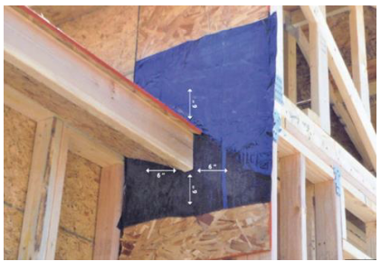
Example #1 — Flashing: Add a 2’ × 2’ piece of flashing between the 2x4 and sheathing. It will ultimately be behind the housewrap.
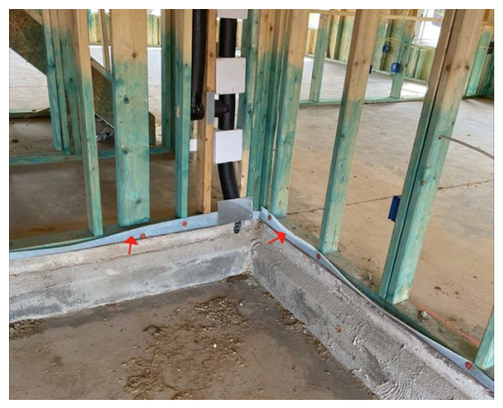
Example #2 — Garage Sill Seal (IBACOS item): Any interior garage wall with living space on the other side needs to have sill seal installed under the wall bottom plates.
Caruso
FLOORS: • Tetragrip screw and glue all subfloor. • Framer to reference the BFS floor layout during install. • Install attic plywood for platforms. • I-joists and flooring beams are to be glued at seat of hanger/buckets. WALLS: • All homes are currently stick built and wall panel built. • Glue all wall plates, including interior walls. • Glue and Tetragrip nail wall plates on second floors. • Stud spacing: 16” O.C. bearing walls, 16” O.C. for interior walls unless specified otherwise on plan. • Double 2x wall top plates. • Add wall nailers/dead wood to wall corners for sheetrock to screw to. • Attic pull down doors are standard R.O. 25 ½” x 38”, unless specified differently on plan. • Attic access smurf door standard R.O. 26 ½” x 38”, unless specified differently on plan. • Framer to install Thermaply on unfished room walls. • BFS is not responsible for installing concrete anchor bolts to bottom plates of load bearing walls. • California corners on all walls are required (Energy Star). • Framer is to install solid backups (nailers/blocking) for cabinets, rails, microwaves, ceiling fans, shower rods, tub trim, and angled walls. • Backing will also be provided for fiberboard in all ceramic wall tile areas. Confirm locations with onsite builder. • Window openings have drywall returns unless specified differently on plan or selections. STAIRS: • Stairs are prefabricated and delivered based off frame start date. • Stairs in unfinished areas will remain unfinished. • Knee walls on stairs need to be 42” tall unless specified on the plan. • DO NOT nail finished riser board. Nail stringers to walls. GARAGE: • Install jamb on all garage doors. Width of jamb will be determined by width of wall. • Install garage door support aka. “Goal Posts” on inside wall of all garage doors. 1. 2x6 vertical legs on outside of garage door. 2. 2x6 horizontal header across top of garage door. 3. 2x10 vertical from center of top of opening to ceiling. • Treated lumber should be used when in contact with concrete. SHEATHING: • Only use button caps to install housewrap, no staples. ROOF: • All homes currently have roof trusses. • Install Techshield roof sheathing on all homes. • Only use button caps to install housewrap, no staples. • Only install the structural porch posts that are marked on the plan. • DO NOT nail bottom truss chords to top plates of interior walls. • A 2x4 catwalk must be installed, securing bottom chords of all trusses per manufacturer’s drawings and specifications. ENERGY STAR REQUIREMENTS: • Headers above windows and doors to be insulated with DOW ½” foam. • California corners on all walls are required. • See energy star inspection report example below.
ENERGY STAR FIELD EXAMPLES
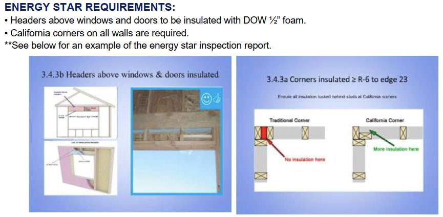
Example #1 — Headers and California Corners: Energy Star inspection examples for header insulation and California corners.
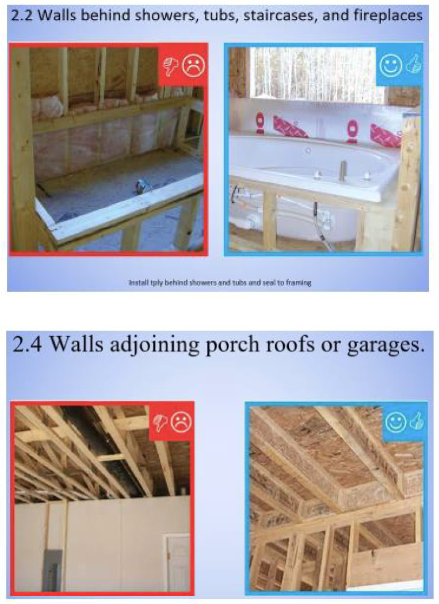
Example #2 — Wall Backing: Inspection comparisons for walls behind showers, tubs, staircases and fireplaces, and walls adjoining porch roofs or garages.
Drees
FLOORS:
• Glue and Tetragrip wall plates on second floors.
• Tetragrip screw and glue all subfloor.
• Framer to reference the BFS floor layout during install.
• Install attic plywood for platforms.
• Walk boards need to stay on site for people to walk on up to home. Built by framer on site.
• I-joists and flooring beams are to be glued at seat of hanger/buckets.
WALLS:
• All homes are currently stick built walls.
• Stud spacing: 16” O.C. bearing walls, 24” O.C. non-bearing walls.
• ****All sill plates are 2x6, not 2x4.****
• Double 2x wall top plates.
• Add wall nailers/dead wood to wall corners for sheetrock to screw to.
• BFS is not responsible for installing concrete anchor bolts to bottom plates of load bearing walls.
• Glue or Tetra-grip all interior and exterior wall bottom plates on 2nd floor. Install sill seal beneath all exterior 1st floor walls.
• Cabinet wall blocking: 34” vanity, 34” kitchen/raised vanity/pedestal, 54” uppers, 96” for 42” uppers, 102” over hood vents.
• Install blocking for handrails at 36”-38” above finished floor.
SHEATHING:
• Only use button caps to install housewrap, no staples. Sales team will deliver button caps.
• For a crawl space foundation, add PVC flashing around porches. Rubber flashing around rim board to top course of block,
metal flashing installed on top of the rubber flashing, then Tyvek housewrap over the metal.
• Where soffit meets exterior wall, add flashing at drainage plane before housewrap.
STAIRS:
• Stairs are prefabricated and delivered based off frame start date.
• Confirm if a kneewall is needed or if open rail was selected based off builders selection sheet in Appwright.
• DO NOT nail finished riser board. Nail stringers to walls.
DOORS & WINDOWS:
• All interior doors on 10’ first floor walls are 8’.
• All garage exterior service doors are 6’8”.
• DO NOT wrap the housewrap inside of the opening. If the framer is going to cut the housewrap on the window and door openings,
then they need to cut the housewrap flish with the OSB or cover all of the openings.
EXTERIOR:
• Add brick/stone pocket when home has brick or stone.
• Add front and rear porch flashing for concrete. Add PVC flashing around porches. Rubber flashing around rim board to top course of block,
metal flashing installed on top of the rubber flashing, then Tyvek housewrap over the metal.
• Tyvek housewrap needs to be installed below the wall sheathing by at least 2".
• If home has 24” soffit, add blocking in soffit at 12” O.C.
• Walk boards need to stay on site for people to walk on up to home.
ROOF:
• All homes currently have roof trusses.
• Only use button caps to install housewrap, no staples. Sales team will deliver button caps.
• Only install structural posts marked on the plan.
• Roof tie downs installed, every roof.
• Add roof anchors through the roof sheathing on the rear of the home. (Example #4 below).
• Tech shield on roof systems.
• Ice and water in valleys.
• Install Tough Skin 20 Synthetic Roof Underlayment on all homes.
• DO NOT nail bottom truss chords to top plates of interior walls.
• Cut out roof sheathing under roof overframe section to allow air flow.
TRIM:
• Marked out on plan in foyer off garage as an option.
ROUGH OPENINGS:
• Window and door openings are per plan.
• Electric fireplace rough opening: 51” wide, 19 ¾” high, 12” off floor.
• Gas fireplace rough opening: 42 3/8” wide, 42” high off floor.
• Fireplace hearth size: 20” x 72”.
• All attic access doors need to be 26” wide to fit a 25 ½” PDS.
FIELD EXAMPLES
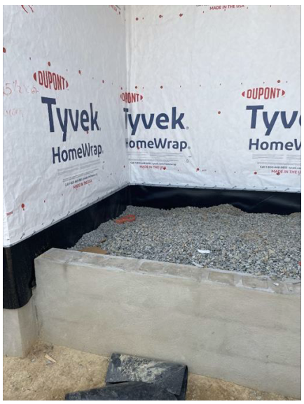
Example #1 — Porch PVC Flashing: For a crawl space foundation, add PVC flashing around the porches.
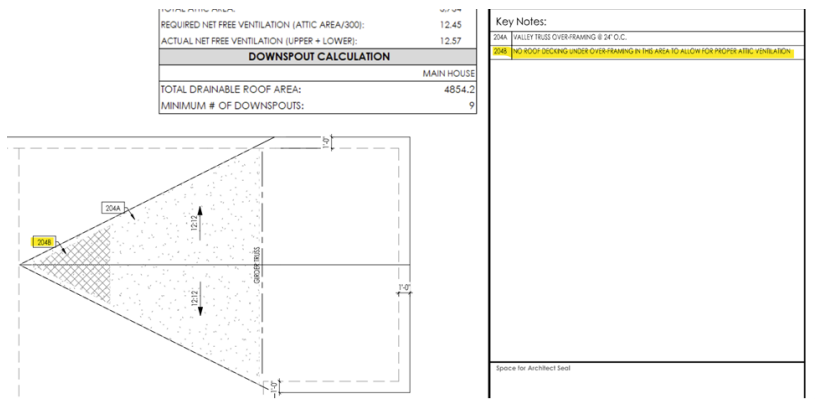
Example #2 — Roof Overframe Airflow: Cut out the roof sheathing under the roof overframe section to allow for air flow.
Example #3 — Soffit Drainage Plane Flashing: Where the soffit meets an exterior wall, add flashing at the drainage plane before installing the housewrap.
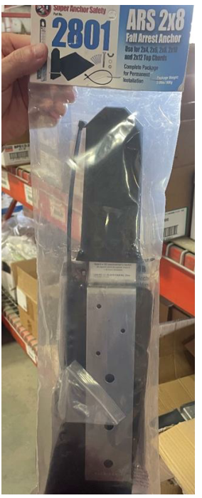
Example #4 — Rear Roof Anchors: Add roof anchors through the roof sheathing on the rear of the home.
DreamFinders
FLOORS: • Glue and Tetragrip wall plates on second floors. • Tetragrip screw and glue all subfloor. • Framer to reference the BFS floor layout during install. • Install attic plywood for platforms. • Walk boards need to stay on site for people to walk on up to home. • I-joists and flooring beams are to be glued at seat of hanger/buckets. WALLS: • All homes are currently stick built walls. • Stud spacing: 16” O.C. bearing walls, 24” O.C. non-bearing walls. • Double 2x wall top plates. • Add wall nailers/dead wood to wall corners for sheetrock to screw to. • Attic pull down doors are R.O. 25 ½”” x 38”. • Attic access smurf door R.O. 26 ½” x 38”. • BFS is not responsible for installing concrete anchor bolts to bottom plates of load bearing walls. STAIRS: • Stairs are prefabricated and delivered based off frame start date. • Confirm if a kneewall is needed or if open rail was selected based off builders selection sheet in Appwright. • DO NOT nail finished riser board. Nail stringers to walls. GARAGE: • Install jamb on all garage doors. Width of jamb will be determined by width of wall. • Install garage door support aka. “Goal Posts” on inside wall of all garage doors. 1. ▪ 2x6 vertical legs on outside of garage door. 2. ▪ 2x6 horizontal header across top of garage door. 3. ▪ 2x10 vertical from center of top of opening to ceiling. • Treated lumber should be used when in contact with concrete. SHEATHING: • Only use button caps to install housewrap, no staples. Sales team will deliver button caps. ROOF: • All homes currently have roof trusses. • No longer using Techshield sheathing. • Only use button caps to install housewrap, no staples. Sales team will deliver button caps. • Only install the structural porch posts that are marked on the plan. • DO NOT nail bottom truss chords to top plates of interior walls.
Epcon
FLOORS: • Glue and Tetragrip wall plates on second floors. • Tetragrip screw and glue all subfloor. • Framer to reference the BFS floor layout during install. • Install attic plywood for platforms. • Walk boards need to stay on site for people to walk on up to home. • I-joists and flooring beams are to be glued at seat of hanger/buckets. WALLS: • All homes are currently stick and panel built walls. • Stud spacing: 16” O.C. bearing walls, 24” O.C. non-bearing walls. • Double 2x wall top plates. • Add wall nailers/dead wood to wall corners for sheetrock to screw to. • Knee walls on stairs need to be 42” tall. GARAGE: • Install jamb on all garage doors. Width of jamb will be determined by width of wall. • Install garage door support aka. “Goal Posts” on inside wall of all garage doors. 1. ▪ 2x6 vertical legs on outside of garage door. 2. ▪ 2x6 horizontal header across top of garage door. 3. ▪ 2x10 vertical from center of top of opening to ceiling. • Treated lumber should be used when in contact with concrete. SHEATHING: • Only use button caps to install housewrap, no staples. Sales team will deliver button caps. • Zip wall sheathing will need to be installed. STAIRS: • Stairs are prefabricated and delivered based off frame start date. • Confirm if a kneewall is needed or if open rail was selected based off builders selection sheet in Appwright. • DO NOT nail finished riser board. Nail stringers to walls. ROOF: • All homes currently have roof trusses. • Only use button caps to install housewrap, no staples. Sales team will deliver button caps. • DO NOT nail bottom truss chords to top plates of interior walls.
Greenwood
FLOORS: • Glue and Tetragrip wall plates on second floors. • Tetragrip screw and glue all subfloor. • Framer to reference the BFS floor layout during install. • Install attic plywood for platforms. WALLS: • All homes are currently stick and panel-built walls. • All homes have 2x6 exterior walls, 16” O.C. walls. • Stud spacing: 16” O.C. bearing walls, 24” O.C. non-bearing walls. • Double 2x wall top plates. • Add wall nailers/dead wood to wall corners for sheetrock to screw to. • BFS is not responsible for installing concrete anchor bolts to bottom plates of load bearing walls. • Always build wall in garage to protect water heater on platform. • Install flashing on exterior walls at porches. STAIRS: • DO NOT nail finished riser board. Nail stringers to walls. • Install stairs prior to setting 2nd floor walls. Construct all landings per code requirements. Verify flooring selections for proper placement of landings as some may have hardwood. • All stairs in Greenwood homes will be stained oak treads with painted risers. Pine stairs going to the basement. ATTIC OPENINGS: • Attic accesses shall be framed per plan and as follows: 1. Pull Down Staircases (PDS): 25 ½” x 54 ½”. 2. Cut Down Doors: 22 ½” x 36” at 10” AFF. 3. Scuttle Holes: 22 ½” x 36”. 4. OSB energy blocking shall be installed to trusses at PDS. GARAGE: • Install jamb on all garage doors. Width of jamb will be determined by width of wall. • Install garage door support aka. “Goal Posts” on inside wall of all garage doors. 1. ▪ 2x6 vertical legs on outside of garage door. 2. ▪ 2x6 horizontal header across top of garage door. 3. ▪ 2x10 vertical from center of top of opening to ceiling. • Treated lumber should be used when in contact with concrete. SHEATHING: • House wrap shall be stapled DO NOT USE BUTTON CAPS. ROOF: • All homes currently have roof trusses. • Only use button caps to install housewrap, no staples. Sales team will deliver button caps. • Only install the structural posts that are marked on the plan. • Roof tie downs installed, every roof. • Only use provided Tech Shield roof sheathing for conditioned areas. It is not to be used on porches, 3rd car garages or energy blocking. Misused material will be the responsibility of the framer and project manager. • Install 2x6 sub fascia on all homes. • Install two safety roof harness hooks to the roof system. One on each side of the roof. (Example 1 below).
KB
General note: Chases are included in the KB framing scope of work. Do not charge the builder separately for chases.
FLOORS: • Glue and Tetragrip wall plates on second floors. • Tetragrip screw and glue all subfloor. • Framer to reference the BFS floor layout during install. • Walk boards need to stay on site for people to walk on up to home. WALLS: • All homes are currently panel walls, not site stick built. • Stud spacing: 16” O.C. bearing walls, 24” O.C. non-bearing walls. • 1x4 for wall top plates. (Example Number 4 below) • No backing for sheetrock nailers/no dead wood. • Glue all wall bottom plates. • Do not install thermaply on walls. • Do not install anchor bolts on load bearing walls bottom plates. • Add blocking around shower pans. (Example Number 3) • DO NOT install STC clips to non-load bearing walls. Install SDPW1400 deflector screws through the wall top plates to the bottom of the truss chords. (Example Number 6) STAIRS: • Stairs are prefabricated and delivered based off frame start date. • Confirm if a kneewall is needed or if open rail was selected based off builders selection sheet in Appwright. o If a kneewall is selected, height should be framed at 40” tall, due to railing building code. 38” will not work. • DO NOT nail finished riser board. Nail stringers to walls. • When the stairs and landing are carpet, framer needs to have the landing OSB to overhang the stairs to create the nosing reveal. SHEATHING: • Only use button caps to install housewrap, no staples. Sales team will deliver button caps. • Housewrap needs to overhang at least 2” below the wood wall over the foundation. • For a crawl space foundation, add PVC flashing around the porches. (Example Number 5 below) GARAGE: • Install jamb on all garage doors. Width of jamb will be determined by width of wall. • Install garage door support aka. “Goal Posts” on inside wall of all garage doors. 1. ▪ 2x6 vertical legs on outside of garage door. 2. ▪ 2x6 horizontal header across top of garage door. 3. ▪ 2x10 vertical from center of top of opening to ceiling. • Treated lumber should be used when in contact with concrete. • Sill sealer for wall plates need to be pulled up and nailed to the walls for sheetrock seal. (Example Number 2 below) ROOF: • All homes are currently truss designed roofs. • Ice and water shield behind the porch beam connections. (Example 1 below) • Ice and water shield on all valleys on townhomes and single families. • Framer installs all porch posts that are specified on the plans. • DO NOT nail bottom truss chords to top plates of interior walls. • DO NOT install hurricane clips. Instead, install SDWC truss screws through wall top plate. • Install two permanent roof safety tie downs on each house. IBACOS INSPECTION: • Builder will have a national inspection done once a year (typically in May) to have their product inspected for quality of work. DECKS: • If the foundation is a crawl space, BFS will frame the deck. The framer will not frame the deck. A BFS deck subcontractor will frame the deck. Sales team will have a deck Appwright job created.
FIELD EXAMPLES
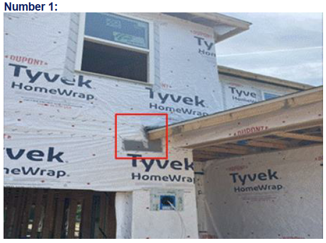
Example #1 — Porch Beam Flashing: Install ice and water shield behind the porch beam connections.
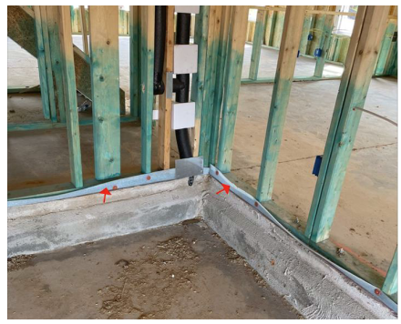
Example #2 — Sill Sealer: Sill sealer for wall plates needs to be pulled up and nailed to the walls for the sheetrock seal.
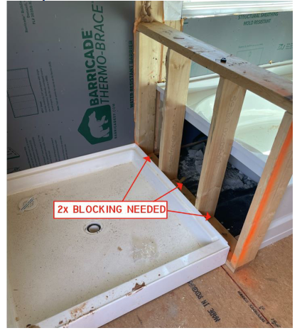
Example #3 — Shower Pan Blocking: Add blocking around shower pans.
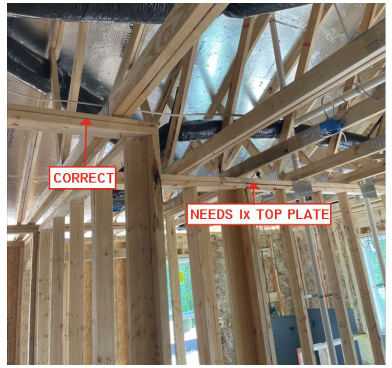
Example #4 — Wall Top Plates: Use 1x4 for wall top plates.
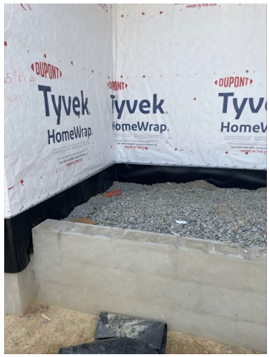
Example #5 — Porch PVC Flashing: For a crawl space foundation, add PVC flashing around the porches.
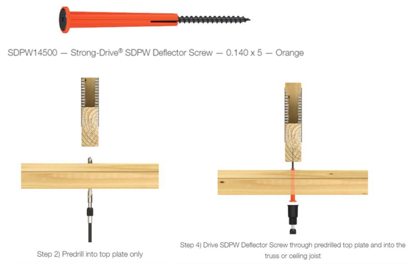
Example #6 — Deflector Screws: DO NOT install STC clips to non-load bearing walls. Install SDPW1400 deflector screws through the wall top plates to the bottom of the truss chords.
The supplied reference image is labeled SDPW14500.
McKee
FLOORS: • Glue and Tetragrip wall plates on second floors. • Tetragrip screw and glue all subfloor. • Framer to reference the BFS floor layout during install. • Install attic plywood for platforms. • Walk boards need to stay on site for people to walk on up to home. • I-joists and flooring beams are to be glued at seat of hanger/buckets. WALLS: • All homes are currently panel built walls. • Stud spacing: 16” O.C. bearing walls, 24” O.C. non-bearing walls. • Double 2x wall top plates. • Add wall nailers/dead wood to wall corners for sheetrock to screw to. • Attic pull down doors are R.O. 25 ½” x 38”. • Attic access smurf door R.O. 26 ½” x 38”. • BFS is not responsible for installing concrete anchor bolts to bottom plates of load bearing walls. STAIRS: • Stairs are prefabricated and delivered based off frame start date. • DO NOT nail finished riser board. Nail stringers to walls. GARAGE: • Install jamb on all garage doors. Width of jamb will be determined by width of wall. • Install garage door support aka. “Goal Posts” on inside wall of all garage doors. 1. 2x6 vertical legs on outside of garage door. 2. 2x6 horizontal header across top of garage door. 3. 2x10 vertical from center of top of opening to ceiling. • Treated lumber should be used when in contact with concrete. SHEATHING: • Only use button caps to install housewrap, no staples. Sales team will deliver button caps. ROOF: • All homes currently have roof trusses. • No longer using Techshield sheathing. • Only use button caps to install housewrap, no staples. Sales team will deliver button caps. • Only install the structural porch posts that are marked on the plan. • DO NOT nail bottom truss chords to top plates of interior walls. • Framer to install brick pockets that are needed. PORCHES: • Framer needs to set porch posts 2” back from edge of concrete slab so trim does not hang over concrete.
FRAMING EXAMPLE — PORCH POSTS
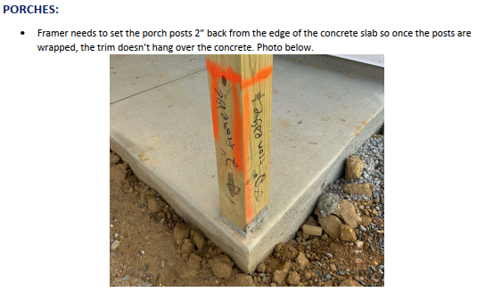
Set porch posts 2 inches back from the edge of the concrete slab so the trim does not hang over the concrete once the posts are wrapped.
Deck Scope of Work
Items 1–6
- Steps: Notch the bottom tread around posts. Add skirt board over bolts at the top step.
- Bracing: Screw bracing; do not use bolts.
- Skirt Board: Install skirt board around the deck band.
- Deck Bands: Bolt bands to the house; do not screw.
- Railing Pickets: Nail all pickets so they do not spin.
- Corner Posts: Install trim board against the wall before installing the post.
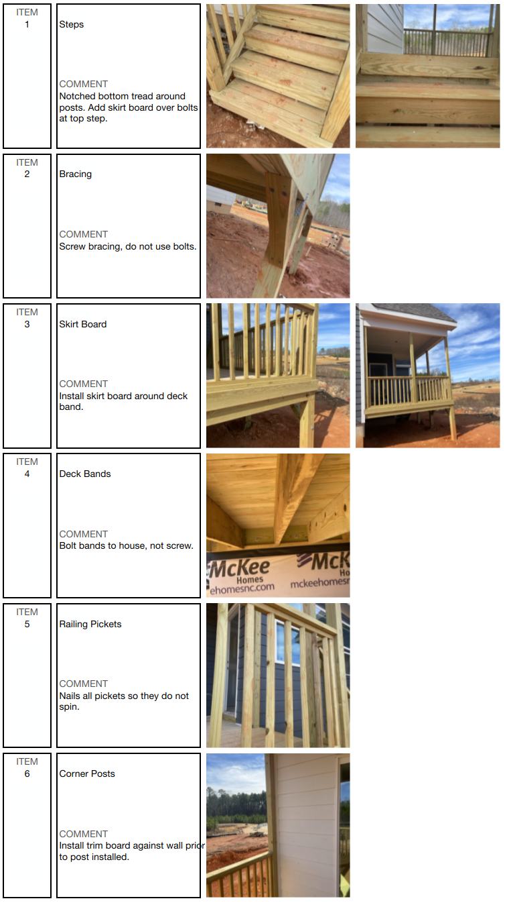
Deck Scope of Work — Items 1–6
Items 13–15
- Material Tags: Remove material tags from all boards.
- Railing Support: McKee accepts one longer railing spindle to support the railing instead of a 2x block.
- Screened Decks — Joists: Do not install screen under deck joists for any McKee deck.
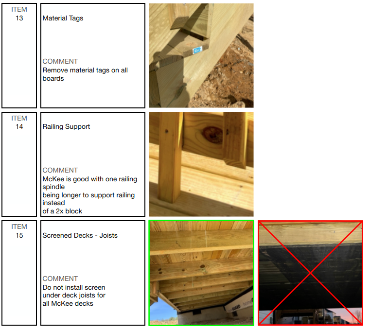
Deck Scope of Work — Items 13–15
Stanley Martin
FLOORS: • Glue and Tetragrip wall plates on second floors. • Tetragrip screw and glue all subfloor. • Framer to reference the BFS floor layout during install. • Install attic plywood for platforms. • Walk boards need to stay on site for people to walk on up to home. • I-joists and flooring beams are to be glued at seat of hanger/buckets. WALLS: • All homes are currently panel built walls. • Stud spacing: 16” O.C. bearing walls, 24” O.C. non-bearing walls. • Double 2x wall top plates. • Add wall nailers/dead wood to wall corners for sheetrock to screw to. • Attic pull down doors are R.O. 25 ½” x 38”. • Attic access smurf door R.O. 26 ½” x 38”. • BFS is not responsible for installing concrete anchor bolts to bottom plates of load bearing walls. STAIRS: • Stairs are prefabricated and delivered based off frame start date. • Knee walls on stairs need to be 42” tall. • Check option sheet for item codes OPT 6051 and OPT 6035 for open rail vs knee wall selections. • If in doubt and stairs are pine box, build a knee wall. • DO NOT nail finished riser board. Nail stringers to walls. GARAGE: • Install jamb on all garage doors. Width of jamb will be determined by width of wall. • Install garage door support aka. “Goal Posts” on inside wall of all garage doors. 1. 2x6 vertical legs on outside of garage door. 2. 2x6 horizontal header across top of garage door. 3. 2x10 vertical from center of top of opening to ceiling. • Treated lumber should be used when in contact with concrete. SHEATHING: • Only use button caps to install housewrap, no staples. Sales team will deliver button caps. ROOF: • All homes currently have roof trusses. • No longer using Techshield sheathing. • Only use button caps to install housewrap, no staples. Sales team will deliver button caps. • Only install the structural porch posts that are marked on the plan. • DO NOT nail bottom truss chords to top plates of interior walls.
Framing Crews Not Allowed On Site
- Isreal Gonzalez - J Cortes Construction
- Adan - Chyve Torres Construction
- Armado - Santiago G. Construction
- Transito - Carlos Lira Framing
- Wilber - Carlos Lira Framing
- Raphael - Camero Framing
- Tree Man Crew from Oscar - Santiago G. Construction - (OG14)
- Jose - Cabreras Construction (Jones Dairy 103)
- Uriel - FC Framing - Usage of alcohol on site - Warning given
- Raphael - A. Rodriguez Construction
- Antonio - Cortazar Construction - A. Rodriguez Construction
Overview
The Framing SOP outlines the full lifecycle of a framing job from initial scheduling through final completion and closeout. This process ensures consistency, quality, safety, and accountability across all Builders FirstSource Raleigh Install Services framing operations.
All framing jobs must be managed through Appwright, which serves as the central system for scheduling, communication, documentation, and task tracking. Every Project Manager is responsible for maintaining accurate and up-to-date information within Appwright throughout the duration of the job.
The goal of this SOP is to:
- Ensure all jobs are properly scheduled and staffed
- Maintain consistent build quality across all projects
- Enforce safety standards aligned with “Drive to Zero”
- Provide clear communication between Install, Sales, Builders, and Subcontractors
- Document all work, changes, and issues for accountability
This SOP should be followed on every framing job without exception. Any deviations, change orders, or issues must be documented and approved through the proper channels before work continues.
Framing Basics
REQUIRED – SITE UPDATE AFTER EVERY JOBSITE VISIT
Every time you are on the jobsite, send an Appwright message to the Sales team and Framing Install Department with a site update so everyone is aware of the job’s progress. Include current progress, any issues or delays, and next steps.
Important requirements to review on every framing job. Use the approved plans, engineered details, manufacturer instructions, and the builder-specific requirements in this playbook. Resolve conflicting information with the Framing Install Department before proceeding.
Concrete Wedge Anchors — Exterior Wall Bottom Plates
BFS and our framing subcontractors DO NOT install concrete wedge anchors (bolts) in exterior wall bottom plates under any circumstances.
If anchors are missing or the builder requests installation, notify the Framing Install Department and document the issue in Appwright. The builder must arrange installation by the responsible trade. This scope restriction does not remove the required anchorage from the approved design.
Titans — Manufacturer Requirements
If the framer cuts the concrete J-bolts, the framer is responsible for installing the replacement Titan screws. Install the specified replacement anchors in accordance with the approved anchorage detail and the manufacturer’s requirements for the exact product.
Titans must ALWAYS be installed according to the manufacturer’s requirements for the exact product being used.
Verify the specified product and current installation instructions before work begins. Follow all applicable requirements for the supporting material, hole preparation, embedment, spacing, edge distances, washers, and installation torque. Do not substitute products or improvise an installation. If requirements cannot be met, stop that installation and contact the Framing Install Department.
Plans, Layouts & Structural Connections
- Use the correct approved plan revision, floor layout, truss layout, and engineered connection details for the job. Confirm changes before building.
- Install specified hangers, straps, hold-downs, and fasteners in accordance with their approved details and manufacturer instructions. Do not substitute fastener types or leave required connections incomplete.
- Do not cut, drill, notch, or modify trusses, engineered lumber, or structural members outside their approved details. Obtain the required written repair or design approval before proceeding.
- Truss repairs must match the engineer’s repair letter. Upload the repair detail and before-and-after photos into Appwright.
Walls, Bearing & Bowed Studs
- Verify bearing locations, posts, headers, wall alignment, and required blocking against the approved plans. Report missing or conflicting support details before covering the work.
- Check for bowed or damaged studs before sheetrock. Bowed studs must be corrected by the framer at no additional cost, including studs supplied in wall panels.
- Check the builder-specific requirements for sill seal, treated lumber, wall backing, and garage goal posts. Complete required items before closeout.
Prefab Stairs
- DO NOT nail through finished riser boards. Secure stair stringers to the supporting framing using the approved stair installation details.
- Verify opening dimensions, finished-floor heights, stringer support, and required connections. Refer to the Stairs section for installation reference images.
Weather, Bracing & Jobsite Readiness
- Do not set trusses when there is a risk of severe weather. Make sure materials, trusses, and walls are secured and braced according to the applicable plans and installation requirements.
- Verify site readiness and required access before sending a crew or equipment. Follow the crane and severe-weather policies in this playbook.
- Project Managers must notify Install when rental equipment, including forklifts, needs delivery or pickup. The Install Department handles rental and pickup arrangements.
PM Walks, Documentation & Extra Work
- Walk every job on your worklist. Calling an installer for updates does not replace the PM’s onsite inspection.
- Keep daily job updates, photos, deficiencies, plan changes, and inspection results in Appwright. Verify corrections in the field.
- Obtain the required written approval before extra work starts. Document extras through the Framing Appwright and notify Sales and the Framing Install Department.
- Each framing back charge is documented. Repeated issues that cost BFS money may result in the Project Manager being held responsible.
Appwright
Framing Services
Important Notes
- A BFS project manager must be present at every service from start to completion. If a BFS project manager cannot be present, they need to contact the framing install department or contact a peer to cover for them.
- NO EXCUSE for BFS to miss a service. The BFS project manager is included in the email correspondence with the homeowner at least a week in advance of the service. Plenty of time to contact a framer and plan for completing the service. If for some reason a BFS project manager is unable to make it to a service, the framing install department needs to be contacted immediately so the homeowner can be notified.
- Homeowner services should not be scheduled by a BFS project manager.
Service Process
- The builder sends a service request to the BFS sales team. Sales forwards the request to framing install so the service can be created, assigned, and homeowner contact can begin.
- Framing install creates and assigns the service in Appwright, then schedules with the homeowner by email while copying: sales, the requesting builder, and the BFS project manager handling the service.
- If the service is marked red / ON HOLD in Appwright, it is not ready for attendance. If it is marked ACTIVE, attend on the listed date and time.
- Review the worklist for both the service date range and the exact service date/time. The listed Sub Start Date-H/O Service and Sub Completion Date-H/O Service indicate the required attendance window.
- To ensure framer payment, the framer must be assigned to both the sub start and sub completion service tasks. Assign directly in Appwright or contact framing install for support.
- Add clear service notes in each service Appwright and upload all needed documents/photos. Use ALL JOBS when reviewing job documents to ensure complete visibility.
- After completion, upload before/after photos and service notes (or send a message to sales and framing install) detailing adjustments made during the service.
- Sign off every required worklist item once service work is complete.
- If service cannot be completed, notify sales and framing install immediately with a full explanation so the builder and homeowner can be informed.
Please note: “Apex Service” in Appwright does not schedule framing services. The framing install department performs homeowner scheduling. Include the Apex Framing Install team on service communications.
If a builder reaches out to a framing project manager for a service to be completed and scheduled, please forward the service to the sales team and framing install department or tell the builder to send the request over to their BFS sales team.
1) Job Pre-Check – Framing (Appwright Task)
The purpose of this task is to start the scheduling process and check jobsite readiness. All job information (subcontractor, address, plans, truss documentation, etc.) is located in the Appwright worklist under the document section.
Site Assessment
- Verify site ready within 2 days
- Site graded and ready for deliveries
- Site backfilled and safe for framers
- If unsafe → contact builder for resolution
- Unfilled porches must be blocked off
- Temp power available (or request resolution)
- Document if generator is needed
- Foundation ready within 2 days
- Measure pony walls / knee walls and send to Sales via Appwright
- Ensure permitted plans are in permit box
- Measure and order steel if applicable
Delivery Coordination
- Basement / First Floor framing
- Wall panels
- Second floor framing
- Second floor wall panels
- Trusses
IMPORTANT: Send ALL schedule requests in Appwright. DO NOT call Sales or Framing for schedule changes.
Pre-Check Photo Documentation – Power, Foundation & Grade
Upload actual jobsite photos to the Job Pre-Check task in Appwright showing whether temporary power is available and whether the foundation and grading are ready. Include the lot/address, inspection date, observed condition, and any action needed.
Temporary Power Pole – Meter Installed vs. No Meter
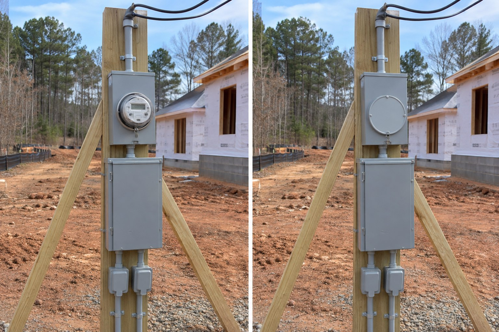
Left – Meter installed: Photograph the pole and a clear view of the installed meter. Record whether usable power has been confirmed; a meter alone does not confirm power is on.
Right – No meter installed: Photograph the pole showing the missing meter. Document that power at this pole is not confirmed available and communicate the issue before scheduling. Follow the No Power Policy if a generator is needed.
Example Appwright Photo Uploads & Notes
Use the following as examples when labeling photos and adding the accompanying Appwright note. Replace brackets with the actual job details.
| Photo label | Example accompanying note |
|---|---|
| Pre-Check – Temp Power Available – [Lot] – [Date] | Meter installed. Usable temporary power confirmed by [name/role] on [date]. Pole location: [location]. Actual pole and meter photos attached. |
| Pre-Check – No Meter / Power Not Available – [Lot] – [Date] | No meter installed at temporary power pole. Power not available at this pole as of [date]. Builder notified: [name/date]. Generator needed: [yes/no/pending]. Sales/Install notified in Appwright: [details]. |
| Pre-Check – Meter Installed / Power Unconfirmed – [Lot] – [Date] | Meter present, but usable power has not been confirmed. Builder follow-up required: [owner/date]. Do not document power as available until confirmed. |
| Pre-Check – Foundation & Grade – [Lot] – [Date] | Foundation in place. Exterior backfill/grade and delivery access observed: [ready/not ready]. Photos attached from multiple sides. Remaining issues and responsible party: [details]. |
Foundation in Place & Site Graded
Left – Slab foundation. Right – Block/crawlspace foundation. Take wide photos from multiple sides showing the foundation in place, exterior backfill and grade, and access for framers and material deliveries. Photograph any incomplete areas or access concerns and document the required correction in Appwright.
Site Access – Not Ready vs. Delivery Ready

Left: mud, ruts, and obstructions limit access. Right: a firm, clear delivery approach with prepared surrounding grade. Document access concerns and coordinate required corrections with the builder before delivery.
Delivery Issues – Condition, Tag & Placement
Photograph damaged or missing items, delivery tags, and where material was placed onsite. Compare the actual count and condition with the delivery paperwork, identify shortages clearly, and send the issue to Sales and Install through Appwright.
Framing Pre-Construction Checklist
Job Pre-Check
Complete prior to Pre-Con with Framer & Builder Rep (B.R.)
- Power onsite, or notify sales team that framer will need to supply generator
- Grade complete and site is safe for framers
- Slab/foundation square and level (visual inspection)
- Material delivery scheduled appropriately for build-time and jobsite space
- Confirm frame plans are onsite and match plans in Appwright
- Measure and submit foundation step-downs, if applicable
Redline Plan Instructions
- Redline hardcopy of builder supplied plans and have B.R. sign/date each page. Upload photos of redlined plans to Appwright labeled "Redline plan – Date".
Redline Annotations Must Include:
- Selections marked
- Fireplace openings marked
- Exterior door openings marked
- Stair railing options marked
- Shower/tub options marked
- Window and Door R.O. verified and marked (if not call-size)
- Tray/coffer ceiling details marked
- Attic access opening size/location verified (minimum 22.5" x 31")
- Shower bench height and pitch verified and marked
- Additional or modified chases marked
- Stud spacing verified if different than 16" O.C.
- Any slab/foundation discrepancies discussed with builder superintendent
- Any custom changes confirmed by builder and documented
- Redlined plans signed and dated by builder superintendent
Note:
Any redline changes AFTER Pre-Con must be updated, signed/dated by B.R., and re-uploaded into Appwright labeled "Redline plan – New Date". An AW message must be sent to notify the team.
No Power Policy
No Power Policy
If power is not available within 150 ft. of the home, a generator is required to proceed with framing operations.
-
Contact Sales Team
- Submit Appwright message before project starts
-
Framer Provides Generator
- Standard payout: $80/day for generator usage and fuel
- Typical cap: $400 per single-family home
- Townhomes may require Install Manager approval for extended duration
-
BFS Provides Generator
- Project Manager must contact Install Manager for approval
-
Upon approval:
- PM notifies the Install Department of the required rental equipment and delivery/pickup dates; the Install Department coordinates with United Rentals
- Refer to United Rentals section for contact info
- The Install Department handles all rental equipment delivery and pickup scheduling
- Framer responsible for supplying fuel during use
Important Notes
- All generator use must be documented in Appwright
- Approval must be obtained before rental or reimbursement
- Failure to follow process may result in non-payment
2) Subcontractor Readiness
The Project Manager must verify subcontractor is assigned and ready. Do NOT rely on Appwright automated scheduling.
- Confirm subcontractor availability directly
- Verify if the forklift is to be provided by framer or rented. Need to let Jacob know either way
- Install department schedules subcontractors (NOT PM)
- Refer to Appwright worklist for assignments
If subcontractor is assigned:
- Contact subcontractor to confirm dates
- Confirm crew being used is approved
- Confirm lumber delivery schedule
If subcontractor is TBD:
- Contact Install Manager for assignment
- Once assigned → follow normal process
- Ensure plans are available for framer reference
3) Pre-Construction Meeting – Framing (Appwright Task)
The purpose of this task is to review and redline plans with the builder to ensure all selections are correct before framing begins.
Redline plans MUST be uploaded in Appwright for every job.
Plan Preparation
- Ensure plan is available in permit box
- If missing → coordinate with builder or framing department
Review Plans & Selections
- Review with builder representative onsite
- Mark all deviations or changes
- Reference all builder-provided notes and selections directly on the plans so the framer can clearly identify the applicable requirements.
- Add applicable inspection items that failed on previous jobs to the plans as redline reminders. Review these with the framer before work begins so they remain mindful of recurring issues on this and future jobs.
- Minor changes included at no cost if marked early
- Major changes may require change order
Verification
- Verify window & door rough openings
- Confirm stair order and delivery date
- Confirm truss delivery schedule
Documentation
- Upload redline plans to Appwright
- Label as “Redline Plans”
- Ensure info is ready before handing to framer
Subcontractor Coordination
- Schedule meeting with framing subcontractor
- Review scope and redlines
- Review foundation before start
- Document any issues with photos
- PM responsible for builder communication before start
Pre-Con – Documented Redline Changes

Redline the job’s actual plans with truss delivery and stair delivery coordination, the garage drag-truss location and required engineering references, window and door rough-opening checks, and homeowner changes. Verify rough openings against the applicable schedules and manufacturer requirements; verify drag-truss details against the truss engineering. Review with the builder, obtain signature/date, and upload the signed redlines to Appwright.
Garage Drag Truss – Field Identification & Layout
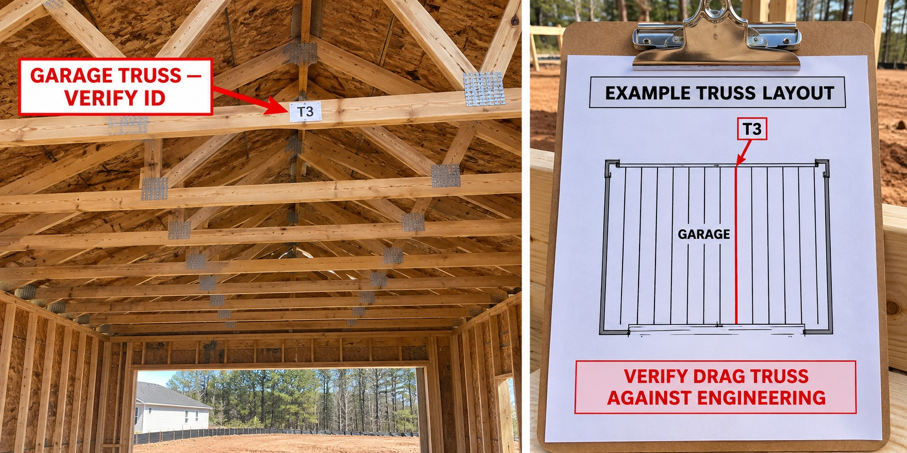
Match the field truss ID and garage location to the approved truss layout and engineering. Redline the drag-truss reminder during Pre-Con and photograph the applicable ID and connections for verification. Do not identify a drag truss by appearance alone.
4) Sub Start Date – Framing (Appwright Task)
SUB START DATE TASK TO BE ADJUSTED BY INSTALL MANAGEMENT ONLY
If you need the start date adjusted due to delays, send an Appwright to LIST: Install Framing for assistance. All other tasks are directly related to the sub start date task and proper care must be taken to ensure continuity.
- Verify material delivery prior to this date with Sales team.
- Sign off on task list in Appwright once framer has started
- Date of sign off is important for tracking purposes and progression of project.
(1) Block Foundation
- Open Floor inspection required before floor framing can be covered.
- This is a courtesy inspection by most municipalities but required by BFS unless written approval is provided by builder.
- Project Manager must verify readiness and coordinate repairs before inspection.
- Coordinate scheduling with Builder:
- Typically scheduled the day after framing starts
- PM must confirm readiness before builder calls inspection
- Once inspection passes, framing subcontractor can proceed.
(2) Basement Foundation
- May require Open Floor inspection depending on municipality.
- Contact builder representative for direction.
- Inspection must pass before framing proceeds if required.
5) Project Management – Framing
- Attendance at every jobsite is required daily.
-
Appwright Scheduling Adjustments
-
Adjustments to the Task Schedule in Appwright are the sole responsibility of the Framing Project Manager.
- Some items such as window and door delivery and install are directly linked to these tasks and it is imperative that the schedule is reviewed and adjusted regularly if needed.
-
Adjustments to the Task Schedule in Appwright are the sole responsibility of the Framing Project Manager.
-
Job Safety
-
Job safety walks must be done daily for each building.
- Verbal warnings must be given for all infractions. Documentation in Appwright is required.
- If issues continue, contact Safety Manager and Framing Install Department.
-
Job safety walks must be done daily for each building.
-
Communication
- Daily communication with framing subcontractor.
- Communication with Builder on job status.
- Communication with Sales & Install via Appwright.
- Communicate delays if subcontractor is not onsite.
- Material ordering must be communicated through Appwright.
-
This process is important for tracking extra material for correction of takeoffs.
- ALL MATERIAL REQUESTS MUST INCLUDE “WHY” AND “WHAT” IN APPWRIGHT.
-
Order Stairs – verify timing and dimensions with Sales team
- Contact Sales in Appwright
-
Sales will need:
- Total Rise (floor to floor)
- Wall-to-wall framing dimensions
Daily Site Update – Message & Progress Photos
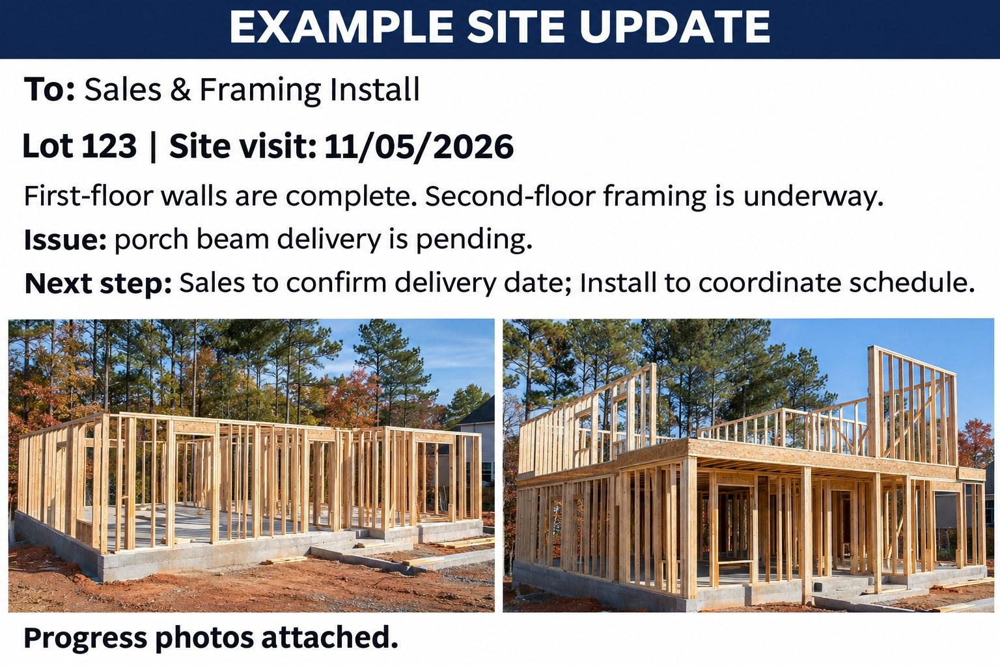
Example update to Sales and Framing Install identifying progress, an outstanding issue, the next action, and attached progress photos. Replace the sample lot, date, and details with the actual site conditions.
Material Damage – Wide View & Close-Up
Document damaged wall panels, sheathing, and lumber with a wide location photo and clear close-ups. Include the lot, material identification, and visible damage in Appwright; coordinate resolution with Sales and Install.
6) Safety Inspection Reports – Framing (Appwright Task)
Onsite inspection and photo requirements: The Project Manager must be physically onsite to perform the inspection and complete the inspection report. Photos received from the framer are not permitted in inspection reports. Photos from another job are also prohibited. The PM must take photos at the specific job being inspected that accurately document the conditions observed during that inspection.
One safety inspection is required per job. 3 per week, 10 per month, and 30 per quarter. Required for OSHA compliance.
-
Complete all sections with photos, notes, and corrective actions.
- Every field MUST include notes and photos.
- PM and subcontractor must sign the report.
7) First Walk Framing – (Appwright Task)
This task should be completed before the framer is finished and before trades are onsite. Deficiencies should be marked with black or red marker in the area of error for the subcontractor.
A FULL WALK IS REQUIRED including inspection of all structural, architectural, and quality control items. Refer to Section VI pages 1–4 for examples.
FIRST FRAME WALK MUST BE COMPLETED PRIOR TO PAYING THE FRAMER THEIR 90% DRAW.
Do not approve or release the 90% draw until the first frame walk is complete.
The following must be verified:
-
Checking all Window and Door openings – NO EXCEPTIONS
- If correct → place check mark in opening
-
If incorrect:
- Mark correct size in opening
- Spray paint opening
- Framer MUST fix before leaving
- PM must verify correction
-
If BFS installs windows/doors:
- PM must complete this task in Window & Door Appwright job
- Must be completed before deadlines to prevent delays
- Once complete → date and PM initials at front door
- Structural plan matches field construction
-
Floor plan matches field conditions
- Window & door counts, sizes, and locations correct
- Selections installed correctly
- Elevation matches plans
-
Trade prep items complete
- Chases installed
- Plywood at chases/flues
- HVAC platforms (if required)
If truss layouts, seals, or documentation are missing:
- Contact Framing Install Department
- OR use “Job Lookup” in Appwright
First Walk – Marked Issue & Verified Correction
Left: marked blocking issue. Right: the corrected condition. Identify deficiencies against the approved plans, mark the issue for the framer, and photograph the completed correction after the PM verifies it.
Window & Door Openings – Measurement Photos
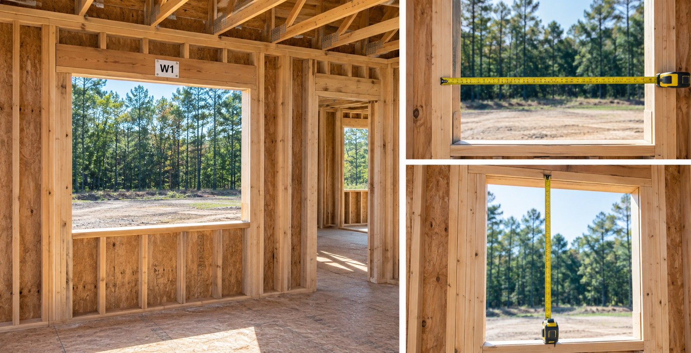
Document each opening’s location, width, and height. Include a wide identification photo and close-ups with readable tape measurements. Compare window and door rough openings against the approved schedules and manufacturer requirements.
Before Covering – Blocking, Connections & Flashing
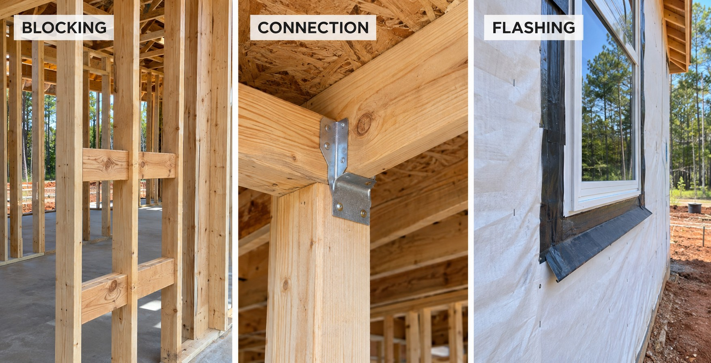
Photograph required blocking, connections, and flashing before they are covered. Include enough surrounding context to identify the location and a close-up of the detail. Verify each item against the applicable approved plans, builder requirements, and manufacturer instructions.
8) Material Return Requests – (Appwright Task)
THE MATERIAL RETURN REQUEST MUST BE ENTERED IN APPWRIGHT FOR PICKUP BEFORE THE FRAMER IS PAID THEIR 90% DRAW.
Do not approve or release the 90% draw until the material return request has been submitted for pickup with all required information and photos.
Material pickup should be completed after the First Walk Framing is complete. All material must be stacked neatly and organized prior to pickup. Pictures must be uploaded into Appwright.
-
Create a new Appwright message including the following lists:
- List: Sales Group
- List: Installed Framing
-
Below recipient lists, select:
- “Material Return Request” under MSG TEMPLATE
-
Complete the auto-populated message:
- Fill out all required information
- Include pictures of material onsite
Material Returns – Not Ready vs. Ready for Pickup
Left: scattered material and obstructed pickup access. Right: sorted, neatly stacked material on supports with clear access. Upload actual material photos with the Appwright return request.
9) Sub Completion Date – Framing (Appwright Task)
This step is completed when the framer has finished the project. The Project Manager is responsible for completing this task. This task triggers payment (Draw Payment 1) for framing through the Accounts Payable team in Appwright.
NOTE: Draw Payment 1 is not the responsibility of the Project Manager. It is strongly recommended to communicate completion expectations clearly to the subcontractor.
Completion includes the following:
- Jobsite cleanliness – inside and outside, including swept conditions
- 2x4 safety rails installed at:
- Window openings
- Stairway openings (handrails)
- Any hazards
- Material stacked, organized, and ready for pickup
- Porch posts installed if required
-
House wrap completed
- Some builders require house wrap in window openings for inspections due to extended window lead times.
- Verify builder-specific requirements before completion.
- If house wrap in windows is intact at completion, photos are required for reimbursement of repairs later.
This task should NOT be signed off until the framing is fully complete.
It is strongly recommended that the Project Manager requires photo documentation from the subcontractor for all items listed above. This supports job cleanliness verification and provides documentation for future conflict resolution.
Completion Examples – Clean Jobsite & Stacked Material
Use these examples when verifying jobsite cleanliness before completing the Sub Completion task.
Left – Interior: Floors swept, trash and loose scraps removed, walking paths clear, and remaining material neatly stacked out of the way.
Right – Exterior: House perimeter and access paths clean, with remaining lumber and sheathing organized, stacked flat on supports, and ready for pickup.
10) Second Walk Framing
- Remark any missed deficiencies from the First Walk using spray paint for subcontractor visibility.
-
Identify and mark any damage caused by other trades for subcontractor clarity.
-
If additional work is required that was not agreed upon during the Pre-Construction Meeting
OR is due to trade damage:
- A labor pick ticket must be entered by the Sales team before work begins
- Refer to Section VI, pages 9–11 for Extra Work Order processing
-
If additional work is required that was not agreed upon during the Pre-Construction Meeting
OR is due to trade damage:
-
Check for bad or bowed studs
- This should be completed prior to sheetrock to prevent material movement issues
- Refer to Section VI, page 13 for bowed stud policy
- Any additional material needed must be ordered at least 3 days prior to requiring subcontractor onsite
Trade Damage – Before & After Documentation
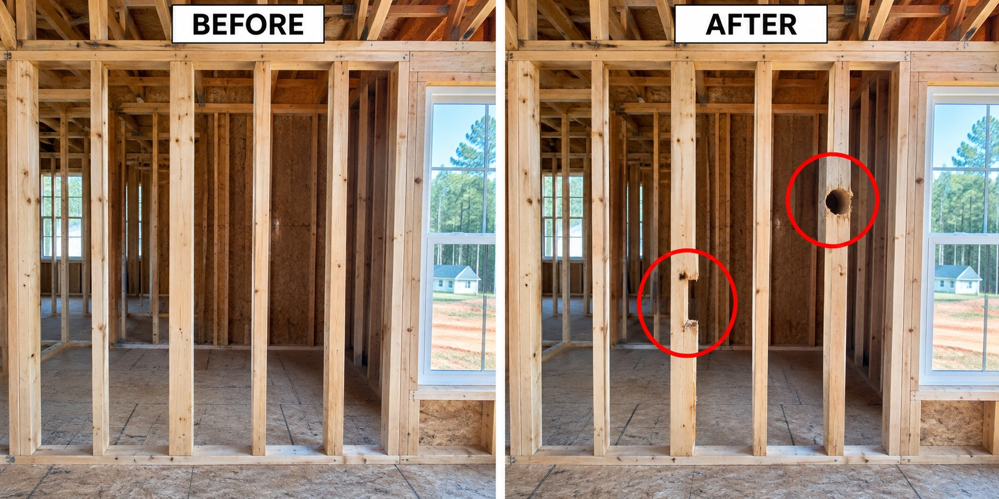
Compare earlier framing photos with the altered condition. Photograph the location and damage, document when it was found, and notify the appropriate team in Appwright. Photos support review; confirm responsibility before assigning costs.
11) Framer Extras – (Appwright Task)
Framer extras must be entered into Appwright through a message sent to the Sales team and the Framing Install Department.
Before any work begins, written approval from the builder must be provided to the Sales team, ideally including a PO. Alternatively, the Sales team may provide approval to proceed.
No extra work should be started without approval. If work begins without approval, the framer risks not being paid.
Even if the Framing Appwright is closed out, all framer extras MUST still be entered into the Framing Appwright. The Framing Install Department or Sales team will create a Service Appwright to ensure payment is processed.
If a framer has questions regarding payment timing (90% / 10% draws or extras), they must contact the Framing Install Department. Sales teams do not determine payment timing.
Example Appwright Message – Framer Extra
Send the change request to the Sales team and Framing Install Department, identify the requested work and payment amount, and obtain approval before proceeding.
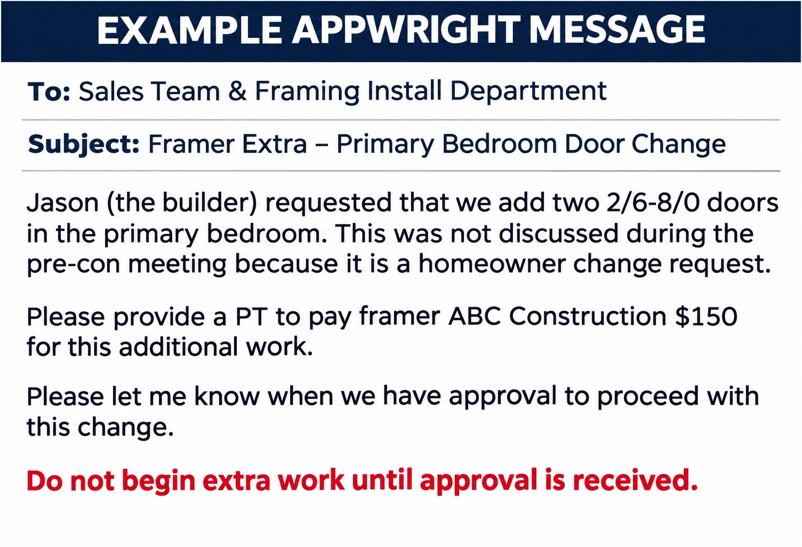
Example message text
To: Sales Team & Framing Install Department
Subject: Framer Extra – Primary Bedroom Door Change
Jason (the builder) requested that we add two 2/6-8/0 doors in the primary bedroom. This was not discussed during the pre-con meeting because it is a homeowner change request.
Please provide a PT to pay framer ABC Construction $150 for this additional work.
Please let me know when we have approval to proceed with this change.
Do not begin extra work until approval is received.
12) Close Out Job – Framing (Appwright Task)
Once framing inspection has been completed and passed, the Project Manager must sign off on this task in Appwright. This ensures the framing subcontractor receives their final 10% of contracted labor.
- All inspection reports must be uploaded into Appwright under documents for record keeping.
-
Goal posts must be installed at this time.
- Do NOT wait for sheetrock installation.
- If there are any questions or issues with builders regarding this requirement, they should be directed to the Install Manager.
Close Out – Inspection Record & Completed Framing
Upload the actual passed inspection documentation and photos showing the completed framing conditions. Verify required garage goal posts and all other closeout items against the applicable plans and builder requirements.
13) Other Tasks and Responsibilities of Project Management
-
Steel Ordering
- Steel beams that are BFS responsibility should be ordered through Peak Steel or Taltons Steel.
- Refer to Section I, page 3 for phone numbers.
- Steel should be ordered at Pre-Con or Pre-Check if foundation is set.
- Timing is at the discretion of the Project Manager due to cost considerations.
- If dimensions cannot be verified early, PM should wait until errors can be minimized before ordering.
-
Engineer Letters
- Refer to Section VI, page 12 for engineer letter requests.
-
Failed Inspections
- Report more than 2 failed inspections to the Framing Install Manager.
-
Back Charge Documentation
- Any communication with builder that may involve a future back charge must be documented in Appwright.
- This prevents issues when back charges arise months after job completion.
- Refer to Back Charge Policy in Section VI, page 14.
-
Recording Builder Communication
- This is not required but highly recommended.
- Proper documentation helps prevent disputes and ensures accountability.
14) Job Lookup
Job Lookup
If a project is no longer on your worklist, you can use Job Lookup to find it. There are several different ways to search for a project. The easiest ways are by Reference Number, Job ID#, or by keyword.
Step 1
Go to "Job Lookup" in Appwright.
Step 2
Change the location you are searching under to include all BFS locations.
- Select appropriate location filter
- Enter job information (Job ID, address, or keyword)
- Use search filters to narrow results if needed
Best Practice
- Use Job ID when available for fastest results
- Verify correct job before opening
- Use keywords if full job info is unknown
Step 3
Change the search field categories based on the information you have available.
- Select appropriate Search Fields (Subdivision, Lot, Builder Name, etc.)
- Use "Starts With" or other filters to refine results
- Enter known job details to narrow down the search
Example
- Search Field 1: Subdivision / Project → "Inwood"
- Search Field 2: Lot / Bldg → "9"
- Search Field 3: Builder Name → "Greenwood"
Best Practice
- Use multiple search fields to narrow results faster
- Avoid broad searches when possible
- Confirm job details before opening
Step 4
After selecting "Search", every Appwright associated with the job will appear, including framing, truss, and panel jobs.
- Review the list of returned Appwrights carefully
- Identify the correct job based on job type and description
- Multiple Appwrights may exist for the same address
Best Practice
- Verify job type (Framing, Truss, Panels, etc.) before opening
- Use job description and builder name to confirm accuracy
- Do not assume the first result is correct
Decks
Scheduling
- Builder contacts BFS Sales for deck, garage/patio steps, and porch rail install scheduling.
- Sales coordinates with Framing Install Department to schedule installs.
- Framing Project Manager does not contact Sales or deck subcontractor directly to schedule.
- Framing department confirms site readiness with the Framing Project Manager before scheduling subcontractor.
- After install date confirmation, Framing creates the deck Appwright and messages Sales + PM for material delivery timing.
- Deck subcontractor receives site address, PM contact info, and plan set at scheduling confirmation.
Installation
- Deck Appwright worklist mirrors framing workflow; PM signs off each completed phase.
- If the job is not ready, PM documents site conditions in Appwright so subcontractor can be rescheduled.
- If subcontractor is missing on scheduled Appwright date, send Appwright message and tag the “Framing Install” team.
- During install, deck subcontractor contacts PM for any fill-in material needed.
- PM verifies install matches plans and builder scope.
- At completion, material return request is entered in Appwright with photos.
- Completion photos must be uploaded in Appwright for warranty before sign-off.
Job Closeout
- After job completion, deck subcontractor submits invoice to Framing Install Department.
- Invoice supports site condition variables (deck height, step count, railing length, etc.) for proper payment.
- Framing Install Department enters pricing in Appwright and requests labor PT from Sales.
- Deck subcontractor is not paid until install photos are entered by Framing Project Manager.
- Deck Appwright is closed out by AP.
- Framing Install Department sends payment receipt confirmation to subcontractor.
Framing QC Checklist
Jobsite walk checklist: Walk every applicable area in person. Mark each item as checked, needing correction, or not applicable on your walk record. Record the room/location and a photo for each deficiency, then re-walk the correction before signoff.
Check work against the latest approved plans, engineered details, builder requirements, and instructions for the products installed. This field checklist supports the PM walk; it does not replace required inspections or project-specific design requirements.
Open Floor Checklist — Crawl Space / Before Floor Sheathing
- ☐ Complete the open-floor walk while the framing is exposed and coordinate the courtesy inspection before floor sheathing covers the work.
- ☐ Verify the pressure-treated mud sill is installed where required, with sill seal beneath it.
- ☐ Check fasteners in treated lumber for the required corrosion protection and compatibility with the treatment.
- ☐ Verify required foundation anchors are present, with nuts and washers secure; check spacing, embedment, and distance from plate ends against the approved details and applicable requirements.
- ☐ Report missing or cut anchors. BFS and its framing subcontractors do not install concrete wedge anchors in exterior wall bottom plates; follow the Framing Basics requirements for cut J-bolts.
- ☐ Verify sill plates, beams, posts, and floor bearing locations match the foundation and floor plans.
- ☐ Check joist type, size, spacing, direction, and bearing against the floor layout.
- ☐ Check rim board, joist connections, hangers, blocking, and required bracing for complete installation using the specified fasteners.
- ☐ Inspect engineered members for damage and unapproved cuts, notches, or holes; obtain the required repair detail for deficiencies.
- ☐ Check the crawl space for debris and verify inspection items remain visible. Arrange corrections before the framing is covered.
Walls, Bearing & Structural Connections
- ☐ Compare the built layout with the latest approved plans and redlines; check room locations, wall dimensions, and options.
- ☐ Verify bearing walls, beams, headers, posts, and supporting members align with the approved load path.
- ☐ Check stud size and spacing, header size, jack/king studs, and required bearing against the plans.
- ☐ Check walls for plumb, straightness, alignment, and secure connections at corners and intersections.
- ☐ Straightedge walls and mark bowed, twisted, damaged, or missing studs for correction, including studs in wall panels.
- ☐ Check plate laps, splices, straps, hold-downs, and other specified connectors for complete fastening per the approved details.
- ☐ Verify required backing for cabinets, handrails, showers, tubs, and other fixtures against plans and builder requirements.
Windows, Doors & Garage
- ☐ Measure each window and door rough opening against the approved schedule and selections; mark incorrect openings for correction.
- ☐ Check opening location, sill height, header, bearing, and framing for level, plumb, square, and damage.
- ☐ Verify exterior and garage service door sizes, handing-related framing, and builder-specific requirements.
- ☐ Check garage jambs and goal posts for correct material, layout, support, and complete installation before closeout.
- ☐ Verify sill seal at garage walls adjoining conditioned space where required by the builder or approved details.
Floor System & Subfloor
- ☐ Verify floor framing, beams, and bearing remain consistent with the approved layout; check for damage or changes since the open-floor walk.
- ☐ Check subfloor adhesive, specified TetraGrip or other approved fasteners, panel joints, edge support, and fastening against the builder and product requirements.
- ☐ Walk the floor for movement, squeaks, loose panels, uneven joints, and visible damage; mark affected areas for correction.
- ☐ Check stair openings, framed chases, cantilevers, blocking, and required connectors against the plans.
Roof, Trusses & Attic
- ☐ Match truss IDs, placement, orientation, bearing, and girder support to the approved truss documents.
- ☐ Check trusses for damaged lumber, displaced connector plates, missing members, or unauthorized modifications.
- ☐ Verify truss repairs match the approved engineer repair detail and that repair documents and completion photos are in Appwright.
- ☐ Check required temporary/permanent bracing, restraint, hangers, uplift connections, and gable support against the applicable truss and building details.
- ☐ Check roof sheathing, panel clips where specified, fastening, damaged panels, underlayment, and builder-required roof materials.
- ☐ Verify attic access size/location, required platforms, ventilation paths, and specified roof anchors; inspect only from safe access.
Stairs, Landings & Fall Protection
- ☐ Verify stair location, opening dimensions, landing framing, and finished-floor allowances against approved stair details.
- ☐ Check stringer bearing, wall attachment, shims/spacers, and required permanent support; do not use finished riser faces as attachment points.
- ☐ Check for loose, damaged, or uneven treads/risers and confirm required headroom and guard/handrail provisions against the approved requirements.
- ☐ Check that open stairways, floor openings, and exposed edges have the required temporary fall protection.
Exterior, Porches & Weather Protection
- ☐ Check housewrap coverage, laps, damage, opening treatment, and approved cap fasteners against the builder and product requirements.
- ☐ Verify porch flashing, drainage-plane transitions, sill seal, and other builder-specific details before they are concealed.
- ☐ Check structural porch posts, beams, deck connections, blocking, and bearing against the approved plans and assigned scope.
- ☐ Verify materials are secured and walls/trusses are braced; flag unsafe or severe-weather conditions immediately.
After Trade Rough-Ins / Before Drywall
- ☐ Recheck studs, plates, joists, beams, and trusses for damage, cuts, notches, and holes created after the initial framing walk.
- ☐ Verify required repairs and protection at affected framing locations follow approved details before concealment.
- ☐ Check required fireblocking and draftstopping at concealed spaces, chases, soffits, and penetrations against the approved assembly.
- ☐ For townhomes, inspect shaft liner, H-studs/C-runners, breakaway clips, required separation, and roof/soffit fire protection against the approved fire-rated assembly.
- ☐ Document shaft wall damage and verify the approved repair is completed; refer to the Shaft Wall section.
- ☐ Recheck bowed studs, blocking, opening corrections, and outstanding builder/inspection items before drywall.
Correction Walk & Closeout
- ☐ Mark and photograph each deficiency with its exact location; send a clear correction list to the framer and record it in Appwright.
- ☐ Walk the corrections in person and verify completion; upload after-photos and required repair/inspection documents.
- ☐ Confirm the applicable inspection has passed and all assigned framing punch items are resolved before signing off the related task or draw.
- ☐ Verify site cleanup, excess-material return documentation, and remaining handoff items with the builder and Install.
Product references: Weyerhaeuser — TJI installation and bracing; SBCA — Truss Repair and Modifications. Use the documents applicable to the actual products and project.
Framing Backcharges
Documentation and Accountability: Each back charge is documented. Project managers may be held responsible when recurring issues result in additional costs to BFS.
Back Charge to Framing Install Department Policy
Below is the Builders FirstSource Raleigh Framing Market policy regarding back charges issued to the install department. If proper communication and documentation is not provided, BFS Framing Install Department reserves the right to deny the request for back charges.
- BUILDER Communication
- Builder must notify the BFS Project Manager immediately upon discovery of any issue that may result in a back charge to BFS.
- To the extent possible, builder must provide up to 48 hours from time of discovery for BFS to rectify or react to the allegation. BFS will make best effort to react/resolve within 24 hours.
- If the issue absolutely cannot wait, BFS still needs to be notified immediately and given an opportunity to approve the alternate solution.
- BFS PROJECT MANAGER Responsibility
- BFS Project Manager will assess the situation, document the situation (video and/or pictures), propose solution to builder for approval, initiate action plan with framer, and document final resolution (video and/or pictures) in Appwright. Tie all records to the correct job.
- BUILDER Documentation
- Courtesy email notification of impending back charges should be sent to BFS Sales Team within 24 hours of final determination of cause. Photos are strongly encouraged and required whenever BFS is unable to visit site.
- Formal back charge document (invoice, work order, PO, etc.) should be submitted to BFS Sales Team within 60 days of work completed. This should include:
- Final charge amount
- Name of trade partner being paid
- Description of work required by trade partner
- Description of issue that caused the need for additional work
- BFS SALES TEAM Communication & Documentation
- Forward all back charge email notifications immediately to Install Management and the respective Project Manager.
- Review formal back charge document (invoice, work order, PO, etc.) upon receipt from builder to ensure criteria is met BEFORE passing to Install Sales for review. Request clarification from builder when necessary.
- Send formal back charge document to Install Management in a timely manner (within 10 business days of receipt) for review and approval.
Disputed backcharges: Escalate to the Install Manager for review and approval.
NOTE:
By requiring time to assess and fix issues, BFS Framing Install Department will continue to grow with our subcontractors providing a higher standard.
If not afforded this opportunity, the builder eliminates a great teaching opportunity, and the same issues are likely to continue.
Severe Weather Policy
Severe Weather Warning: Do not set trusses with the risk of severe weather. Make sure all material, trusses, and walls are braced.
Builders FirstSource Raleigh Market is adopting the following policy regarding back charges issued to the Install Department.
If proper communication and documentation is not provided, BFS Install Department reserves the right to deny the request for back charges.
1. Builder Communication
- No framing activities during severe weather events.
- No truss installation during high wind conditions.
- Pause work immediately when unsafe conditions are present and notify builder/Install team.
- Builder must notify the BFS Project Manager immediately upon discovery of any issue that may result in a back charge to BFS
Key Expectations
- Timely communication is required
- All issues must be documented in Appwright
- Photos and supporting documentation should be included
- Install team must be given the opportunity to review and respond
Important Note
Back charge requests without proper documentation and communication may be denied.
1. Builder Communication (Continued)
- Builder should provide up to 48 hours from time of discovery for BFS to review and respond
- BFS will make best effort to react/resolve within 24 hours
- If issue cannot wait, BFS must be notified immediately and given opportunity to approve alternate solution
2. BFS Project Manager Responsibility
- Assess situation and document with photos/videos
- Propose solution to builder for approval
- Coordinate repair plan with subcontractor
- Document final resolution in Appwright
3. Builder Documentation
- Email notification of pending back charge must be sent to BFS Sales Team within 24 hours of final determination
- Photos are strongly encouraged and required if BFS could not visit site
- Final back charge documents must be submitted within 60 days of work completion
Required Documentation Includes:
- Final charge amount
- Name of trade partner being paid
- Description of work performed
- Description of issue causing back charge
4. BFS Sales Team Communication & Documentation
- Forward all back charge emails immediately to Install Management and PM
- Review all documents (invoice, work order, PO, etc.) to ensure criteria is met before passing to Install Sales
- Request clarification from builder if needed
- Submit final documentation to Install Management within 10 business days for approval
Important Note
By requiring time to assess and fix issues, the BFS Install Department will continue to improve subcontractor quality. If this opportunity is not provided, recurring issues are more likely to continue.
United Rentals
Project Manager Responsibility: The project manager is responsible for notifying the Install Department when rental equipment, including forklifts, needs to be delivered or picked up. All equipment rentals, delivery scheduling, and pickup arrangements must be handled by the Install Department.
If service is needed on a rental, please communicate the service needed along with the equipment rental ID (number on the equipment) to the Framing Install Department so the service can be scheduled with United Rentals.
The Framing Install Department needs to coordinate all rental deliveries, pickups, and services to ensure the invoiced and billed amount is correct.
Crane Policy
Crane Policy – Raleigh Market
Operating a crane is one of the most dangerous processes in the building industry while also one of the most important. A safe operation relies on a successful framing crew.
Following proper procedures for training, operation, and maintenance is crucial to successfully leverage a crane’s capability while keeping workers safe. Below are the required procedures needed to help ensure all cranes on jobsites meet Builders FirstSource requirements.
Procedures
On the date a crane is scheduled to be on site, the subcontractor is responsible for verifying that the crane has the following prior to setup:
- Operator’s license
- Daily inspection log
- Yearly inspection certificate
If the crane does not have all required documentation, the subcontractor must immediately notify the Builders FirstSource framing project manager so a new crane can be scheduled.
If a new crane is required due to missing documentation, the project manager must notify:
- BFS Safety Manager
Jeff Greer – (919) 208-8871 – Jeff.Greer@bldr.com - Framing Install Department
Jacob Davis – (910) 506-9932 – Jacob.Davis@bldr.com
The framer is responsible for scheduling a new crane company that meets all requirements.
Crane Companies BFS Recommend
- Ceballos Crane Service – (919) 987-4100 / (919) 696-8546
- Garcia Crane – (919) 413-1467
- M&M Construction – (919) 868-5007
Examples of Requirements
Operator’s License
Valid NCCCO Certified Operator License must be present on site.
Daily Safety Inspection
- Crane information must be filled out (type, capacity, hours)
- Operator and supervisor must sign
- All control mechanisms, safety devices, tires, hooks, and electrical systems must be inspected
Yearly Safety Inspection
- Valid inspection certificate must be clearly displayed on crane
- Inspection must be current and legible
ALL THREE ITEMS ARE REQUIRED BEFORE CRANE OPERATION
Stairs
- Verify stair layout and options during Pre-Con redlines.
- Confirm rough opening dimensions and handrail/guard requirements.
- Document all stair-related plan changes in Appwright.
Prefab Stairs — Stringer Installation Examples
Use the stair supplier’s approved installation details for the delivered stair. Confirm fastener type, size, spacing, bearing, and any required supporting walls or connectors before installation. The reference illustrations below show general arrangements; they are not a project-specific connection schedule.
DO NOT nail through finished riser boards. Secure the stringers to the supporting framing. If supplier instructions conflict with BFS requirements, resolve with Install before proceeding.
- Wall attachment: Fasten through the structural stringer into wall studs or specified structural blocking. Fill voids at attachment points with solid shims/spacers sized for the required wall finish; do not pull the stringer across an unsupported gap.
- Top and bottom: Provide the bearing and connections shown on the approved stair details. Support stringer ends and restrain unsupported ends against rotation. Verify finished-floor elevations and consistent riser heights.
- Open side: Provide the specified permanent support. Temporary props are not a substitute for the required supporting wall, carriage, or engineered connection.

Example #1 — Identify the structural stringer: A routed prefab stair carries its treads and risers in two side stringers. Attach the structural stringers to framing as specified; avoid finished riser faces.

Example #2 — Spacer and wall connection, notched-stringer arrangement: Leave room for the specified wall finish. Connect the stringer through the spacer into framing. This arrangement differs from a routed-stringer stair.

Example #3 — Routed-stringer wall detail: Coordinate the stringer attachment with wall finish. At exterior walls, maintain insulation and a continuous sealed air barrier behind and below the stair.
Reference illustrations: PNNL / DOE Building America — Staircase Walls. Structural attachment reference: AWI / SMA — Shop-Assembled Stair Installation, section 3.6.2.1. Illustrations are general references, not BFS jobsite photographs. Tap an image to enlarge.
BFS Stair Installation
Box Stair
- 2x4 stud support
- Subfloor must allow landing tread to sit on header
- Stringer must be properly nailed
- 2x4 under stringer for support
Open Stair
- Identify tread and riser placement
- Ensure subfloor and header are properly installed
- Studs must carry load properly
- All framing must align with stair layout
General Requirements
- All stairs must be installed per BFS standards
- Verify dimensions before installation
- Confirm alignment with floor system
- Ensure structural support is adequate
Note: Improper stair installation can lead to structural and safety issues. Always verify layout and support before proceeding.
Stair Readiness – Opening, Landing & Floor Heights
Document the opening and landing conditions and record field measurements, floor-to-floor height, and finish-floor buildup for the stair supplier. Keep required opening protection in place and verify against the approved stair information before ordering.
Shaft Wall
Shaft Wall – Townhome Construction
Shaft walls are a critical fire-rated and structural component in townhome construction. Proper installation is required to meet building code, fire separation requirements, and structural integrity.
Key Components
- Gypsum shaft liner panels
- 2” C-Runners (top and bottom)
- ASW clips for attachment
- Acoustical sealant (as required)
- Fire blocking (per local code)
- Air space and insulation as specified
Installation Requirements
- Ensure shaft liner panels are installed plumb and continuous
- Secure panels properly into C-Runners
- Install ASW clips at required spacing
- Seal all joints and penetrations with approved sealant
- Maintain required air gaps and fire blocking
Critical Inspection Points
- Foundation connection is properly aligned and sealed
- Floor-to-floor continuity is maintained
- Roof junction is properly framed and sealed
- No gaps or breaks in fire-rated assembly
Important Notes
- Shaft walls must meet all local fire code requirements
- Improper installation can result in failed inspections
- All deficiencies must be documented in Appwright
ASW Breakaway Clip Placement
- ASW up to 23' height: Space clips max of 10" vertically between wood or steel framing and "H" studs
- ASW up to 44' height: Upper 24' of wall → 10" o.c. spacing
Lower portion → 5' o.c. spacing - ASW up to 66' height: Upper 24' → 10" o.c.
Next 20' → 5' o.c.
Remaining wall → 40" o.c.
1-Hour Typical Offset Roof Detail
- 5/8" glass mat exterior sheathing
- 5/8" Type X gypsum wallboard
- 1" shaft liner panels
- Insulation per plan
- Minimum 3/4" air space required
2-Hour Typical Offset Wall Detail
- 1" shaft liner panels
- 5/8" glass mat exterior sheathing
- 1/2" gypsum wallboard
- ASW clips installed per spacing requirements
- Minimum 3/4" air space maintained
Shaft Wall Repair – Nails Through Shaft Liner
This procedure outlines the proper method for repairing damage caused by nails or fasteners driven through shaft wall liner panels in townhome construction.
Issue
- Contractors have driven or inserted 16d nails into the 1" shaft liner panels
- Creates penetrations that compromise fire rating and system integrity
Repair Procedure
- Remove nails from the shaft liner panels
- Fill holes with approved fire caulk (3M Fire Barrier Sealant CP 25WB+ or equivalent)
- Apply fire caulking on both sides of the wall where accessible
- Tool caulk smooth using putty knife or appropriate tool
Important Notes
- These conditions DO NOT affect the 2-hour fire rating of the shaft wall system
- Do NOT over-repair (patching not required)
- If damage penetrates the panel → follow “Hole Repair” procedure instead
- All questionable conditions should be documented in Appwright
Inspection Guidance
- Verify damage is surface-level only
- Confirm no full penetration of liner panel
- If unsure, escalate to Framing Install Department
Shaft Wall Repair – Missing / Damaged H-Studs or C-Runner
This procedure outlines repairs required when H-studs or C-runner tracks are missing, damaged, or improperly installed in a shaft wall system.
Issue
- Missing or damaged H-studs
- Missing or damaged C-runner track
- Gaps between framing members
- Improper installation affecting fire-rated assembly
Repair Procedure
- Fill damaged or missing area with approved fire caulk (3M Fire Barrier Sealant CP 25WB+ or equivalent)
- Cut a metal flat strap (minimum 4" wide x 18" long)
- Center strap over damaged or missing section
- Secure strap to H-stud or C-runner using 1/2" Tek self-drilling screws
- Apply fire caulk around perimeter of metal strap
- If applicable, duplicate repair on opposite side of wall
Important Notes
- All repairs must maintain fire-rated system integrity
- Improper framing must be corrected immediately
- All repairs must be documented in Appwright
Inspection Guidance
- Verify framing continuity is restored
- Ensure strap is securely fastened
- Confirm all penetrations are sealed
- Escalate major structural concerns to Install Manager
Shaft Wall Repair – Up to 6" Hole in Shaft Liner
This procedure applies to larger penetrations (up to 6") through shaft liner panels. These repairs require both internal liner patching and external drywall patching to maintain fire rating.
Issue
- Penetration through shaft liner up to 6 inches
- Compromises full fire-rated assembly if not properly repaired
Repair Procedure
- Cut two pieces of 1" shaft liner slightly smaller than the penetration
- Insert shaft liner pieces into cavity to fill void
- Laminate liner pieces together using approved fire sealant (3M Fire Barrier Sealant CP 25WB+)
- Secure laminated liner using 1-1/2" Type G laminating screws
- Apply fire caulk around edges of shaft liner repair
- Install 5/8" Type X drywall patch over opening
- Secure drywall patch using 1-1/4" drywall screws (max 6" spacing)
- Apply fire caulk around full perimeter of drywall patch
- If wall is accessible from both sides, duplicate repair on opposite side
Important Notes
- Both liner AND drywall patch are required for proper fire rating
- All materials must meet ASTM / UL fire system requirements
- Improper repair will result in failed inspection
- All repairs must be documented in Appwright
Inspection Guidance
- Verify liner cavity is fully filled
- Confirm drywall patch is secured properly
- Ensure all edges are sealed with fire caulk
- Check both sides of wall if accessible
Shaft Wall Repair – Holes in Shaft Liner
This procedure outlines the proper repair for holes or penetrations through shaft liner panels to maintain the required fire-rated assembly.
Issue
- Hole or penetration through 1" shaft liner panels
- Compromises fire rating if not properly repaired
Repair Procedure
- Fill entire hole or penetration with approved fire caulk (3M Fire Barrier Sealant CP 25WB+ or equivalent)
- Cut a piece of 5/8" Type X drywall or approved fire patch material
- Center drywall patch over the hole
- Attach patch using drywall screws (minimum 1-1/4")
- Apply fire caulk around entire perimeter of patch
- If hole penetrates both sides, repeat patch on opposite side
Important Notes
- Repair must maintain fire-rated wall integrity
- All materials must meet ASTM / UL fire system requirements
- All repairs must be documented in Appwright
Reference Detail

Shaft Wall Repair – Dents / Dings / Scrapes
This condition applies to surface damage on shaft liner panels where the face paper or fiberglass mat is torn, scraped, or dented but does not fully penetrate the panel.
Issue
- Surface damage to shaft liner face (paper or fiberglass mat)
- Common during installation or trade activity
- Does NOT penetrate full panel thickness
Repair Guidance
- No structural repair is required for minor surface damage
- No patching or fire caulk is required if liner integrity is not compromised
- The face paper or fiberglass mat may show wear due to handling or manufacturing
Important Notes
- These conditions DO NOT affect the 2-hour fire rating of the shaft wall system
- Do NOT over-repair (patching not required)
- If damage penetrates the panel → follow “Hole Repair” procedure instead
- All questionable conditions should be documented in Appwright
Truss Repairs
Truss Repairs
Truss repairs must be completed in accordance with engineer repair letters and documented properly. All truss repair work must be verified prior to and after completion to ensure structural integrity.
Roof and Floor Truss Repair Policy
- All roof and floor truss repairs require an approved engineered repair from the truss manufacturer/engineer and must follow the provided details.
- Do not begin repairs or field modifications without approved written repair instructions.
- Upload repair drawings and documentation into Appwright and ensure the records are complete before closeout.
Documentation
- Upload pre-repair photos showing damage
- Upload repair detail/redline from engineer
- Upload post-repair photos showing completed work
Important Notes
- No photos = No pay
- Repairs must match engineer detail exactly
- Any deviation must be approved before proceeding
Gable Stud Plate Repair Detail
Standard repair detail for damaged or missing plates on gable studs. All repairs must follow engineered guidelines and be completed exactly as shown in the repair detail.
Repair Requirements
- This is a specific repair detail and must be followed exactly
- All members must be returned to their original position before repair
- Maintain proper spacing, edge distance, and nail patterns
- Use APA-rated sheathing (7/16" OSB or plywood minimum)
- Attach gussets with (2) rows of 8d nails (or per engineer spec)
Important Notes
- Repair applies to trusses in the X-axis orientation only
- All repairs must meet MiTek / engineer specifications
- Any deviation must be approved before proceeding
- All repairs must be documented in Appwright
Truss Repair Form Creation (Appwright)
Step 1
Go to the "Documents" section in Appwright for the job.
Step 2
Select "Create Document" and choose:
- IS – Truss Repair Request Form from the dropdown menu
Required Documentation
- Upload photos of damaged truss (before repair)
- Upload engineer repair detail / redline
- Include job reference and location of damage
Important Notes
- No repair work should begin without this form
- Form must be completed fully and accurately
- This triggers communication with framing install and truss team
- No photos = No pay
Reference

Step 3
The Truss Repair Form will open on screen. The "Project Information" section will be automatically filled out from Appwright.
- Verify job information is correct
- Confirm lot, address, and job number
- Ensure subcontractor and project manager information is accurate
Step 4
Every section of the "Truss Repair Info" must be completed in full.
Truss Repairs – Before, Approved Detail & After
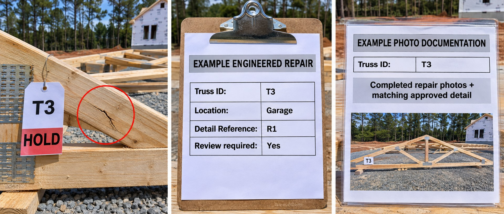
Identify the damaged truss by ID and location, photograph the damage, attach the matching approved engineered repair, and upload clear completed-repair photos. This example shows the documentation sequence; repair work must follow the project-specific written engineering.
Resources
Use these references when preparing plans, walking framing, or resolving a field question. Confirm the code edition and amendments applicable to the job’s permit with the local building department. A newer published code or a generic guide does not automatically replace the requirements approved for that job.
Building Codes & Official Guidance
| Reference | Use It For |
|---|---|
| NC OSFM — Current and Past Codes | North Carolina code editions, effective-date notices, amendments, and links to published code books. |
| ICC — 2018 North Carolina Residential Code | Search residential provisions when this is the edition applicable to the permit. Check NC amendments and the local building department’s requirements. |
| NC OSFM — Code Interpretations | Official interpretations and guidance. Match the code type, edition, and exact condition. |
| NC OSFM — Building Codes Hub | Code contacts, council information, engineering newsletters, and state resources. |
Framing, Product & Installation References
| Reference | Use It For |
|---|---|
| APA — Technical Document Library | Plywood/OSB, subfloor, roof sheathing, engineered wood, panel installation, and bracing publications. |
| Weyerhaeuser — Trus Joist Technical Support | Product-specific engineered lumber installation guides and technical repair bulletins. |
| Weyerhaeuser — TJI Safe Installation | Floor installation and bracing guidance for applicable TJI products. |
| American Wood Council — Span Tables | Sawn-lumber joist/rafter span references. Match species, grade, size, spacing, loads, and the applicable design criteria; do not use these tables for engineered lumber. |
| American Wood Council — Span Options Calculator | Review common sawn-lumber span conditions using the correct inputs. Escalate proposed design changes for approval. |
| Simpson Strong-Tie — Product Resources | Find the exact hanger, strap, connector, fastener, or anchor model and its installation instructions, approved fasteners, and evaluation documents. |
| SBCA — Truss Repair and Modifications | Damage reporting and the repair process. Obtain the required engineered repair for the actual truss and condition. |
Common Field Questions — Where to Look
| Question | Check Before Proceeding |
|---|---|
| Can this member be cut, drilled, or notched? | Identify the product and location. Check its approved hole/notch detail; obtain the required engineering approval when the condition is outside the published limits. |
| Which fasteners go in this hanger or strap? | Read the exact connector’s installation schedule. Verify fastener type, diameter, length, quantity, and required holes; do not substitute based on appearance. |
| Is a header, joist, post, or bearing correct? | Compare the member, support, and load path to the approved structural plans and floor layout. Refer discrepancies to Install and the responsible designer. |
| How should an anchor be installed? | Use the specified product and approved connection detail. Check substrate, drilling/cleaning, embedment, edge distance, spacing, and torque as applicable. Follow the scope restrictions in Framing Basics. |
| Are the stair or window/door openings correct? | Measure against the approved selections, schedules, and supplier details. Check finish-floor allowances and required support before installation. |
| What is required at a shaft wall or fire-rated penetration? | Identify the approved fire-rated assembly and applicable repair detail. Do not treat generic caulk or patch guidance as approval for a different assembly. |
| What happens after a failed inspection? | Record the inspector’s item and exact location, upload the report, coordinate the correction, and verify it onsite. Add applicable repeat issues to the preconstruction redline plans. |
Permit Box & Job Documents
- Make sure the job address is clearly shown onsite and the permit and correct approved plans are available in the permit box.
- Remove or clearly identify unselected options and superseded sheets so the framer uses the correct plan revision.
- Keep floor layouts, engineered wood product information, truss placement plans, truss design documents/seals, and required installation details available for the job.
- Keep the two copies supplied with the EWP/truss packet available; provide one to the builder as needed.
- Upload redline plans, selections, engineering revisions, repair letters, inspection reports, and correction photos to the correct Appwright job.
- For conflicting plans, missing details, or an unresolved code question, document the issue and contact the Framing Install Department, builder, and responsible designer/local building department as appropriate before proceeding with the affected work.
For the onsite walk: Use the Framing QC Checklist in this playbook, including the Open Floor checks, and the builder-specific requirements for the job.
Panel Repair Policy
- Document panel damage with photos before any repair work starts.
- Repairs must meet plan, code, and manufacturer requirements.
- Record final repair photos and notes in Appwright.
- Description of error
- Rough opening sizes (if issue involves windows/doors)
-
The Framing Install Project Manager will create an Appwright message
sent to the following groups:
- LIST: Apex Panel Repair
- LIST: Installed Framing
- Appropriate Sales Team
- If Window/Door Installation or the Builder identifies errors in design, the Sales Team will follow the same process.
BFS Install Department Panel Repair Policy
All panel errors must go through the following procedures:
Required Information in Message
Bowed Studs
Framer responsibility — no additional charge: Bowed studs must be corrected by the framer at no additional cost, including in homes built with wall panels. The framer's payout already reflects the lower-cost wall-panel product, and we cannot reliably determine when the studs became bowed. Corrections such as cutting the stud, adding lateral blocking, and installing CS16 strapping require limited labor and do not justify an additional charge.
- Inspect walls during first and second walks for bowed or twisted studs.
- Correct or replace studs as needed to meet straightness and finish expectations.
- Document significant corrections and communicate status to builder.
Bowed Studs – Alignment Check
Left: a straightedge reveals a bowed stud. Right: a straight stud aligns with the straightedge. Have the framer correct the condition using the applicable approved requirements and verify it before sheetrock.
Extra Labor Requests
Use this process for framing work outside the approved contracted scope. Verify the scope and reason for the request before committing BFS or directing a subcontractor to proceed.
Approval Before Work Begins
- No extra work may begin without approval. Provide the builder’s written approval to Sales, ideally with a PO. Alternatively, obtain approval to proceed from Sales.
- Review the request with Sales and the Framing Install Department before authorizing the work. A request or price submitted for review is not approval.
- Confirm the exact scope, agreed price or pricing basis, and who is responsible for the cost. Resolve disagreements before directing the framer to perform the work.
- If the scope or cost changes, obtain approval for the revised work before proceeding with that change.
- Work started without approval puts the framer at risk of not being paid.
Information Required in the Request
Send an Appwright message to Sales and the Framing Install Department with:
- Job identification: Builder, subdivision, lot, address, and Job ID.
- Scope: What needs to be done, where it is located, quantities, and why it is outside the contracted scope.
- Reason and responsibility: Reason code, cause of the extra work, who requested it, and the proposed responsible party.
- Pricing: Subcontractor name, requested labor amount, and supporting breakdown such as hours, rate, or quantities. Identify any additional material separately.
- Schedule: When the work is needed and any effect on inspections, other trades, or completion.
- Supporting records: Before-work photos, marked-up plans or selections where relevant, the labor ticket or quote, written approval, and builder PO when provided.
PM Verification & Communication
- Walk the job and verify the condition and requested work. Communicate the scope and cost to the builder with Sales involved before the work starts.
- Check whether the item is already included in the framer’s scope or is correction of an installation error. Identify corrective work and the responsible party for Install review rather than automatically treating it as a billable builder extra.
- Keep the request, approval, and any changes together in Appwright so Sales and Install have a clear record.
Completion & Payment Follow-Through
- Verify the completed work in the field and upload after-work photos and the final labor ticket. Confirm the completed scope and amount match the approval; flag any differences for review.
- Enter all framer extras in the original Framing Appwright, even if it is closed out. The Framing Install Department or Sales will create a Service Appwright when needed to process payment.
- Provide complete documentation to Sales and Install for ticket and payment processing. Do not assume the request is complete just because the field work is finished.
- Direct questions about extra-labor payment timing or the framer’s 90% / 10% draws to the Framing Install Department. Sales does not determine payment timing.
Truss Repair Form Completion
Complete the Form
- Select the level of urgency (Low / Normal / High).
- List all trusses needing repair.
- Provide a detailed description of the damage, issue, and site conditions.
- Indicate whether a field repair is possible.
- Identify responsibility (Design / Production / Field).
- Complete every section clearly and accurately. Appwright will not allow submission if any section is incomplete, delaying repair approval.
- This form is required before any repair work begins.
Required Uploads
- Photos of truss damage (maximum of 10 photos).
- Sealed truss repair redlines.
- Delivery damage photos, if applicable.
Submission and Notification
Once submitted, a notification is sent to the "Truss Repair Apex" group:
- Beaver, Shane
- Davis, Jacob
- Johnson, Walter
- Joplin, Mike
- Jordan, Chad
- Rogers, Chuck
- Sammour, Hadeed
- Stockton, Holly
Highly recommended: Send an Appwright message with the Truss Repair Form attached after submission.
Form Completion Reference

Upload and Notification Reference

Window / Door SOP
Overview
The following procedures apply to every window and door job and are intended to assist with job navigation by outlining the required steps in sequential order from job initiation through to completion.
A key component of our project management process is Appwright, our scheduling and communication software. Appwright plays a central role in managing tasks and timelines for window and door projects. Once a Project Manager (P.M.) is assigned to a specific job, a predefined set of tasks is automatically generated within Appwright. These tasks are date-stamped, assigned to responsible parties, and require sign-off in the system to track progress and ensure accountability.
Tasks managed through Appwright are noted as (Appwright Tasks) throughout the process. These tasks come with automatically generated deadlines and must either be completed on time or formally adjusted within the system to accommodate scheduling changes.
In addition to the Appwright-managed tasks, each Install Project Manager is also responsible for other essential duties that may not be listed in the software. These off-system responsibilities are equally important and must be completed to ensure the successful delivery of the install project.
PM responsibility: Read and understand the current and revised W/D procedures, keep them for reference, and ask questions about any unclear requirements. Follow the detailed task workflow below for current scheduling, communication, sign-off, and extra-labor responsibilities.
Builder Requirements
KB Homes
- temp locks and sill supports
- Tyvek tape
- flex tape in the corners and caulk dams across bottom and 6" up the side
- sliders get door pans
Dan Ryan Homes
- sill supports
- black out dormer/gable windows
- barricade tape with barricade flex tape on the bottom sill in the corners, regular 6" for the rest of the sill
- caulk dam across bottom and 6" up the side
Drees
- Window installers need to make sure that the housewrap is not wrapped inside of the openings before window and door install.
Pulte
- temp locks and sill supports
- typar tape
- caulk dams and caulk squeeze out around the nail fin
- door screws hidden behind weatherstripping
Lennar
- temp locks and sill supports
- Lindsey windows, make sure drywall window is on the 2nd floor front elevation or the side with the most room if no front elevation windows
- black out dormer/gable windows
Ashton Woods
- temp locks and sill supports
- typar tape
- caulk dam on windows 8" up the sides but also flex tape in corners 6" up the sides and caulk up to where the flex tape ends aka 6" not 8"
- caulk dam on all doors and slider 6" up the sides
- caulk under the garage fire door sill to prevent carbon monoxide infiltration
- sliders get door pans
DR Horton
- temp locks and sill supports
- GG tape
- install two doors screws in top hinge
Tricor
- temp locks and sill supports
- Barricade tape
- install two doors screws in top hinge
Epcon
- temp locks and syn board sill supports
- zip tape
Windsor SFR
- temp locks and sill supports
- barricade tape
Stanley Martin
- temp locks and sill supports
MCR Trust
- temp locks and sill supports
MI Homes
- temp locks and sill supports
Tri Pointe Homes
- temp locks and sill supports
Mattamy
- temp locks and sill supports
True Homes
- temp locks
McKee
- sill supports
Temp Locks
Installation responsibility: PMs install temporary locks on single-family homes. Installers install temporary locks on townhomes.
| SKU | Customer | LockCode | Brand | Vendor | Part# | Qty |
|---|---|---|---|---|---|---|
| SCONLOCKLR | Lennar - 637432 | 49349 | SCHLAGE | ALLEGION | J54BB K11 630 - 49349 | |
| SCONLOCKGARMAN | Garman - 660798 | 54897 | SCHLAGE | ALLEGION | J54BB K11 630 - 54897 | |
| SCONLOCKGW | Greenwood - 793518 | 38346 | SCHLAGE | ALLEGION | J54BB K11 630 - 38346 | |
| SCONLOCKTRP | Tripointe - 903242 | 99726 | SCHLAGE | ALLEGION | J54BB K11 630 - 99726 | |
| SCONLOCKMIH | MI Homes - 66485 | 88787 | SCHLAGE | ALLEGION | J54BB K11 630 - 88787 | |
| SCONLOCKEPCON | Epcon - 407662 | 33565 | SCHLAGE | ALLEGION | J54BB K11 630 - 33565 | |
| SCONLOCKGRANDTR | Windslow Grand Tradition - 1093679 | 77997 | SCHLAGE | ALLEGION | J54BB K11 630 - 77997 | |
| SCONLOCKSM | Stanley Martin - 891931 | 89889 | SCHLAGE | ALLEGION | J54BB K11 630 - 89889 | |
| SCONLOCKMCRT | MCR - 958656 | 96896 | SCHLAGE | ALLEGION | J54BB K11 630 - 96896 | |
| SCONLOCKTRUEH | True Homes - 969590 | 89798 | SCHLAGE | ALLEGION | J54BB K11 630 - 89798 | |
| SCONLOCKMAT | Mattamy 84555 | 99898 | SCHLAGE | ALLEGION | J54BB K11 630 - 99898 | |
| SCONLOCKPLT | Pulte - 282622 | 98989 | SCHLAGE | ALLEGION | J54BB K11 630 - 98989 | |
| DVCL | Davidson - 695134 | 56655 | KWIKSET | ASSA | 400WKL 6AL RCS - 56655 | |
| DRHCL | Dr Horton - 427140 | 66566 | KWIKSET | ASSA | 400WKL 6AL RCS - 66566 | |
| KCONLOCKDF | Dream Finders - 545521 | 65666 | KWIKSET | ASSA | 400WKL 6AL RCS - 65666 | |
| KCONLOCKGSH | Great Southern - 927943 | 66566 | KWIKSET | ASSA | 400WKL 6AL RCS - 66566 | |
| WBTRCL | Windsor - 916459 | 56566 | KWIKSET | ASSA | 400WKL 6AL RCS - 56566 | |
| KCONLOCKEASTWD | Eastwood - 279991 | 85936 | KWIKSET | ASSA | 400WKL 6AL RCS - 85936 | |
| KCONLOCKSTAR | Starlight - 638506 | 65556 | KWIKSET | ASSA | 400WKL 6AL RCS - 65556 | |
| AWCL | Ashton Woods - 273454 | 66556 | KWIKSET | ASSA | 400WKL 6AL RCS - 66556 | |
| KCONLOCKWYNN | Wynn - 391684 | 55665 | KWIKSET | ASSA | 400WKL 6AL RCS - 55665 | |
| MUNGOCOL | Mungo - 910437 | 66555 | KWIKSET | ASSA | 400WKL 6AL RCS - 66555 | |
| KLOCKMCK | Mckinley - 943525 | 64665 | KWIKSET | ASSA | 400WKL 6AL RCS - 64665 | |
| KCONLOCKLGI | LGI - 598880 | 55655 | KWIKSET | ASSA | 400WKL 6AL RCS - 55655 | |
| KCONLOCKKB | KB - 196425 | 55655 | KWIKSET | ASSA | 400WKL 6AL RCS - 55655 | |
| KCONLOCKNOVA | Nova Casa - 1100301 | 56656 | KWIKSET | ASSA | 400WKL 6AL RCS - 56656 | |
| KCONLOCKTRI | Tri Cor - 993113 | 66566 | KWIKSET | ASSA | 400WKL 6AL RCS - 56656 | 30 |
W/D Install Contact List
Save installer phone numbers in your contacts. Select a phone number to call.
| Installer / Crew | Contact | Phone |
|---|---|---|
| Alvarez | Jose Luis | 919-810-8035 |
| Carolinas Windows | Felipe | 919-627-3907 |
| Farias Installation | Oscar Olivares | 919-538-7411 |
| Garcias | Jose | 919-444-4689 |
| Garcias | Alan | 919-444-3340 |
| J&M install | Jermey Haywood | 919-949-1981 |
| KIR | Polo | 919-325-8137 |
| Olivares and Sons | Gilberto | 919-757-7715 |
| Olivares and Sons | Daniel | 910-568-2603 |
| Oscarin Installation | Oscar | 919-618-5006 |
| Panchin Installation | Francisco | 919-723-1036 |
| REFP Installation | Franklin | 984-368-1683 |
| REFP Installation | Eduardo | 919-721-3055 |
| LizardTek | Uriel | 919-444-1545 |
PM Communication & Extra Labor Responsibilities
The W/D process is being aligned with Framing and Trim for consistent responsibilities and better communication across departments.
Communication requirements
- Save the W/D installers' phone numbers in your contacts using the W/D Install Contact List.
- Complete the sill-support photo documentation described in Sill Supports — Scope, Photos & Back Charges.
- Jessica includes the assigned PM on job emails, including install reports and extra-labor correspondence. Review these emails, respond when Sales has a question, and provide relevant field information.
Scheduling and communication handoff
The install coordinator assigns jobs to installers and handles scheduling requests through the install start date. Once the job starts, the PM handles completion scheduling, communicates directly with the installer, and sends updates through Appwright to Sales and the W/D install team.
Extra labor — verify before submitting
The PM tracks, verifies, and submits extra-labor requests, including trip charges, repairs, and removal/reinstallation. Do not request Sales payment for an extra trip caused by incorrect PM/installer information, or for removal/reinstallation required to correct an initially incorrect installation or location. Before the postwalk report, verify the requests and confirm PT requests have been submitted.
Sill Supports — Scope, Photos & Back Charges
Applies to jobs and neighborhoods where BFS is contracted to install sill supports.
Install timing and back charges
Required sill supports must be installed when the door is installed. If a required support is not installed at door installation, the installer will be back charged.
Before reporting a missing support as an installer omission, look for evidence that the support was installed and later removed by another trade. Record that evidence to avoid an incorrect back charge.
Required PM photos
Photograph the sill of every installed door in neighborhoods where BFS installs sill supports, whether the sill support is present or missing. Upload the photos with the job documentation in Appwright.
The exceptions to this photo requirement are:
- The door could not be installed yet.
- No sill support is needed because the concrete is flush with or extends past the sill.
- The concrete is too jagged or damaged to install a sill support.
Material and included labor
- Sill-support labor includes the installer providing one piece of treated material per door: use a 2x6 unless the gap is small enough for a 2x4 to fill it.
- Sales provides PVC material for neighborhoods that require PVC instead of treated wood.
- Install the sill support tight to the concrete.
- Sill-support labor does not include adjusting the support to be perfectly square with the threshold when the concrete and wall are out of square with one another.
When a second board is needed
If the concrete is set back far enough that two pieces of material are needed to support the sill, Sales must pay the installer to add another board through the extra-labor request process, or schedule a service to address it. The PM must verify and submit the extra-labor request and confirm the PT request before the postwalk report.
Window / Door Photo Examples
Photo references for documenting installation quality, completed work, damage, and service issues.
Rough Openings
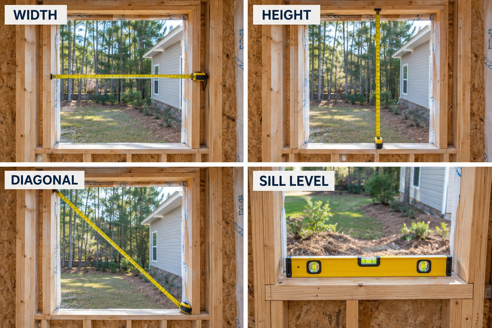
Photograph opening width, height, both diagonals, and sill level, with a wide photo identifying the opening. Compare measurements with the applicable unit requirements and approved plans; document incorrect, damaged, or obstructed openings in Appwright and coordinate correction before installation.
Damaged Material
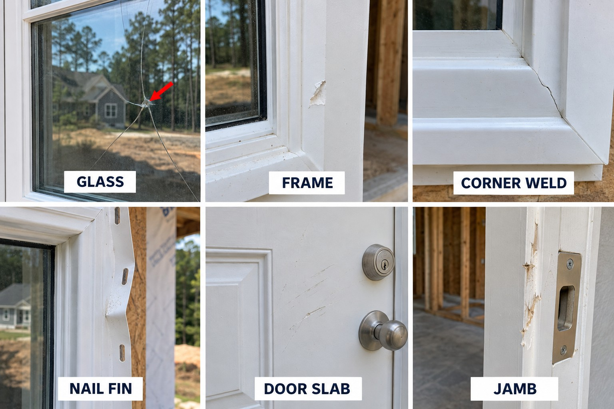
Use a full-unit photo and close-ups to document cracked glass, frame damage, cracked corner welds, bent nail fins, and door slab or jamb damage. Identify the unit and location, record when damage was observed, and send the issue through Appwright.
Flashing & Sill Preparation

Photograph sill preparation, corner transitions, and flashing materials during installation. Match each stage to the exact product’s current installation instructions and the approved project method. These views show what to document; they are not a universal flashing sequence or sealant detail.
Setting & Fastening

Document alignment, shims, clearances, and fastening before the work is concealed. Verify fastener type, location, spacing, penetration, and shim requirements against the applicable product instructions and approved details; do not use an example photo as the fastening schedule.
Completed Window Check
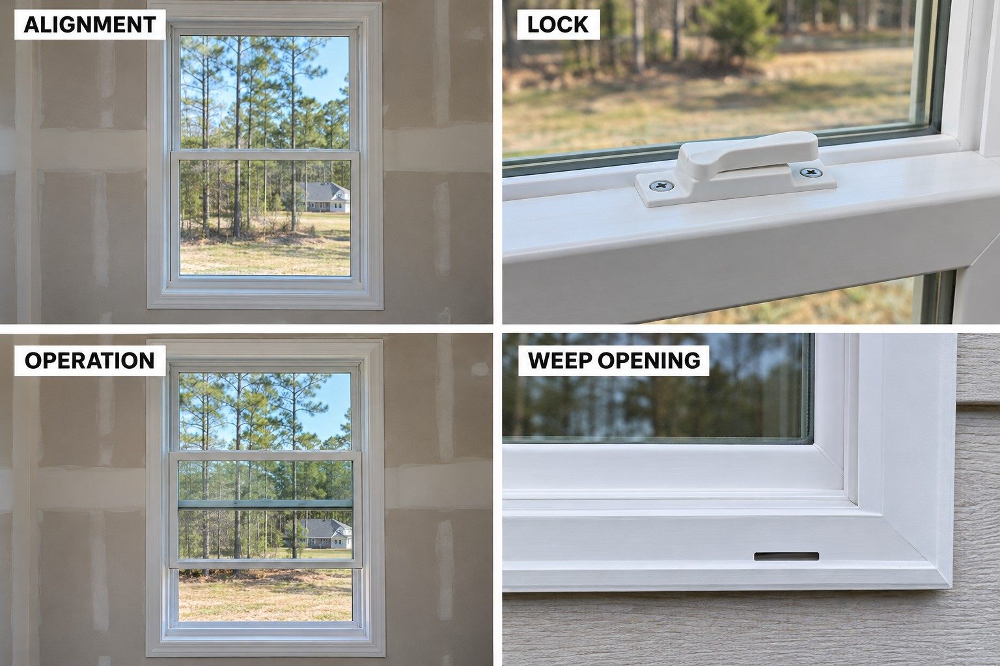
Operate and lock every unit. Photograph sash alignment, lock engagement, weatherstripping, and clear weep openings where applicable. Still photos support the record; physically verify smooth operation and document any binding or defects.
Completed Door Check

Check and photograph consistent reveals, smooth operation, latch/deadbolt engagement, weatherstripping, threshold condition, and sill support. Confirm support and sealing against the applicable door instructions and builder requirements, and document any daylight, binding, damage, or gaps.
Before Covering

Capture wide location views and close-ups of installation details before interior trim or exterior cladding conceals them. Document shims, fastening, perimeter flashing, and transitions as applicable, and verify against the approved product-specific details.
Final Walk & Cleanup

Upload completed elevation and interior condition photos, document product protection and cleanup, and identify any outstanding punch items by unit/location. Enter punch items in Appwright, make installer notes public as required, and coordinate the return visit when necessary.
Service Requests
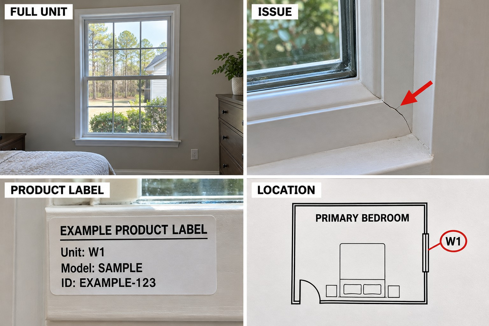
Include a full-unit photo, a clear close-up of the issue, the actual product label, and a photo or room/location reference. Add the lot/address, unit identification, observed issue, and when it occurs to the Appwright request. The label and room sketch shown are examples.
Window Install Checklist & Field Examples
- Plumb and level: Verify each window is plumb and level. For nearby windows of the same size, verify alignment and level with the adjacent window.
- Flashing and fastening: Confirm the proper flashing tape and BFS tape pattern were used, with nails in every other hole.
- Verify builder-specific details, including flex tape at bottom corners or across the entire sill, caulk dams, and blackout screens on dormer/gable windows where required.
- Tempered glass: Verify tempered windows are installed in the correct locations per plans.
- Grilles between glass (GBGs): When only some windows have GBGs, verify they are in the correct locations.
- Caulk behind the nail flange: Spot-check windows for sufficient caulk. The supplied BFS checklist specifies a 3/8-inch bead to achieve a proper seal.
- Damage and missing parts: Inspect every window for broken glass, frame damage, and broken, damaged, or missing replaceable parts.
- Operation and daylight: Check every window for proper operation. With the window fully closed and locked, check for visible daylight around the sash.
Flashing laps, dimensions & adhesion
- Cut and lap housewrap so the top edge of head flashing is covered, with the detail even on both sides.
- Extend head flashing at least 1 inch past side flashing.
- Extend side-tape tails at least 2 inches past the sill tape, evenly on both sides.
- Roll flashing tape during installation so it adheres properly to the wall and flange; check for loose or peeling tape.
- Lap lower pieces beneath the pieces above so water sheds outward rather than becoming trapped or bypassing the seal.
Sliding glass doors: Use both this checklist and the Door Install Checklist.
Annotated field examples
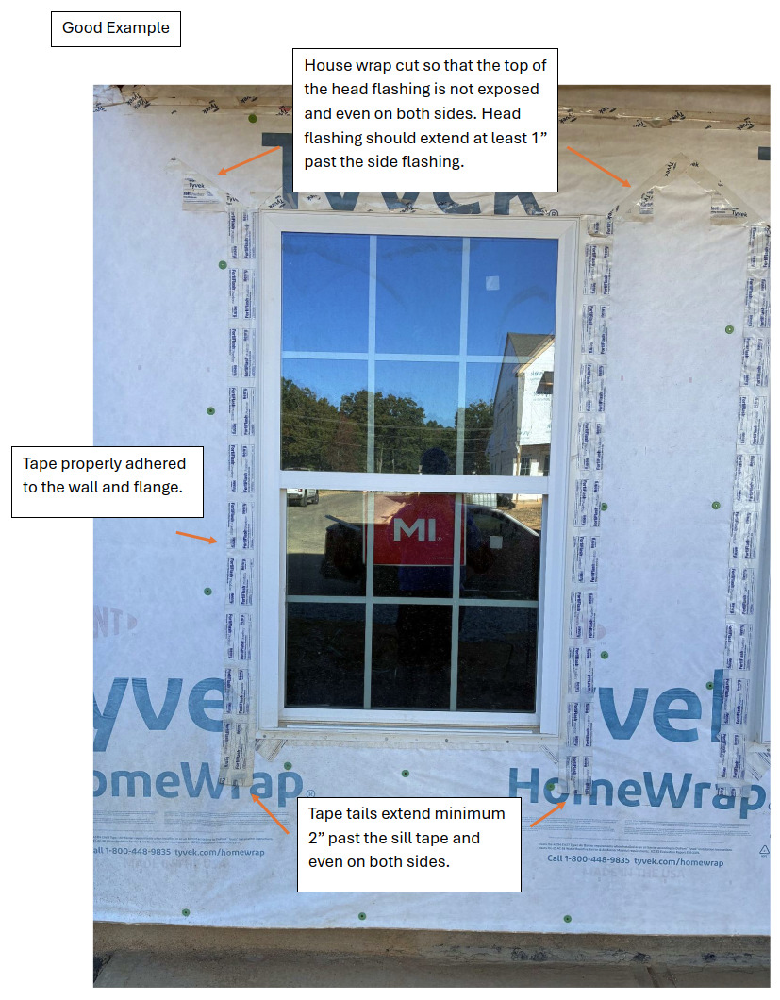
Correct Flashing Example: Head flashing extends at least 1 inch past side flashing; side-tape tails extend at least 2 inches past sill tape, evenly on both sides. Housewrap covers the top edge of head flashing, and tape adheres to the wall and flange.
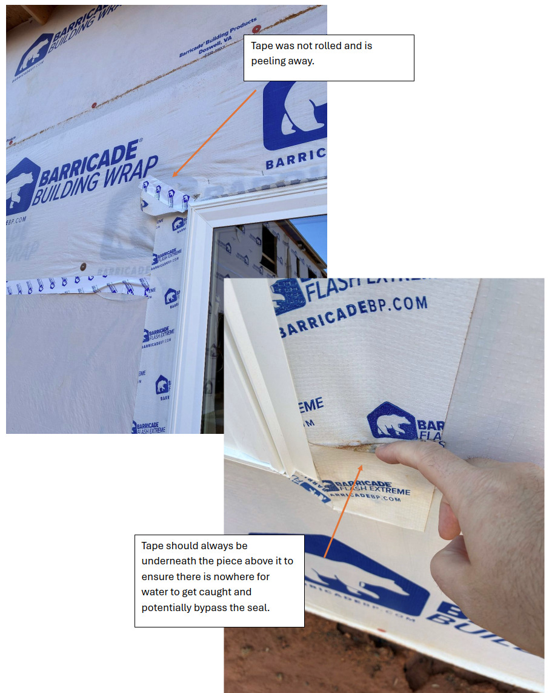
Peeling Tape & Incorrect Laps: Unrolled tape is peeling away. Install flashing in shingle-style laps so the lower piece is beneath the piece above, avoiding a path that traps water or bypasses the seal.
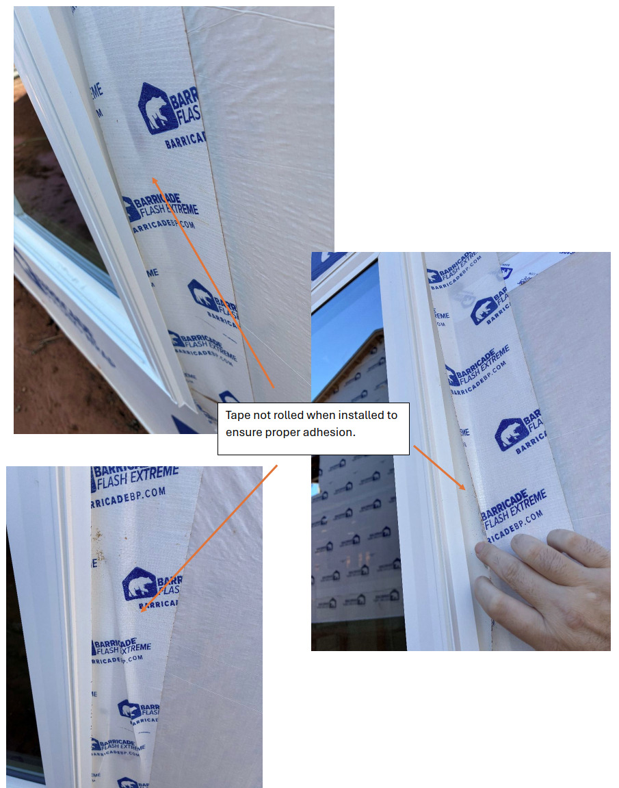
Unrolled Tape — Adhesion Issues: Examples of tape that was not rolled during installation. Verify proper adhesion along the wall and window flange.
Door Handings
Slider notation: X = operable panel; O = fixed panel. Read slider handings from the exterior, left to right.
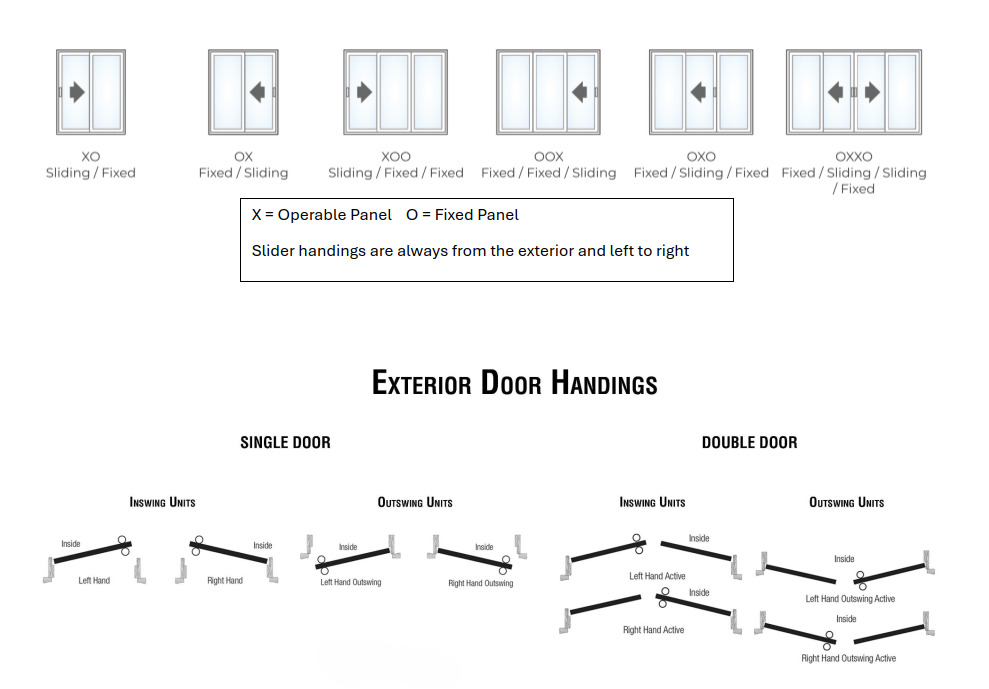
Reference for slider configurations and exterior single- and double-door handings, including active-leaf designations.
Common Reasons Why Something Wasn't Installed
| Windows | Doors |
|---|---|
| Rough opening was incorrect at install | Rough opening was incorrect at install |
| Rough opening was not plumb/level | Rough opening was not plumb/level |
| Damage to the frame | Damage to the frame |
| Missing OSB sheathing on outside of rough opening | Missing OSB sheathing on outside of rough opening |
| Missing housewrap around rough opening | Missing housewrap around rough opening |
| Window is slightly oversized from factory | Wrong swing per plan |
| Doesn't match plans | Sub ran out of time/install materials |
| — | Door frame built out of square |
| — | Incorrect jamb depth for the wall framing |
Door Install Checklist & Field Examples
- Plumb and level: Verify the door is installed plumb and level, with consistent reveals between the slab and frame.
- Flashing and builder requirements: Check that the proper flashing tape was used and installed per BFS standards, including the correct tape and screw pattern.
- For standard non-flanged brick mold, apply flashing tape to the sides of the opening and caulk the back of the brick mold to achieve a proper seal. Verify the tape is properly adhered and rolled.
- Confirm builder-specific instructions were followed, including screws hidden behind weatherstripping, caulk dams, temporary locks, and sill supports where required.
- Sill supports — same day as door installation:
- The installer supplies one piece of treated material per door: 2x6 unless the gap is small enough for a 2x4 to fill it.
- Install treated supports tight to the concrete, securely supporting the threshold and extending even with the edges of the brick mold.
- Adjusting supports to compensate for concrete and walls being out of square with each other is not included in the installer's labor payout.
- Sales ships PVC material to the jobsite when the customer requires PVC instead of treated wood.
- Follow the sill-support photo, exception, extra-board, and back-charge requirements.
- Temporary locks: PMs install them on single-family homes; installers install them on townhomes.
- Door swings: Verify swings match the plans.
- Door pans: Verify the pan is installed tight to the threshold on the inside and the corners are sealed.
- Sealant behind the nail flange: Spot-check doors to confirm sufficient caulk was applied. The supplied BFS checklist specifies a 3/8-inch bead for a proper seal.
- Damage and missing parts: Inspect all doors for broken or missing inserts and damage to the frame or slab.
- Operation: Check every door for smooth operation and correct latch/deadbolt engagement.
Installation screws and pattern
- Installation screws must be at least 3 inches long. If the screws used are not the galvanized screws supplied for sale, verify that they are the proper length.
- Use one installation screw per hinge and mirror those locations on the exterior side of the frame. Repeat the hinge-side pattern on the strike side.
- Use additional screws as needed to keep the jamb legs straight.
Sliding glass doors: Sliders combine window and door installation requirements. Use both the door and window install checklists.
Annotated field examples
Use these supplied jobsite photos with the checklist above.
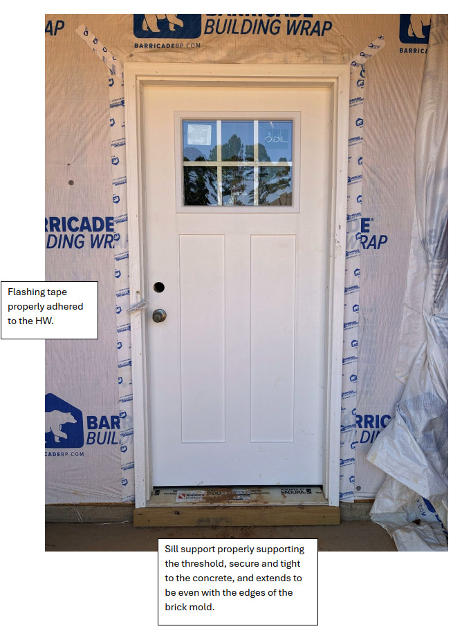
Flashing Tape & Sill Support: Flashing tape adhered to housewrap; secure sill support tight to the concrete, supporting the threshold and extending even with the brick mold edges.
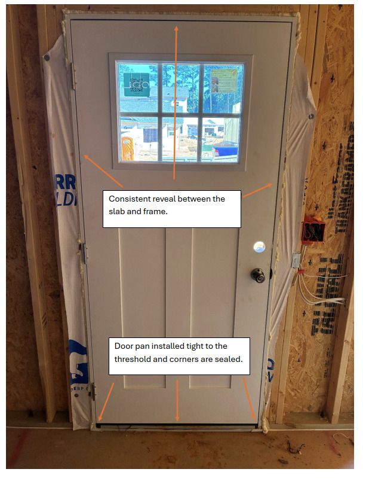
Reveals & Door Pan: Consistent slab-to-frame reveals; door pan tight to the inside of the threshold with sealed corners.
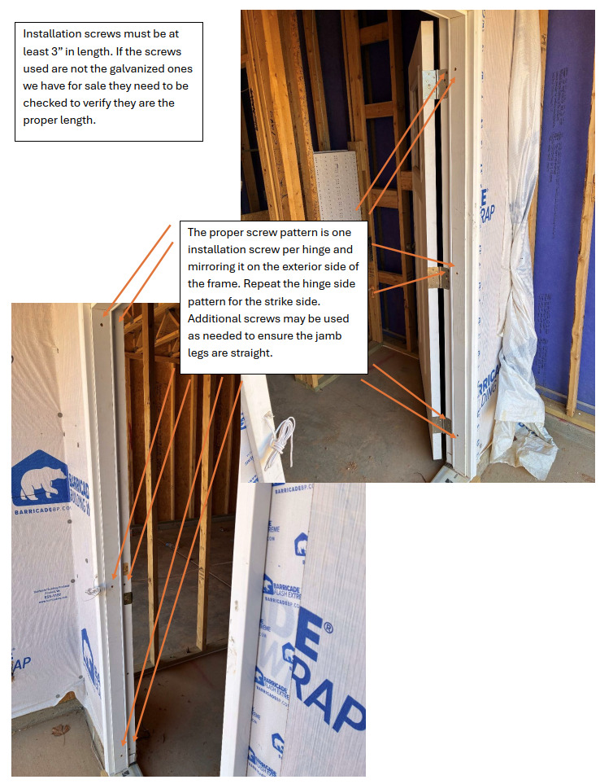
Installation Screws & Pattern: Annotated screw locations at hinges and mirrored exterior positions, repeated on the strike side; minimum 3-inch installation screw length.
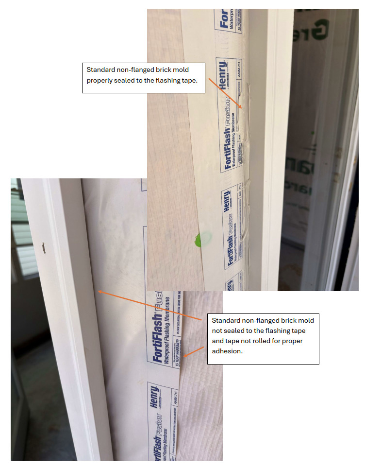
Non-Flanged Brick Mold — Seal & Adhesion: Comparison of properly sealed brick mold and adhered flashing tape with an unsealed joint and tape that was not rolled.
Window/Door Install Details
Window Installation Standards
- Verify flashing sequence
- Verify the BFS fastening pattern, including nails in every other hole; see the Window Install Checklist & Field Examples.
- Ensure caulk is not installed on frames
- Verify there is no glass or frame damage
- Document any damage seen with photos and a message in Appwright
Door Installation Standards
- Shim at proper locations
- Maintain consistent reveals
- Confirm sill pan installation
- Ensure threshold is sealed properly
- Verify sill supports are sound and secured tightly, with no knots or wood damage. Apply the material, timing, photo, and back-charge requirements in Sill Supports — Scope, Photos & Back Charges.
Common Issues
- Daylight corrections
- Binding doors
- Out-of-square openings
Task Workflow
Sub Start Date-Door/Window
- The install coordinator schedules the job with the subcontractor and handles Sales requests to move the install start date. After installation starts, the PM handles completion-scheduling requests.
- If the installer cannot start on the scheduled day, they must notify the install coordinator by 2 p.m. that day so Sales can be notified and the schedule updated.
- Once the job starts, the PM and installer communicate job updates directly with each other. The PM relays updates through Appwright to Sales and the W/D install team.
- The PM tracks and submits extra-labor requests as needed, including trip charges, jobsite repairs, and removal/reinstallation of windows or doors. Verify requests before submitting them. Do not request a trip charge from Sales when the extra trip results from incorrect information from the installer or PM, or request payment for removal/reinstallation needed because the unit was initially installed incorrectly or in the wrong location.
- The PM coordinates with the installer and marks Sub Start complete only after the installer confirms the job started and has uploaded elevation photos.
- If an upcoming install appears unlikely to be ready on time while you are in the neighborhood, message Sales through Appwright to determine whether the start needs to be pushed out.
IS Assessment-Door/Window
- The W/D install manager assigns this task to the PM. The assessment must be completed the day after install and cannot be moved back. Changing the date delays completion and installer payment.
- If you cannot complete the assessment on its scheduled day, contact the W/D install manager or install coordinator as early as possible that day so coverage can be arranged.
- Verify installation against the job notes and upload photos of all reported damage, including slabs, frames, and cracked glass.
- For jobs that receive sill supports, upload a photo of every installed door sill whether the support is present or missing, subject to the listed exceptions. Before reporting a missing support as not installed, check for evidence that another trade removed it.
- If complete at assessment: send the report, then mark Assessment, Sub Completion, and Job Postwalk 100% complete.
- If incomplete but ready for completion: report why it was not completed previously, mark Assessment complete, activate Sub Completion, and adjust its date as needed to send the installer back.
- If incomplete and not ready: report what is needed to Sales and mark only Assessment 100% complete. If BFS framed the house, tag the framing PM on framing issues.
- Enter punch items in job notes and mark them public for the returning installer.
- Send assessment reports to Sales, Install, and the subcontractor.
Invoice-Door/Window
- Install does not touch this. It gets activated automatically when the Assessment task is marked off at 100% for AP to pay the sub.
Sub Completion Date-Door/Window
- The PM contacts the installer to confirm whether the job was completed.
- If incomplete, compare the installer's report with the assessment report and other job information. Resolve discrepancies promptly before reporting to Sales.
- If complete, the PM marks Sub Completion complete to activate the postwalk.
Job Postwalk-Door/Window
- Assigned to the PM and activated when Sub Completion is checked off. Adjust around assessments only as needed, by 2–3 days maximum. Do not push it into the next week unless absolutely necessary.
- Take and upload new elevation photos documenting completion and site changes since the original install, plus any other relevant photos.
- Before sending the postwalk report, verify all necessary extra-labor requests and confirm PT requests have been submitted. Document the requests.
- If complete, send the postwalk report to Sales, Install, and the installer, stating that the job is complete.
- If incomplete or punch items remain, send an Appwright report, update job notes and make them public, then activate and reschedule Sub Completion to send the installer back.
Closeout Job-Door/Window
- Install does not touch this. It gets activated automatically when the Postwalk task is marked off at 100% for AP to pay any trip charges or extras.
Customer
- Install does not touch this. AP marks it complete once all PT's have been processed.
Window/Door Best Install Methods
Window Best Practices
- Flashing Sequence (MOST IMPORTANT)
- Always follow bottom → sides → top
- Install sill pan/flashing first, set window into opening, side flashing, then head flashing last
- Do not caulk the bottom nail fin of the window
- Never reverse this order (causes water intrusion)
- Check Opening Before Install
- Verify width & height, square (diagonal check), and level sill
- If opening is off → STOP and notify framing
- Set & Secure Window Properly
- Center window in opening
- Tack top corners first
- Recheck level, plumb, and square
- Then fasten fully per manufacturer
- Shim Correctly
- Shim at bottom corners, midpoints, and top if needed
- Do NOT over-shim (causes bowing)
- Operation Check (ALWAYS)
- Open / close / lock every unit
- Check smooth movement, no binding, and locks engage
Door Install – Best Practices
- Start with the Hinge Side
- Set hinge side perfectly plumb first
- This controls the entire door alignment
- Proper Shimming (CRITICAL)
- Shim behind hinges, at strike plate area, and top corners
- Never stack door pads, shim randomly, or force the door into place
- Check Reveals
- Maintain even gap at top, hinge side, and latch side
- Uneven reveal means frame is not square
- Threshold & Seal
- Ensure threshold is fully supported and sealed tight to floor
- No daylight; incorrect setup creates water intrusion risk
- Door Operation Check
- Open/close smoothly
- Latch easily and deadbolt aligns
- If you have to force it, it’s wrong
Common Install Mistakes (Call These Out in Field)
Windows
- Flashing installed in wrong order
- Not checking RO before install
- Over-driving fasteners
- No sill pan
Doors
- Hinge side not plumb
- Uneven reveals ignored
- Shimming shortcuts
- Daylight at bottom
Tips (What Good PMs Look For)
Before Install
- “Does this opening look right?”
- “Is material correct and undamaged?”
During Install
- “Are they shimming correctly?”
- “Are they rushing flashing?”
After Install
- “Would I put my name on this?”
- “Does everything operate perfectly?”
Simple Field Rule: If it doesn’t operate perfectly, it’s not complete.
Before Install
Jobsite Readiness
- ☐ Framing complete and passed first walk
- ☐ Openings appear correct (visual check)
- ☐ Jobsite safe and accessible
- ☐ Material staged properly
Material Verification
- ☐ All windows/doors delivered
- ☐ No visible damage (glass, frames, flanges)
- ☐ Correct quantities on site
- ☐ Missing items identified
RO (Rough Opening) Check
- ☐ Measure ALL openings (even if product missing)
- ☐ Width/height match plans
- ☐ Openings square and level
- ☐ Any issues documented in Appwright
STOP RULE: If RO is incorrect → notify framing PM immediately.
Plan & Scope Review
- ☐ Door swings verified
- ☐ Tempered glass locations verified
- ☐ Window types match plans
- ☐ Builder selections reviewed
Install Readiness
- ☐ Flashing materials on site
- ☐ Subcontractor aware of scope
- ☐ Known issues communicated to Sales, Framing, and Sub
During Install
Install Quality
- ☐ Flashing sequence correct (bottom → top)
- ☐ Units set level, plumb, square
- ☐ Proper fastening (not over-driven)
Shimming & Structure
- ☐ Windows shimmed correctly
- ☐ Doors shimmed at hinges & strike
- ☐ No shortcuts (pads, forcing units)
Safety
- ☐ Proper ladder use
- ☐ PPE worn
- ☐ Safe handling of glass/units
After Install
Window Operation (100% Required)
- ☐ Open smoothly
- ☐ Tilt properly (if applicable)
- ☐ Close fully
- ☐ Lock engages
Door Operation
- ☐ Opens/closes smoothly
- ☐ Latches properly
- ☐ Deadbolt aligns
- ☐ No resistance
Quality Check
- ☐ No daylight at doors
- ☐ Even reveals on all sides
- ☐ Flashing complete
- ☐ Caulking clean and complete
- ☐ No visible damage
- ☐ No visible daylight around window sashes when fully closed and locked
Site & Condition
- ☐ No install-related damage
- ☐ Trade damage identified
- ☐ Jobsite clean
Documentation (Appwright)
- ☐ Window operation photos uploaded
- ☐ Door open/close photos uploaded
- ☐ Issues documented
- ☐ Photos labeled correctly
- ☐ Every installed door sill photographed where BFS installs supports, whether present or missing, subject to the listed exceptions
Final Decision
- ☐ Job is 100% complete → Proceed to closeout
- ☐ NOT complete → Document + reschedule sub
Appwright
BASIC APPWRIGHT REFERENCE
Appwright provides an interface to track projects and communicate with teams involved with the project. The most commonly used tools in Appwright are the Worklist and Job Lookup.
WORKLIST SCREEN
When logging into Appwright, your default view is your Worklist. This is the main area used to show assigned jobs and their current status. You can easily sort, search, and update information for specific projects from this screen, as well as get a complete overview of upcoming projects.
Appwright is the primary system of record for all Windows, Doors & Service jobs. All scheduling, communication, documentation, and approvals must be completed within Appwright to ensure visibility, accountability, and accurate payment processing.
1) Worklist Management
Purpose: Manage daily workload, priorities, and task completion.
- Review Worklist at the start and end of each day
- Monitor Health Status (On Track / At Risk / Late)
-
Open each job and review:
- Notes
- Attachments
- Messages
Standard: No task should go overdue without documented communication and reschedule.
2) Task Management & Sign-Off
Purpose: Ensure each step of the install worklist is completed, verified, and time-stamped.
-
Complete tasks in sequential order:
Sub Start → Install Assessment → Sub Completion → Job Postwalk → Closeout - Only sign off when task is 100% complete
- Only check off 100% on tasks listed in your name or the subcontractor's name; do not check off tasks under AP Invoicing or a customer name.
- If jobs are complete on your first walk, check off Sub Completion, your Post Walk line, and your Assessment line so the job does not sit in waiting.
-
Date/time of sign-off is used for:
- Performance tracking
- Triggering downstream actions (including payment)
- If delays occur, document them in Appwright and adjust only tasks permitted by the workflow. Do not move the assessment back; arrange coverage. Limit postwalk adjustments to 2–3 days unless a move into the next week is absolutely necessary.
Trim SOP
Overview
The following procedures apply to every trim install job and are intended to assist with job navigation by outlining the required steps in sequential order from job initiation through to completion.
A key component of our project management process is Appwright, our scheduling and communication software. Appwright plays a central role in managing tasks and timelines for framing projects. Once a Project Manager (P.M.) is assigned to a specific job, a predefined set of tasks is automatically generated within Appwright. These tasks are date-stamped, assigned to responsible parties, and require sign-off in the system to track progress and ensure accountability.
Tasks managed through Appwright are noted as (Appwright Tasks) throughout the process. These tasks come with automatically generated deadlines and must either be completed on time or formally adjusted within the system to accommodate scheduling changes.
In addition to the Appwright-managed tasks, each install trim project Manager is also responsible for other essential duties that may not be listed in the software. These off-system responsibilities are equally important and must be completed to ensure the successful delivery of the trim install project.
Appwright
BASIC APPWRIGHT REFERENCE
AppWright provides an interface to track projects and to communicate with teams involved with the project. The most commonly used tools in AppWright you will use are the Worklist and Job Lookup. These are explained in detail below.
TASK SEQUENCE
Door takeoff, Job Precheck, Audit, Sub Start, Safety inspection, Sub complete, Post walk, Close out, Customer
WORKLIST SCREEN
When logging into AppWright, your default view is your Worklist. This is the main area that you will use by showing you your assigned jobs and their current status. You can easily sort, search, and update information for specific projects from this screen as well as get a complete overview of your upcoming projects.
Appwright is the primary system of record for all Trim, & Service jobs. All scheduling, communication, documentation, and approvals must be completed within Appwright to ensure visibility, accountability, and accurate payment processing.
1) Worklist Management
Purpose: Manage daily workload, priorities, and task completion.
- Review Worklist at the start and end of each day
- Monitor Health Status of each job (On Track / At Risk / Late)
- Open each job and review Notes, Attachments, and Messages
- Standard: No task should go overdue without documented communication and reschedule.
2) Task Management & Sign-Off
Purpose: Ensure each step of the install worklist is completed, verified, and time-stamped.
- Complete tasks in sequential order (Pre-Check → Install Assessment → First Walk → Sub Completion → Closeout)
- Only sign off when the task is 100% complete
- The date/time of sign-off is used for tracking performance and triggering downstream actions (including payment)
- If delays occur, adjust task dates in Appwright and document reason for delay in notes
IMPORTANT: Do NOT sign off tasks early or “to keep things moving.” This creates downstream failures and billing issues.
3) Messaging Standards
Purpose: Centralize all communication for audit trail and cross-team visibility.
- Use Appwright messaging for ALL job-related communication
- Include appropriate recipient lists: Sales Team, Install Department, and Service (if applicable)
- Messages must include: clear subject, job address / lot, issue description, required action, and supporting photos (if applicable)
DO NOT: Rely solely on calls/texts without documenting in Appwright or send vague/incomplete messages.
4) Photo & Documentation Requirements
Purpose: Provide visual proof of work completed, protect against back charges, and support quality control.
Required Uploads (per job):
- Damaged material
- RO measurements (if issues)
- Window operation
- Door open/close
- Final installed product
- Photo of options marked in house
- Photo of material stacked in garage for return and return entered with proper material description and quantity
- Service (if applicable): Before / after photos
- Label photos clearly (especially townhomes by lot)
- Ensure photos are clear and relevant
Standard: If it is not documented in Appwright, it did not happen.
5) Job Notes & Attachments
Purpose: Maintain a complete job history for future reference and dispute resolution.
- Record key conversations with Builder / Superintendent, Sales Team, and Subcontractor
- Upload plans (if needed), markups, and reports
- Screenshots of text conversations uploaded
- Best Practice: Document conversations the same day they occur.
6) Scheduling Adjustments
Purpose: Keep all team members aligned with real-time job progress.
- Update task dates when material is missing, the jobsite is not ready, or subcontractor delays occur
- Notify Sales and Install Department of major changes
IMPORTANT: Task dates drive deliveries, installs, and service timing so we need to keep them accurate.
7) Issue Escalation
Purpose: Ensure issues are addressed quickly and routed correctly.
- Framing / RO Issues → Notify Framing PM immediately (if BFS framed) or contact the builder
- Product Issues → Notify Sales Team
- Install Issues → Coordinate with Window/Door Manager
- Safety Issues → Notify Subcontractor, Window/Door Manager, and Safety Manager immediately
- Always document escalation in Appwright with photos and notes
- Document in appwright and note how builder was notified so follow up email can be sent by coordinator. (Elevate)
- Install issues Notify installer, coordinator (sales if needed) and trim manager along with corrective action needed
8) Closeout Requirements
Purpose: Ensure job is fully complete.
- Confirm all tasks completed
- Verify all photos uploaded
- Ensure no open issues remain
- Final sign-off triggers payment process
STANDARD: Incomplete jobs must not be closed.
WORKLIST: SEARCH
You can search for specific projects from the top section of the Worklist by entering project details in the appropriate fields, then clicking Go/Refresh to process the search.
WORKLIST: SORT
Your Worklist defaults to due date order, but you can sort by any column by clicking the column header.
WORKLIST: HEALTH COLUMN
The Health column provides a quick visual reference to project due dates using colored diamonds:
- Spinning Red – Past Due
- Red – Due Today
- Yellow – Due Tomorrow
- Green – Due in two (2) days
- Blue – Due three (3) or more days
WORKLIST: MORE JOB INFO
There are several icons in the More Job Info column. Each icon links to additional project information.
Job Notes
Notes provide project-specific information for history and future reference.
- No notes available
- New notes available
- All notes have been viewed
Job Attachments
Attachments can include house plans, truss layouts, I-joist layouts, engineering letters, and other job-specific documents.
- No attachments available
- New attachments available
- All attachments have been viewed
Add Attachments
- Add additional documents to the project
Job Messages
Job messages are used to communicate with all parties involved in a project.
- No messages available
- New messages available
- All messages have been viewed
Job Change Log
The Job Change Log records all changes made to the project.
- New changes have been made
- All changes have been viewed
Following / Not Following
The Following/Not Following icon allows you to follow a project.
- Not following
- Following
Job Screen
- Open Job Summary Page
Job Lookup
If a project is no longer on your Worklist, use Job Lookup to find it by Reference Number, Job ID, or keyword.
Trim Task Flow (Appwright)
1) Job Pre-Check – Trim (Appwright Task)
Purpose: Ensure jobsite readiness before trim installation and confirm plans for material audit.
- Confirm drywall is complete and finished
- Confirm floors are installed (if required per builder)
- Verify jobsite is clean and ready
- Confirm trim material is delivered and correct
DO NOT START if site conditions are not ready.
2) Subcontractor Start – Trim
- Confirm crew readiness
- Review scope with subcontractor
- Sign off in Appwright Worklist that trim install has started
3) Safety Inspection – Trim (Appwright Task)
Purpose: Ensure jobsite safety compliance and support BFS Drive to Zero through consistent inspections and accountability.
Timing:
- 10 per month / 30 per quarter (aligned with BFS standards)
- Spread inspections across active jobs
4) Subcontractor Completion – Trim
Purpose: Ensure full completion before payment.
PM Responsibilities:
- Verify all trim installed
- Verify no gaps or defects
- Verify clean finish
- Upload photos
Do not sign off unless 100% complete.
5) Project Manager Post Walk – Trim (Appwright Task)
Purpose: Final detailed inspection after subcontractor completion to ensure all work meets BFS standards before final acceptance and closeout.
Timing: Completed after subcontractor completion and before closeout.
- Full Trim Inspection (100% required): Walk entire house; verify all trim installed per scope; no missed areas.
- Quality Verification: Casing reveals consistent with tight miters; baseboard tight to floor/wall with no gaps or waviness; crown tight to ceiling/wall with clean joints.
- Finish Quality: No visible gaps beyond tolerance; nail holes set properly; no excessive caulking to hide workmanship issues.
- Damage & Trade Review: Identify trade damage, document with photos, separate install issues from trade damage.
- Documentation: Upload photos of key areas and deficiencies; add detailed Appwright notes.
- Deficiency Handling: If issues are found, do not proceed to closeout. Document deficiencies and reschedule subcontractor for correction.
IMPORTANT: This is the final quality control step before acceptance. If missed, issues become service calls.
6) Job Closeout – Trim (Appwright Task)
Purpose: Finalize project completion, documentation, and payment trigger with no outstanding issues.
Timing: Only after post walk passes and all work is verified complete.
- Completion Confirmation: Confirm all trim installed, deficiencies corrected, and no outstanding items.
- Final Quality Standard: Work meets BFS finished-product expectations and is ready for builder/homeowner inspection.
- Documentation: Ensure required photos uploaded, notes complete, and prior tasks properly signed off.
- Appwright Completion: Sign off closeout task and verify no open Worklist tasks remain.
- Communication: Notify Sales and/or Builder as required and confirm job completion status.
- Payment Trigger: Closeout sign-off triggers final payment process; ensure accuracy before signing off.
IMPORTANT: Do not close incomplete jobs. Do not assume issues will be handled later. Closeout means the job is 100% complete.
Trim Photo Examples
Interior Doors

Check the door’s reveals, hinge-side alignment, operation, latch engagement, and clearance for the specified flooring. Photograph any rubbing, binding, uneven reveals, or clearance concern and document corrections in Appwright.
Casing – Tight Joints & Consistent Reveals
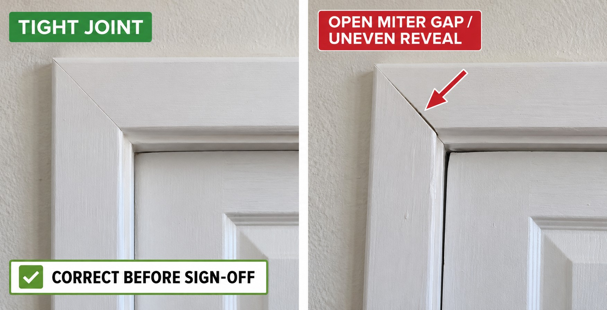
Compare tight, flush joints and consistent reveals with open miters or uneven reveals requiring correction. Photograph corners and full runs; verify the applicable builder’s trim profile and reveal requirements.
Baseboard – Corners, Runs & Floor Fit
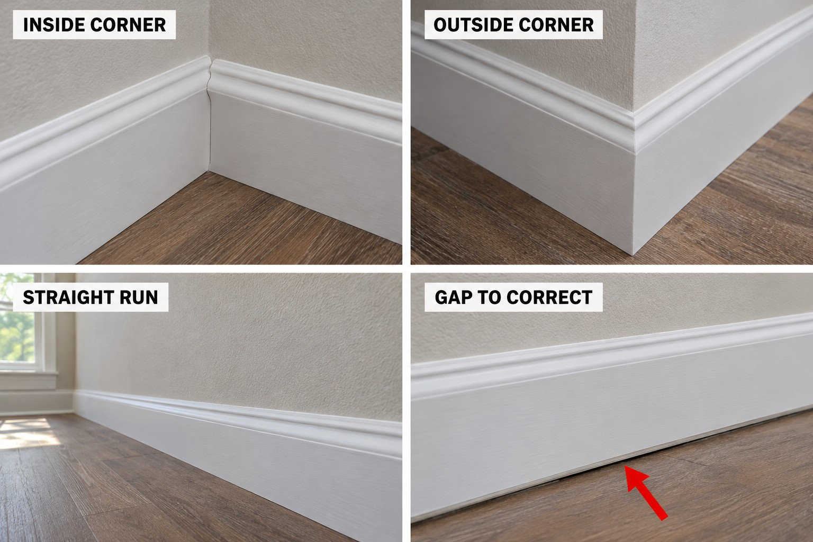
Document inside and outside corners, straight runs, wall contact, and floor fit. Identify gaps, bowing, damaged pieces, and poor transitions for correction, accounting for the agreed flooring sequence.
Crown – Joint Fit & Alignment
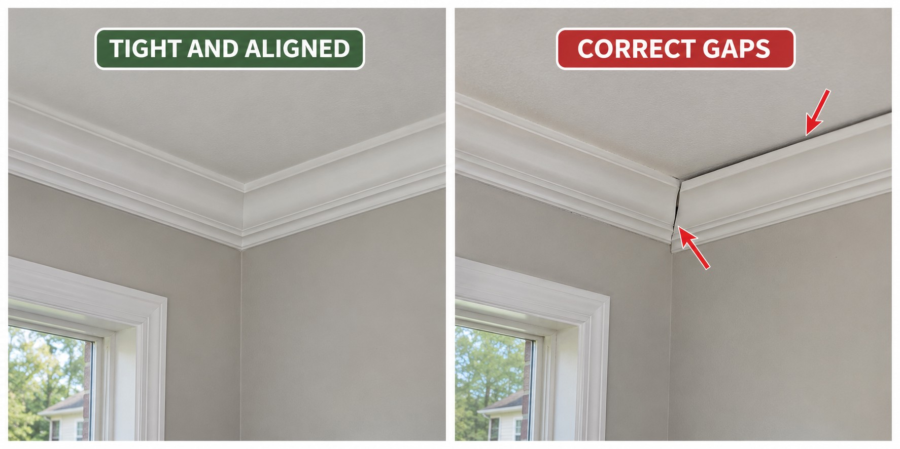
Photograph crown corners, joints, ceiling/wall contact, and longer runs. Identify visible gaps and misalignment and coordinate correction before sign-off.
Stair Trim – Rails, Balusters & Skirts

Document rail attachment locations, baluster layout, and skirt-board fit. Physically verify secure rails and check spacing and details against the applicable approved plans and requirements; a photo alone does not verify stability or compliance.
Finish Quality, Cleanup & Punch Items

Document finish preparation, split or damaged trim, clean work areas, and outstanding punch items. Identify the room/location, enter clear Appwright notes, and verify completed corrections before final sign-off.
Trim Install Details
Casing Standards
- Consistent reveal
- Tight joints
- Standard reveal: ~3/16 in. (builder dependent)
- Must be consistent on all sides, straight/even, and with tight miter joints (no gaps)
Failure Signs: Tight at top and wide at bottom, or wavy reveal.
Joint Quality
- Miters must be tight, flush, and clean
DO NOT: Leave gaps or rely on caulk to fix bad cuts.
Baseboard Standards
- Tight to floor and wall
- Proper inside/outside corners
- Floor Contact (most common issue): Base must sit tight to floor. If a gap exists, use scribing; do not leave visible gaps.
- Wall Contact: Base tight to wall with no bowing (wavy appearance = failure).
- Inside Corners (best practice): Use coping for tighter long-term fit.
- Outside Corners: Tight miters with no separation. Outside corners must be install square no matter wall orientation.
- Transitions/Terminations: Clean transitions at doorways and open walls.
Crown Standards
- Tight to ceiling
- Clean joints
Job Audit
Confirm material is onsite and Door count matches what is on sales order. Completed day after Pre check
Trim Install Best Practices
Interior Door Install
- Hinge side first (most important rule): Set hinge side perfectly plumb and fasten it before anything else.
- Proper shimming: Place shims behind each hinge, at strike plate, and top of frame; shim and fasten through jamb into framing.
- Reveal standard: Keep ~1/8 in. consistent reveal at top, hinge side, and latch side.
- Latch/strike alignment: Latch should engage smoothly without force; adjust strike plate for minor correction.
- Final operation check: Door opens smoothly, closes without force, latches easily, and has no bounce-back.
- Set height for flooring: Set at proper height to allow for flooring installation 1/8-3/16 LVP, ½ carpet, tile tight to floor after flooring installation.
DO NOT: Shim randomly, skip hinge locations, or force frame into opening.
Door Casing – Best Methods
- Consistent reveal (standard ~3/16 in. from jamb), straight/even/consistent
- Tight miters at corners with no visible gaps
- Head casing level, side casing plumb, flush to wall
DO NOT: Use caulk to fix poor joints.
Baseboard Install – Best Methods
- Tight to floor (scribe when floor is uneven; no visible gaps)
- Inside corners: coping method
- Outside corners: tight miters with no separation
- Overall runs should look straight and smooth, not wavy
Crown Molding – Best Methods
- Tight fit to ceiling and wall (gaps are immediate failure)
- Inside corners: coping preferred; outside corners: tight miters
- Consistent angle and alignment with no dips/waves
Finish Quality – What Separates Good from Great
- Nail holes properly set and ready for fill
- Caulking clean/minimal and used for finishing, not fixing
- No dents/damage and clean lines throughout
Common Install Failures
- Doors: Hinge side not plumb, uneven reveals, door rubbing
- Casing: Corner gaps, crooked install, caulk hiding poor cuts
- Baseboard: Floor gaps, poor corners, wavy runs
- Crown: Ceiling gaps, bad joints, misalignment
Project Manager Field Check
- Before install: Is opening correct? Is material good?
- During install: Are they shimming correctly? Are joints tight?
- After install: Would a homeowner notice anything wrong? Does everything look clean and consistent?
Trim QC Checklist
1) Pre-Install Site & Material Readiness
Site Conditions
- ☐ Drywall complete and finished
- ☐ Floors installed (or sequence confirmed with builder)
- ☐ House clean and ready for finish work
- ☐ HVAC running for material acclimation
Material Check
- ☐ Correct trim package delivered (profiles, sizes)
- ☐ No damaged, warped, or twisted material
- ☐ Sufficient quantities onsite
STOP RULE: Do not allow install with damaged or incorrect material.
2) During Install (PM Site Visit Checks)
Door Install Verification
- ☐ Hinge side plumb
- ☐ Frame square and secure
- ☐ Door opens/closes smoothly
- ☐ Latch engages without force
- ☐ No rubbing or binding
Casing Install
- ☐ Consistent reveal (~3/16 in.) on all sides
- ☐ Head casing level
- ☐ Side casing plumb
- ☐ Tight miters (no gaps)
Look for uneven reveals and open corners.
Baseboard Install
- ☐ Tight to floor (no visible gaps)
- ☐ Tight to wall (no bowing)
- ☐ Inside corners coped
- ☐ Outside corners tight
Look for wavy runs and floor gaps.
Crown Molding
- ☐ Tight to ceiling and wall
- ☐ Straight and consistent alignment
- ☐ Clean joints
Look for ceiling gaps and misaligned runs.
Stair Trim (if applicable)
- ☐ Handrails secure (no movement)
- ☐ Balusters evenly spaced
- ☐ Skirt boards tight to wall
3) Safety Check (Every Visit)
- ☐ Proper ladder use (no standing on top step)
- ☐ PPE worn (eye protection, etc.)
- ☐ Nail gun handled safely
- ☐ Work area clean (no trip hazards)
- ☐ Material stacked properly
Document any violations in Appwright.
4) Finish Quality (Most Important)
Visual Inspection (standing height)
- ☐ No visible gaps at joints
- ☐ No crooked trim
- ☐ No obvious defects
Nail & Surface Check
- ☐ Nail holes properly set
- ☐ No blowouts or splits
- ☐ No damaged pieces installed
Caulking Standard
- ☐ Minimal and clean
- ☐ Not used to hide poor install
If you can see the problem, it is not acceptable.
5) Documentation (Appwright)
- ☐ Casing corners photographed
- ☐ Baseboard corners and runs photographed
- ☐ Crown corners photographed
- ☐ Any deficiencies documented
- ☐ Notes entered clearly
6) Deficiency Management
- ☐ All issues marked clearly on site
- ☐ All issues documented in Appwright
- ☐ Subcontractor scheduled for correction
DO NOT: Ignore small issues or assume they will be fixed later.
7) Final PM Check (Before Sign-Off)
- ☐ Entire house walked (no spot checks)
- ☐ All trim installed per scope
- ☐ No visible defects
- ☐ Work ready for builder/homeowner
Final Decision: PASS → Proceed to closeout. FAIL → Document and reschedule subcontractor.
Services
This section is for in-office team members who are scheduling services to reference. It is not intended for the field team.
Purchase Orders & Material Ordering
Creating a Purchase Order (PO) Number
GL Code: 77900 (Always)
Navigation
- Purchase / Receiving
- Purchase Orders
- PO Log
- Add / Change / Delete
Steps
- Select A (Add).
- Press Enter.
- Enter the Vendor ID.
- Press Enter twice.
- Type E.
- Press Enter.
- Type I.
- Press Esc.
- Record the generated PO Number.
- Delete the temporary log entry if required.
Placing a Material Order
Navigation
- Purchase / Receiving
- Purchase Orders
- Add / Change / Delete Expense PO
Steps
- Select A (Add).
- Press Enter.
- Press Enter twice.
- Enter the PO Number.
- Enter the Date (week out).
- Press Enter (10 times).
- Enter N/A for Ship Via.
- Press Enter.
- Select N (Confirmation Only).
- Press Enter twice.
- Enter Door Parts (Priced By).
- Press Enter twice.
- Enter 77900 for the Item ID.
- Press Enter.
- Enter the Quantity.
- Press Enter.
- Enter .001.
- Enter the material Description.
- Press Esc until finished.
Emailing the Purchase Order
Reprint the PO
- Select Reprint PO.
- Press Y.
- Press Y.
- Enter BFS.
- Press Esc twice.
- Press Esc twice again.
- Enter the PO Number.
- Press Esc.
- The PO will be sent to your email.
Email Template
Subject: PO # _______
Email Body
Good Morning,
Please send the attached PO (#_______) to 3000 Yonkers Rd., Raleigh.
ATTN: Triancos
Could you please send an order acknowledgment so we can update our records?
Thank you,
Updating the Online Order
Navigation
- Purchase / Receiving
- Purchase Orders
- Add / Change / Delete Expense PO
- Inquire
Steps
- Enter the PO Number.
- Press Esc.
- Select C (Change).
- Press F12.
- Press Enter.
- Enter the date material arrived and invoice number.
- Under Priced By, enter the Vendor Order Number.
- Press Enter.
- Select Update.
- Press Esc.
Finding a Vendor ID
Navigation
- Purchase / Receiving
- Purchase Orders
- Add / Change / Delete Expense PO
Steps
- Select I (Inquire).
- Enter Triancos (Location).
- Locate the Vendor ID.
- Press Esc.
- Press F10.
Finding a Purchase Order Number
Navigation
- Purchase Orders
- Expense PO
- PO Log
Steps
- Select Add / Change.
- Select I (Inquire).
- Enter the Vendor ID and Location.
- Search for the desired PO Number.
Updating a PO with Vendor Acknowledgment
Navigation
- Purchase / Receiving
- Purchase Orders
- Add / Change / Delete Expense PO
Steps
- Select Add.
- Enter the PO Number.
- Press Esc.
- Enter the vendor acknowledgment information.
- Save the updated PO.
MI Window and Doors Parts List
Select a product series to view its current description, part number, list price, and unit.
Service Job Guidelines
Two-Tech Jobs
The following jobs require two Service Technicians due to the size, weight, or complexity of the work:
- Fixed glass replacements
- Door inserts
- 8-foot door slab replacements
Technician-Only Jobs
The following services must be completed by a Service Technician:
- Sill support repairs
- Fixed glass replacements
- Townhome screen-outs
- Townhome service calls
- Sliding patio door panel replacements
- Water leak diagnostics and repairs
- Casement sash replacements
Project Manager Service Calls
The following services may be completed by a Project Manager:
- Door adjustments
- Window sash and top glass replacements
- Wood installations
- Window adjustments
Safety
Fleet
Every team member assigned or borrowing a company vehicle is responsible for its condition, cleanliness, equipment, and timely maintenance. Use the Fleet App to review the vehicle record, inspections, maintenance history, damage, and open repairs.
Monthly Vehicle Inspections
- Jeff Greer or Jacob Davis will inspect each company vehicle at least once a month. Make the vehicle available and address the findings.
- Inspections cover damage, safety concerns, required equipment, and interior/exterior cleanliness. Review the inspection report for your assigned vehicle.
- Correct inspection findings within 30 days or turn in the vehicle. Coordinate repairs with management and provide completion records.
- Do not operate a vehicle with a safety-critical defect or one marked out of service. Notify management immediately. The 30-day correction period does not authorize continued unsafe operation.
Team Member Responsibilities
- The driver is required to keep the vehicle clean, including the inside, exterior, and bed of the truck. Remove trash and keep tools and materials secured.
- Keep assigned equipment with the vehicle, including jacks and other issued items. Report missing, damaged, or nonworking equipment promptly.
- Check for visible damage and operating concerns. Report new damage, warning lights, tire problems, leaks, and other issues promptly; provide photos and details so the vehicle record can be updated.
- Keep registration and insurance documentation current and available. Check the first-aid kit, fire extinguisher, lights, and wipers, and report deficiencies.
- Lock the vehicle and secure tools when unattended. The driver is responsible for keeping state inspections and oil changes up to date and reporting any vehicle damage promptly. Do not wait for the monthly inspection to report damage or address maintenance needs.
Maintenance, Repairs & State Inspections
- Notify management of maintenance needs before taking the vehicle to a shop. A purchase order is not required before the visit; repair estimates must be submitted to and approved by management before repairs are completed.
- Raymo: Tires, repairs, state inspections, and oil changes. Call ahead: (919) 212-1085; 5006 New Bern Ave, Raleigh, NC 27610.
- Jiffy Lube: Oil changes only, billed through the BFS fleet account. Use Raymo for state inspections.
- Review the state inspection due date in the Fleet App and act on reminders beginning 30 days before it is due. Coordinate service early enough to complete the inspection before expiration; notify management if the due date is missing or incorrect.
- Provide receipts, service reports, and repair-completion photos to management for the vehicle history. Make sure open repairs are verified and updated after completion.
- If alternative transportation is needed, contact Scott Ritchea or Jacob Davis before scheduling service.
Spare Vehicle Sign-Out & Return
- Sign out a spare vehicle with Jacob Davis, Tristan Poole, or Kathrine Gay before using it.
- Record who is using the vehicle, its condition, and any existing damage or concerns at sign-out.
- Report damage or operating issues promptly while the vehicle is in your possession.
- Check the vehicle back in when finished and return it in the same or better condition.
How Your Responsibilities Connect to the Fleet App
| Fleet App Record | Team Member Requirement |
|---|---|
| Vehicle information | Review your assigned vehicle and report incorrect information or missing due dates. |
| Inspection reports | Make the vehicle available monthly, review findings, and complete assigned corrections. |
| Damage and open repairs | Report issues with photos, arrange approved repairs, and provide evidence of completion. |
| Maintenance and inspection dates | Coordinate service before it is overdue and provide the service documentation. |
| Vehicle history and reports | Ensure inspections, repairs, receipts, and updates are provided for the correct vehicle record. |
Safety Photo Examples
PPE & Tool Condition

Document the task, required PPE, and tool condition during the safety inspection. Follow the task-specific safety requirements and tool manufacturer instructions. Report defects and remove unsafe tools from use; confirm corrections with the responsible person.
Ladders – Condition & Setup

The left view shows a setup inspection subject; the right view shows a damaged ladder tagged out of service. Document ladder condition, suitability for the task, stable setup, and clear access. Do not use defective ladders; identify and remove them from service. Verify the actual setup against the applicable ladder requirements and manufacturer instructions.
Floor & Stair Openings – Protection Checks

Identify openings and document the condition of covers and protective systems. Verify that the actual protection is suitable and securely installed under the applicable requirements; do not treat an example photo as a guardrail or cover design. Report missing or damaged protection immediately and keep people clear of the hazard.
Temporary Power, Cords & Electrical Hazards

Photograph damaged cords, temporary-power equipment condition, and access concerns from a safe position. Do not use damaged equipment or handle exposed electrical parts; report defects and arrange correction by the appropriate qualified personnel. Verify required ground-fault protection under the site’s electrical safety program.
Housekeeping & Clear Access
Document debris, protruding nails, cords, and material that obstruct work areas, passageways, or stairs. Record the hazard and responsible person, coordinate prompt correction, and photograph the cleared condition.
Fleet – Cleanliness, Damage & Maintenance

Document cab, exterior, and truck-bed cleanliness, secured tools/equipment, visible damage, and maintenance concerns. Update the correct Fleet App record. Drivers must keep state inspections and oil changes current and promptly report damage. Do not operate a vehicle with a safety-critical defect.
Reference guidance: OSHA ladders · Fall protection · Housekeeping · Electrical hazards
Overview
Safety is a core expectation on every Builders FirstSource jobsite. Team members are responsible for proactive hazard recognition, documenting site conditions accurately, and reinforcing safe work practices with subcontractors and trade partners. Consistent, high-quality inspections and immediate communication during compliance events protect our people, our customers, and our operations.
OSHA Policy Note: If any team member witnesses or is told OSHA is on a jobsite, they must contact Jeff Greer and Jacob Davis immediately for further instructions, under any circumstances.
SAFETY INSPECTION POLICY – FIELD OVERVIEW
OVERVIEW
Each team member is required to complete 30 safety inspections per quarter to support a strong safety culture and field accountability. Inspections may be subject to review by OSHA if present on a Builders FirstSource jobsite. All inspections must be completed thoroughly, accurately, and in accordance with this policy.
QUARTERLY REQUIREMENTS
- 30 safety inspections per quarter
- All inspection sections must be completed
- Photos and written notes are required
- Incomplete inspections do not count
SAFETY STAND DOWNS
- Scheduled by Safety Manager
- Minimum of 6 stand downs per month by the Safety Manager
- Job-specific Project Manager is encouraged to attend the stand down
- PM attendance counts toward inspection totals
SITE ONLY INSPECTIONS
- Permitted when subcontractor is not on site
- Must be documented as “Site Only” in the signature section at the bottom of the page
- PM responsible for documenting conditions and site safety
- Majority of inspections must be with subcontractor present
- Monthly Minimum: At least 40% of all inspections completed each month must be conducted with a subcontractor on site
ENFORCEMENT STRUCTURE
| Below Requirement | Enforcement Action |
|---|---|
| 1 Quarter | Written warning. No bonus impact. |
| 2 Quarters | $150 deducted per inspection below 30 Example: 20 inspections = 10 × $150 = $1,500 Employee write-up |
| 3 Quarters | $250 deducted per inspection below 30 Example: 20 inspections = 10 × $250 = $2,500 Second employee write-up |
| 4 Quarters | Third employee write-up with possible termination No bonus will be received |
QUARTER EXAMPLE BREAKDOWN
| Quarter | Inspections | Outcome |
|---|---|---|
| Q1 | 30 | Meets Requirement |
| Q2 | 20 | Written Warning |
| Q3 | 32 | Meets Requirement |
| Q4 | 22 | $1,200 Deducted + Write-Up |
SAFETY VIOLATION BREAKDOWN
NOTE: A photo is REQUIRED for all documented violations.
- HARDHAT – GLASSES – BOOTS: $50-$100 per person
- CASCO – GAFAS – BOTAS: $50-$100 por persona
- LADDER VIOLATION: $100-$250 per person
- VIOLACIÓN DE ESCALERA: $100-$250 por persona
- SAFETY RAILS: $100-$250 per person
- BARANDILLAS DE SEGURIDAD: $100-$250 por persona
- CRANE SAFETY VIOLATION: $100-$500 per offense
- VIOLACIÓN DE SEGURIDAD DE LA GRÚA: $100-$500 por infracción
- DRUGS OR ALCOHOL: $500-Termination
- DROGAS O ALCOHOL: $500-Terminación
PERSONAL FALL PROTECTION / PROTECCIÓN PERSONAL CONTRA CAÍDAS:
- FIRST OFFENSE: $500 per person
- PRIMERA OFENSA: $500 por persona
- SECOND OFFENSE (SAME YEAR): $1,000 per person, written warning that next violation will be a one month of not working for BFS.
- SEGUNDA OFENSA (MISMO AÑO): $1,000 por persona, advertencia por escrito de que la próxima infracción será un mes sin trabajar para BFS.
- THIRD OFFENSE (SAME YEAR): $1,500 per person, one month of company not working for BFS.
- TERCERA INFRACCIÓN (MISMO AÑO): $1,500 por persona, un mes de empresa sin trabajar para BFS.
- FOURTH OFFENSE: $2,000 per person, one year of not working for BFS.
- CUARTA INFRACCIÓN: $2,000 por persona, un año de no trabajar para BFS.
- FIFTH OFFENSE: No longer working for BFS.
- QUINTA INFRACCIÓN: Ya no trabajo para BFS.
SCAFFOLDING:
- FIRST OFFENSE: $200 per person
- PRIMERA OFENSA: $200 por person FRAMING CREWS NOT ALLOWED ON SITE ISREAL GONZALEZ - J CORTES CONSTRUCTION ADAN - CHYVE TORRES CONSTRUCTION ARMADO - SANTIAGO G. CONSTRUCTION TRANSITO - CARLOS LIRA FRAMING WILBER - CARLOS LIRA FRAMING RAPHAEL - CAMERO FRAMING TREE MAN CREW FROM OSCAR - SANTIAGO G. CONSTRUCTION - (OG14) JOSE - CABRERAS CONSTRUCTION (JONES DAIRY 1O3) URIEL - FC FRAMING - USAGE OF ALCOHOL ON SITE - WARNING GIVEN RAPHAEL - A.RODRIGUEZ CONSTRUCTION ANTONIO - CORTAZAR CONSTUCTION - A.RODRIGUEZ CONSTRUCTION
Safety – Windows, Doors & Service
Purpose: Ensure all work is performed safely, protecting team members, subcontractors, and jobsite personnel while aligning with BFS “Drive to Zero” initiative.
Standard: Safety is a non-negotiable requirement. All unsafe conditions must be corrected immediately and documented in Appwright.
DRIVE TO ZERO
All team members are expected to support BFS’s commitment to zero incidents by proactively identifying hazards, correcting unsafe conditions, and holding all team members accountable.
Project Manager Responsibilities:
-
Daily Safety Awareness
- Perform visual safety checks on every jobsite that you visit
- Identify hazards including:
- Fall risks (open windows, stair openings)
- Improper ladder usage
- Debris and housekeeping issues
- Unsafe tool usage
-
Subcontractor Compliance
- Ensure subcontractors are:
- Wearing proper PPE (hard hats, gloves, eye protection as required)
- Using ladders and equipment properly
- Following safe install practices
- Address unsafe behavior immediately
-
Window & Door Specific Safety Risks
- Large unit handling (team lift required when necessary)
- Glass breakage hazards
- Working from ladders during install
- Improperly secured units during install process
-
Safety Inspections (Appwright Task)
- Minimum of 10 safety inspections are required each month.
- Minimum of 30 safety inspections are required each quarter.
- Each inspection must include:
- Photos
- Notes
- Corrective actions, if required
- For each section to be fully completed with photos
- PM and subcontractor must acknowledge findings
-
Corrective Actions
- Immediate correction required for all safety violations
- Document violation in Appwright
- Repeat violations must be escalated to Safety Manager
-
Communication & Escalation
- Notify Safety Manager of serious violations immediately
- Communicate issues to subcontractor leadership if needed
- Document all conversations in Appwright
IMPORTANT:
- No job is more important than safety
- Unsafe work must be stopped immediately
- Failure to follow safety standards may result in removal from jobsite
SAFETY EXAMPLES (FIELD GUIDANCE)
UNACCEPTABLE CONDITIONS:
- ☐ Ladder not secured or used improperly
- ☐ No PPE (hard hat, eye protection when required)
- ☐ Open window or stair openings without protection
- ☐ Loose debris creating trip hazards
ACCEPTABLE / CORRECT CONDITIONS:
- ☐ Ladder properly positioned and secured
- ☐ PPE worn correctly
- ☐ Openings protected with rails or covers
- ☐ Clean and organized work area
Crane Policy (From Framing)
- No framing during severe weather.
- No truss install during high winds.
Contacts
Install Management
| Department | Name | Title | Phone | |
|---|---|---|---|---|
| Install/Framing/Decks | Jacob Davis | Install Manager | Jacob.Davis@bldr.com | (910) 506-9932 |
| Trim | Justin Jones | Trim Install Manager | Justin.Jones@bldr.com | (919) 268-1825 |
| Window/Doors | Tristan Poole | Window & Door Install Manager | Tristan.Poole@bldr.com | (919) 323-5515 |
| Install | Kathrine Gay | Project Manager II Install Support | kathrine.gay@bldr.com | (919) 630-4774 |
Install Team
| Group | Name | Title | Phone | |
|---|---|---|---|---|
| AP Invoicing | Kathleen (Katey) Greer | Installation Coordinator Installed Support | kathleen.greer@bldr.com | |
| AP Invoicing | Kristyl Maloney | Inside Sales Representative | (984) 366-2856 | kristyl.maloney@bldr.com |
| New W/D Install Scheduling | Jessica Salazar | Installation Coordinator Installed Support | (984) 326-6872 | jessica.salazar@bldr.com |
| W/D Service Scheduling | Nykia Walker | Installation Coordinator Installed Support | (919) 214-2068 | nykia.walker@bldr.com |
| Trim Sales | Ashley Call | Inside Sales Representative | (984) 500-7267 | ashley.call@bldr.com |
| Trim Sales | Miller Baynes | Outside Sales Representative | (984) 202-1104 | miller.baynes@bldr.com |
| Safety | Jeff Greer | Safety Manager | Jeff.Greer@bldr.com | (919) 208-8871 |
| Project Manager | Antonio Nava-Leon | Project Manager I Installed Support | (919) 795-0769 | antonio.navaleon@bldr.com |
| Project Manager | Alex Neri | Project Manager I Installed Support | (919) 454-6954 | alejandro.neri@bldr.com |
| Project Manager | Brantley Blanchard | Project Manager I Installed Support | (984) 365-0585 | brantley.blanchard@bldr.com |
| Project Manager | Chad Harrelson | Project Manager I Installed Support | (336) 215-0250 | chad.harrelson@bldr.com |
| Project Manager | Chris Hibbard | Project Manager I Installed Support | (984) 289-0271 | christopher.hibbard@bldr.com |
| Project Manager | David Englert | Project Manager I Installed Support | (919) 332-8715 | david.englert@bldr.com |
| Project Manager | Eugene "Poncho" Daniels | Project Manager I Installed Support | (919) 621-4565 | Eugene.Daniels@bldr.com |
| Project Manager | Gary Rhodes | Project Manager I Installed Support | (984) 352-8023 | gary.rhodes@bldr.com |
| Project Manager | Harrison Roy | Project Manager I Installed Support | (919) 604-1581 | harrison.roy@bldr.com |
| Project Manager | Jared Gay | Project Manager I Installed Support | (919) 896-4673 | jared.gay@bldr.com |
| Project Manager | Braden Jeane | Project Manager I Installed Support | (984) 584-8577 | braden.jeane@bldr.com |
| Project Manager | Jovantez Karim | Project Manager I Installed Support | (984) 292-8043 | jovantez.karim@bldr.com |
| Project Manager | Kay Creech | Project Manager I Installed Support | (984) 459-0273 | kay.creech@bldr.com |
| Project Manager | William Roberts | Project Manager I Installed Support | (984) 332-1859 | william.roberts@bldr.com |
| Project Manager | Wyatt Carpenter | Project Manager I Installed Support | (984) 354-4716 | wyatt.carpenter@bldr.com |
| Service | Robert Ramirez | Project Manager I Installed Support | (919) 704-5698 | robert.ramirez@bldr.com |
| Service | Joey Gibson | Field Services Representative | (919) 633-8646 | joey.gibson@bldr.com |
| Service | James White | Field Services Representative | (984) 239-8591 | james.white1@bldr.com |
| Service | Isaac Perez | Field Services Representative | (919) 444-4981 | isaac.perez@bldr.com |
| Service | Spencer Allen | Field Services Representative | (919) 740-6522 | spencer.allen@bldr.com |
| Service | Colin Cartwright | Field Services Representative | (984) 365-4010 | colin.cartwright@bldr.com |
| Service | Garrett Patterson | Field Services Representative | (984) 365-0376 | garrett.patterson@bldr.com |
| Service | Damairen Macon | Field Services Representative | (919) 208-0221 | damairen.macon@bldr.com |
| Service | Oscar Flores | Field Services Representative | (919) 214-2993 | Oscar.recinosflores@bldr.com |
Company Vehicle Repair & Maintenance
| Type | Location | Address |
|---|---|---|
| Oil Change Only | Jiffy Lube | Any location in Raleigh Area Market |
| Tires, Repair, Inspection, Oil Change | Raymo | 5006 New Bern Ave, Raleigh, NC 27610 (919) 212-1085 |
Notes
- A Purchase Order is not required before the visit, but management must be notified about maintenance items needed before taking the vehicle to the shop.
- Jiffy Lube uses our BFS fleet account and bills us directly.
- For Raymo, an estimate must be submitted to and approved by management before repairs are completed.
- If alternative transportation is required, contact Scott Ritchea or Jacob Davis prior to scheduling service.
IT, Benefits, & Human Resources
| Name | Website | Phone | |
|---|---|---|---|
| BFS Helpdesk | servicedesk@bldr.com | (888) 724-1457 | |
| Appwright Support | awhelp@bldr.com | ||
| Store Closing Hotline | (214) 231-6459 | ||
| Dayforce HCM | benefits@bldr.com | dayforcehcm.com | (844) 216-9320 |
| Human Resources - Jennifer Will | Jennifer.Will@bldr.com | (919) 335-0374 | |
| BFS Foundations | probuild.csod.com | ||
| HR Benefits | (844) 348-9760 |
Sales Teams
"*" denotes Sales Representative.
Team Dave Burgess
| Name | Phone | |
|---|---|---|
| Dave Burgess * | Dave.V.Burgess@bldr.com | (919) 422-1446 |
| Thomas Wilson | Thomas.Wilson@bldr.com | (919) 740-2100 |
| Josselyn Paredes | Josselyn.Trejo@bldr.com |
Team Pat Darling
| Name | Phone | |
|---|---|---|
| Pat Darling * | Pat.Darling@bldr.com | (919) 422-7765 |
| Ross Hobbs | Ross.Hobbs@bldr.com | (919) 730-4080 |
| Travis Reynolds | Travis.Reynolds@bldr.com | (919) 612-9103 |
| Tracey Stuart | Tracey.Stuart@bldr.com | (919) 809-3501 |
| Rene Lanphere | Rene.Lanphere@bldr.com |
Team Eli Starkey
| Name | Phone | |
|---|---|---|
| Eli Starkey * | Eli.Starkey@bldr.com | (919) 271-8980 |
| Christian Aguilera | Christian.Aguilera@bldr.com | (984) 302-1983 |
| Melissa Bryant | Melissa.Bryant@bldr.com |
Team Darren Hagen
| Name | Phone | |
|---|---|---|
| Darren Hagen * | Darren.Hagen@bldr.com | (919) 730-0563 |
| Steve Rhoton | Steve.Rhoton@bldr.com | (919) 669-4700 |
| Mercer Mcmillon | Mercer.mcmillon@bldr.com |
Team Jeff Taylor
| Name | Phone | |
|---|---|---|
| Jeff Taylor * | Jeff.Taylor@bldr.com | (919) 995-5746 |
| Michael Cole | Michael.Cole@bldr.com | (919) 607-9983 |
| Mike Courtright | Mike.courtright@bldr.com | (919) 622-9744 |
| Tatiyana Karim | Tatiyana.Karim@bldr.com | (984) 275-8198 |
Team Paul Willard
| Name | Phone | |
|---|---|---|
| Paul Willard * | Paul.Willard@bldr.com | (704) 517-5450 |
| Justin Cooper | Justin.Cooper@bldr.com | (919) 264-2432 |
| Jimmy Davis | Jimmy.Davis@bldr.com | (919) 353-8934 |
| Kaitlyn Wagner | Kaitlyn.Wagner@bldr.com | (919) 335-0402 |
| Jeff Neuman | Jeff.Neuman@bldr.com | (919) 827-7488 |
Dispatch
| Name | Location | Phone | |
|---|---|---|---|
| Redd Jacobs | Market Dispatch | Thomas.Jacobs@bldr.com | (919) 796-8318 |
| Scott Bains | Truss/Panel Dispatch | Thomas.Baines@bldr.com | (919) 369-2584 |
| James Graham | Apex – Truss/Panel | James.Graham@bldr.com | (919) 548-6569 |
| Mike Dalton | Apex – Lumber | Mike.Dalton@bldr.com | (919) 225-2463 |
Components & EWP
| Location | Name | Title | Phone | |
|---|---|---|---|---|
| Apex – EWP | Tony Fairchild | Designer | Tony.Fairchild@bldr.com | (919) 669-5069 |
| Panel/Truss | Chad Jordan | General Manager | Chad.Jordan@bldr.com | (252) 314-0251 |
| Apex – Truss | Chuck Rogers | Sales | Chuck.Rogers@bldr.com | (919) 370-0922 |
| Apex – Truss | Walter Johnson | Support | Walter.Johnson@bldr.com | (919) 862-7223 |
Vendors & Suppliers
| Company | Name | Phone | |
|---|---|---|---|
| JDS Consulting | Jeremy Miller (Scheduling) | JMiller@jdsconsulting.net | (919) 880-5978 |
| Peak Steel | Tobi Grindrod | tobi@peaksteel.com | (919) 362-5955 |
| Summit Stairs | Doug Price | dprice@summitstairs.com | (919) 291-6199 |
| Summit Stairs | Danny Ray | (919) 924-8718 | |
| Talton’s Metal Products | Jason Vuncannon | Jason@taltonsmetal.com | (919) 868-6460 |
| United Rentals | Derek Hansen (Sales) | DHansen@ur.com | (919) 625-7444 |
Inspections/Permits – Online Information
"*" includes all municipalities within the county.
| Location | Website |
|---|---|
| Wake County | energovcitizenaccess.tylertech.com/WakeCountyNC/SelfService#/home |
| Johnston County* | johnstonnc.com mainpage |
| Durham County* | ldo.durhamnc.gov/durham/ldo_web/ldo_main.aspx |
| Orange County | orangecountync.gov building permit inquiry |
| City of Raleigh | onlinedevcenter.raleighnc.gov ePermits |
| Town of Wake Forest | wakeforestnc.gov/inspections.aspx |
| Town of Apex | secure.apexnc.org/eSuite.Permits/WelcomePage.aspx |
| Town of Cary | click2gov.townofcary.org/Click2GovBP/SelectPermit.jsp |
AP
AP Contacts
| Group | Name | Title | Phone | |
|---|---|---|---|---|
| AP Invoicing | Kathleen (Katey) Greer | Installation Coordinator Installed Support | kathleen.greer@bldr.com | |
| AP Invoicing | Kristyl Maloney | Inside Sales Representative | (984) 366-2856 | kristyl.maloney@bldr.com |
Pick Tickets & Sales Orders
Checking Material Ship Date (Special Inquire)
Navigation
- Order Entry / Invoicing
- Sales Order
- Add / Change / Delete
- Special Inquire
Steps
- Enter the Document ID.
- Review the scheduled material ship date.
Checking Labor Ticket Amount
Navigation
- Order Entry / Invoicing
- Sales Order
- Add / Change / Delete
- Special Inquire
Steps
- Enter the Document ID.
- Review the labor ticket amount.
Subcontractor Pay Formula: Subcontractor Pay = Total Labor × 60%
(40% Material = 60% Labor)
Checking Pick Ticket Material Location
Navigation
- Order Entry / Invoicing
- Sales Order
- Add / Change / Delete
Steps
- Press Enter.
- Enter the Sales Order Number.
- Press Esc.
- Press F10.
- Press Shift + F2.
- Press Shift + F3 to view shipped material.
- Press F10.
Finding Where a Pick Ticket Was Printed
Navigation
- Order Entry / Invoicing
- Print Log Listing
Steps
- Press Esc.
- Select Document.
- Enter the Pick Ticket Number (PT#).
- Press Esc.
Printer Numbers & Locations
| Printer Number | Location |
|---|---|
| 505802 | Dispatch |
| 505492 | Cheryl |
| 505832 | Guard Shack |
Checking PT Material Locations
Navigation
- Order Entry / Invoicing
- Sales Order
- Add / Change / Delete
Steps
- Press Enter.
- Enter the Sales Order Number.
- Press Esc.
- Press F10.
- Press Shift + F2 to view material locations.
- Press Shift + F3 to view shipped material.
- Press F10 to exit.
Checking Where a Pick Ticket Was Printed
Navigation
- Order Entry / Invoicing
- Pick Tickets
- Print Log Listing
Steps
- Press Esc.
- Select Document.
- Enter the Pick Ticket Number (PT#).
- Press Esc.
Note: Only sliding glass doors and sill supports for Tripoint Homes are printed separately.
Printer Numbers & Locations
| Printer Number | Location |
|---|---|
| 50802 | Dispatch |
| 50842 | Cheryl |
| 50832 | Guard Shack |
Checking Material Ship Date
Navigation
- Order Entry / Invoicing
- Sales Order
- Add / Change / Delete
- Special Inquire
Steps
- Press Enter three times.
- Press Esc twice.
- Enter the Document ID.
- Press F10 to view the scheduled ship date.
Checking Labor PT Amount
Navigation
- Order Entry / Invoicing
- Sales Order
- Add / Change / Delete
- Special Inquire
Steps
- Press Enter four times.
- Enter the Document ID.
- Press Tab to the PT# field.
- Type PT.
- Press Esc.
- Press F10.
Subcontractor Pay Formula: Subcontractor Pay = Total Labor × 60%
(40% Material = 60% Labor)
Creating Subcontractor Material Tickets
Navigation
- Order Entry / Invoicing
- Sales Order
- Add / Change / Delete / Inquire
Steps
- Select Add.
- Enter the Ship Date (day of pickup).
- Enter Ship Time (1).
- Select Location (Triancos).
- Enter the Customer ID (Subcontractor Account Number).
- Enter the Job Number.
- Press Esc twice.
- Select CPU (Y).
- Enter the comment: Customer Pickup.
- Press F10.
- Verify the Total Price appears on the ticket.
- Press Esc.
- Select Y (Cash Number).
- Press Esc.
- Select Y.
- Press Enter twice.
- Enter Load Type: HDW and Delivery Type: CPU.
- Press Esc.
- Delete Y if prompted.
- Write the Pick Ticket Number (PT#) on the ticket.
Invoices & Batch Reports
Scanning Invoices
Navigation
- Order Entry / Invoicing
- Invoices / Memos
Steps
- Enter the Batch ID.
- Press Esc.
- Select Add / Change / Delete.
- Press Enter.
- Select Scan.
- Press Esc twice.
Registering the Batch
- Print the report from your email.
- Select Delete.
- Press Y.
- Select Delete.
- Select Register.
- Press Enter.
- Press Y twice.
- Enter BFS.
- Press Esc twice.
- Enter the Batch ID.
- Press Esc twice.
Printing Invoices
- Select Delete.
- Press Y.
- Select Delete.
- Select Register.
- Press Y twice.
- Enter printer 50871.
- Press Esc twice.
- Enter the Batch ID.
- Enter the Date.
- Enter Location: TRIANCCS.
- Press Esc twice.
Printing a Batch Report
Navigation
- Utilities
- Report on Batch
Steps
- Select Screen = Y.
- Press Esc.
- Enter Location: TRIANCCS.
- Enter the Open Date (Today's Date).
- Run the report.
Month End
In OnLine, go to Period End Checklist → Check List and Status → Location Check List. Confirm that the location and period date default correctly. Enter the period date as MM/01/YYYY. Press Shift + F1 for menu paths and descriptions.
A/P Exceptions
Deadline: 4 p.m. Central at month-end and quarter-end. Repeat these checks often and early.
- Enter Y — Resolve and respond to all A/P exceptions. Open PO Exceptions from A/P OnLine’s My Dashboard. Exceptions are vendor invoices that cannot yet be vouchered. Resolve what you can so vouchers can be created this month. Send comments to A/P through the dashboard. The GM or designee verifies that all exceptions were resolved or responded to.
- Enter Y — Clear all A/P SharePoint items. The GM or designee verifies with the person responsible that all workflow items have been processed.
Work Orders
Deadline: 5 p.m. local at month-end and 6 p.m. local at quarter-end.
- Enter E — Close work orders for finished products. Run the Open Work Orders Report for your location and close work orders for products already built or cut so inventory on hand is accurate. This applies to manufactured items such as doors, stairs, trusses, and panels, and to cut EWP such as LVLs, I-joists, and LSLs.
- Enter E — Verify deliveries of products shipped this month. Add delivery verification promptly for trusses and panels shipped this period so remote locations can bill on time. Use the Production Control training guide for details. Verify delivery only when the customer has the material.
- Enter E · Lockout — All work order processes are finished. Selecting Y prevents adding or deleting work order close and delivery verification transactions for the period. Contact the Service Desk to reopen the WO EOM checklist if changes are needed.
Receiving
Deadline: 5 p.m. local at month-end and 6 p.m. local at quarter-end.
- Enter Y — Finish all receiving. Receive specials used in work orders by 4 p.m. Verify all stock, specials, install labor, and other material on hand are received in OnLine. The location GM verifies with Receiving as part of the daily routine.
- Enter Y — Receive expense POs for services rendered. Receive expense items on hand and completed services. Run the Open PO Report with User Defined Document Type = EX. Confirm whether each open expense PO needs to be received. The location GM verifies with the person responsible for expense receiving.
- Enter E — Correct non-stock receivers as needed. Use Receipts/Returns → Change NonStock Receiver. The location GM verifies with Receiving that all product has been received in OnLine.
- Enter Y · Quarter-end only — Add receiving for late deliveries. Double-check that material arriving late in the day is received in the system.
- Enter Y — Electronically approve all receivers. Review and correct receivers, then approve each under Purchasing/Receiving → Utilities → Receiver Electronic Approval. Unapproved scanned receivers prevent the receiving batch from closing.
- Enter Y — Close receiving batches. Close batches after electronic approval so AP Automatch can create vouchers. Use a new batch for late receiving if the prior batch is closed. The GM or designee closes the batch or verifies that the designated person did.
- Enter Y · Lockout — All receiving processes are finished. Selecting Y prevents adding receivers or changing non-stock receivers for the period. Contact the Service Desk to reopen the Receiving Checklist for corrections or additions.
Invoicing
Deadline: 5 p.m. local at month-end and 6 p.m. local at quarter-end.
- Enter Y — Finish invoices, credit memos, POs, and store use. Start early. Invoice eligible material that has left the location and is in the customer’s possession. Use Shipped Not Invoiced and Installed Not Invoiced to catch delivered tickets. Completing invoicing helps clear the scan-date report and identifies quantity-to-cost (QTC) items. The GM verifies all eligible transactions have been invoiced.
- Enter E — Run Delivery Verification for uninvoiced shipments. For truss or panel sales where the Lumber Yard or Millwork location recognizes revenue, go to Production Control → Delivery Verification → Enter Batch ID → Location Delivery Verification. Set Selling Location to your location code and Invoiced = N. Invoice shipments from the month. Final result must be NO DATA MATCH.
- Enter Y — Run Shipped Not Invoiced by scan date. Go to Order Entry → Reports → Shipped Not Invoiced. Enter your location code and scan dates from the first day of the quarter through today (example format
010114:033114). Review pick tickets scanned in or out by Dispatch. Invoice delivered tickets or use Reset Log to clear scans on undelivered material returned to the location. Results may differ from the overnight report. Final result must be NO DATA MATCH. Sign and save. - Enter Y — Run Installed Not Invoiced by scan date. Go to Order Entry → Reports → Installed Not Invoiced. Use your location code and scan dates from the first day of the quarter through today. Install locations may see data. Invoice delivered tickets or use Reset Log for undelivered material returned to the location. Results may differ from the overnight report. Final result must be NO DATA MATCH. Sign, date, save, and give the report to AP.
- Enter Y — Review Contract Analysis for project margins and status. Go to Order Entry / Invoicing → Invoices/Memos → Contract Analysis. Use your location code as the default location and leave Completion Date blank for open contracts. Review revenue and margin recognized to date, expected losses, and needed change orders. Install jobs at least 95% complete can be invoiced. For other jobs, record the current status and why they cannot be invoiced. Other locations should get NO DATA MATCH. Sign, date, and give the report to AP.
- Enter Y · Quarter-end only — Invoice pick tickets still out on delivery trucks. Invoice all material shipped on the last day of the month. If a truck will return after the invoicing cutoff, photocopy the pick ticket and use that copy to invoice. Replace it with the original pink ticket when it returns that day or the next.
- Enter Y — Review and approve the final invoice register. Run the register for the last day of the month after all invoicing and any Point of Sale activity are complete. Review and process corrections before closing the month.
- Enter Y · Lockout — All invoicing processes are finished. Selecting Y prevents additions or changes to Invoicing, Point of Sale, and Consolidated Invoice. Contact the Service Desk to reopen the Invoicing Checklist if changes are needed.
Deposits
Deadline: 5 p.m. local.
- Enter E · Lockout — All deposits for orders and A/R accounts are finished. Post all deposits received this month through the system Deposit program. The GM verifies with the people responsible that deposits for A/R accounts and sales orders were processed and that Point of Sale is complete where used.
Petty Cash and Cash Reconciliation
Deadline: 5 p.m. local.
- Enter E — Verify petty cash period-end balance. Where petty cash is used, go to Remote Clock and Expenses → Expenses → Petty Cash → Period End Cash Validation. The GM verifies that all expenditures were recorded and cash on hand agrees with the system balance.
- Enter E — Approve cash reconciliation for all days. Balance cash for the last day under Point of Sale → Cash Reconciliation. To check approvals, run A/R → Reports → Location Cash Approval for your location from the first through the last day of the month with Display N to show unapproved days. The GM or designee verifies approval in OnLine for each business day.
- Enter Y · Quarter-end only — Review credit card authorization forms. Securely destroy forms that contain expired card numbers or were originally received more than a year ago, in accordance with the Payment Card Information Policy.
Inventory
Deadline: 5 p.m. local at month-end and 6 p.m. local at quarter-end.
- Enter E · Quarter-end only — Validate finished goods on hand. Run Production Control → Reports → Manufactured Order Report with your location code in Charge To Location. Verify truss and panel items are on hand. Invoice or verify delivery as needed. Applies to truss and panel locations. Lumber and Millwork locations can enter E.
- Enter E — Rerun Delivery Verification. For applicable two-step truss or panel sales, use the same location and Invoiced = N settings as in Invoicing. Invoice anything still listed. Final result must be NO DATA MATCH.
- Enter Y — Rerun Shipped Not Invoiced by scan date. Run the same report with your location code and the first day of the quarter through today. Check for new items. Invoice delivered tickets or reset the scan log for undelivered tickets returned to the location. Final result must be NO DATA MATCH.
- Enter Y — Rerun Installed Not Invoiced by scan date. Use the same location code and quarter-to-date date range. Check for new items. Invoice delivered tickets or reset the delivery log for undelivered tickets returned to the location. Final result must be NO DATA MATCH.
- Enter E — Finish inventory and receiver adjustments. Process adjustments for damages, cycle counts, substitutions, QTC, and other inventory changes. The GM or designee verifies completion with the people responsible.
- Enter E — Run the QTC report and correct exceptions. Go to Order Entry → Invoices/Memos → Qty To Cost Detail. Set the From Date to the first day of the month and the To Date to today. Correct items through work orders, receiving, invoice corrections, or inventory adjustments. The GM or designee verifies a final result of NO DATA MATCH. Sign, date, save, and give the report to AP.
- Enter E · Lockout — All inventory adjustments are finished. If a transaction cannot be processed for QTC, enter an inventory adjustment to clear it. Reverse the adjustment and enter the correct transaction the next day. Selecting Y prevents adding inventory or receiver adjustments. Contact the Helpdesk to reopen if needed.
Quantity to Cost and Final Close
QTC deadline: 5 p.m. local at month-end and 6 p.m. local at quarter-end. Check QTC throughout the day.
- Enter E · Lockout — QTC is clear. Run Order Entry → Invoices/Memos → Qty To Cost Detail from the first day of the month through today. Final result must be NO DATA MATCH. Selecting Y prevents adding or editing transactions in Invoicing, Point of Sale, or Production Control.
- Enter Y · Lockout — LOC COMPLETE?. Select Y to finalize the Period End Checklist. Print to 50824.
To reopen a lockout selection, call the Service Desk at (888) 724-1457 and follow the prompts for ERP Support.
Signing Up A Subcontractor
Uploading to Salesforce
Click the drop-down for Legal Contracts and click New Legal Contract.
Reference Number
Salesforce Reference Number will be auto-populated to read as 2025-XXXX; after all fields are filled out and Save is hit, the contract is created. Any number can go in this section.
Transaction Types
- Inventory = INVENTORY (providing a product to customers; product resold to customers)
- Transport/Carrier = Transportation SPOT (50 or fewer loads a year), Preferred (50 or more loads a year)
- Broker (carrier) = Transportation
- Subcontractor = Subcontractor (providing services to customers)
- Temp Labor = Temp Labor (contact Indirect Spend at TempLaborContracts@bldr.com)
- Independent Contractor = Other
Contract Type
- Inventory = OTHER
- Transport/Carrier = OTHER
- Broker = OTHER
- Subcontractor = OTHER
Company Name
Enter the name of the company/vendor that is getting set up. The company name should match the W-9.
Contract Priority
Leave Contract Priority set to Normal.
Please note that we are handling a high volume of contracts, and our standard turnaround time is 5-7 business days.
Service Type, Project Type, and Government Contract
- Service Type: Does not apply to Sub, Inventory, or Transport/Carrier. Only applies to Customer Contracts.
- Project Type: Does not apply to Sub, Inventory, or Transport/Carrier. Only applies to Customer Contracts.
- Government Contract: Does not apply to Sub, Inventory, or Transport/Carrier. Only applies to Customer Contracts. Check the box only if it is a government contract.
Business Manager and Credit Director
Business Manager: Enter the individual setting up the contract, the GM approving the vendor request, and an individual who is knowledgeable about the setup/vendor so Legal can contact them if they have questions.
Please do not include Legal Staff names, such as VP/Asst. General Counsel Grant Carson, Attorney Maggie T, Jon Heathman, Director of Contract Management Kaine Allen, Sr. Contracts Manager Rita Ryan, or Contracts Manager Cassie Leslie for Sub, Transport/Carrier, Inventory, or vendor setup.
Credit Director: This field is not required for Subs, Carrier, Inventory, or Other. It is a new field for Customer transactions with a value of $100,000 or more.
Contract Status, Renewal Term, Value Range, Number, and Project Name
- Contract Status: Must stay as NEW for the Legal team to view and assign the contract to a legal reviewer. If changed from NEW, Legal will not receive the contract and it cannot get assigned.
- Renewal Term: Not Applicable.
- Contract Value Range: Open or Not Applicable.
- Contract Number: Does not apply to Sub, Inventory, Temp, or Carrier. Only applies to Customer Contracts.
- Project Name: Does not apply to Sub, Inventory, Temp, or Carrier. Only applies to Customer Contracts.
After submitting, upload files such as the W-9, ACH form, voided check, etc.
Creating a Vendor Request
- Accounts Payable.
- Vendors.
- Vendor Request.
- Add, Change, Delete.
- Add.
- Press Esc.
- Complete employee-related sections.
- Complete vendor name and address section.
- Enter vendor type. If unknown, press F7, *, Esc. Arrow down to the vendor type and press Esc.
- Enter group. If unknown, follow the same steps as above.
- Set vendor terms to NOW.
- Enter Federal ID details from the W-9.
- Enter certificate of insurance information for general liability and workers comp.
- Enter COI location code TRIANCCS.
- Enter banking details: ABA/routing number and bank account number.
- Enter Vendor Ref-For Sub as BFS.
- Enter ERPS. If unknown, press F7, *, Esc. Arrow down to the correct ERPS and press Esc.
- Enter Send To: who will approve the vendor request. Press F7 to search, enter the manager name in lower case with a * at the end, and hit Esc. Arrow to the correct ID and hit Esc.
- Review the request. When ready to send, hit Esc until you see the vendor request ID.
- Once approved, you will receive an email from the manager with subject line Vendor Request # XXXX Approved. Forward that email to APVendor@bldr.com.
Closing Contracts
Step 1: Create the Contract Consolidated Invoice
- Log into the online system.
-
Navigate to:
- Order Entry
- Invoice/Memos
- Add an "S" to the end of the Batch ID.
- Press Esc.
- Select Contract Consolidated Invoice.
- Select Add, Inquire, Delete.
- Select Add.
- Press F12 (No Print).
- Press Esc.
- Press F8.
-
Enter:
- Bill To Customer # (from the email)
- Job # (Job ID)
- Contract # (Contract Number)
- Press Esc three (3) times.
- Repeat the entry steps for each additional contract.
Closing Contract Error Messages
Error: "Order Has Not Been Completely Invoiced"
- Copy the Order Number.
- Open SO Inquiry.
- Enter the Order Number.
- Determine which location the order is in.
- Include the Order Number and Location in the email.
Error: "There Is a Quantity to Cost"
Step 1: Access the Register
-
Navigate to:
- Order Entry
- Invoice/Memos
- Press Esc.
- Select Register.
-
Enter:
- Y
- Y
- BFS
- Press Esc twice.
-
Enter:
- Bill To Customer ID (Account Number)
- Job Number
- Customer PO (Contract Number)
- Press Esc twice.
Step 2: Save the Report
- Open the emailed report.
- Highlight all lines where the QTY TO COST column is not 0.
- Save the report as: QTY TO COST (Job #).
- Attach the report to the email.
Error: "Tax Status Cannot Be TX"
-
Navigate to:
- Accounts Receivable
- Jobs
- Contract Maintenance
- Select Add, Change, Delete.
- Select Inquire.
-
Enter:
- Job ID
- Bill To Customer
- Customer PO
- Press Esc twice.
- Select Change.
- Continue through the screens until reaching Tax Status.
- Change the Tax Status to UI.
- Save the changes.
Printing the Contract Register
Step 1: Generate the Register
-
Navigate to:
- Order Entry
- Invoice/Memos
- Press Esc.
- Select Register.
-
Enter:
- Y
- Y
- BFS
- Press Esc twice.
- Enter the Sales Batch ID from yesterday.
- Ask coworkers if they closed contracts and include their Batch IDs as well.
- Press Esc twice.
Step 2: Print Reports
Print both reports from the email using the following settings:
- Landscape
- 11" × 17"
- 145% Scale
- Double-sided
Step 3: Finalize
- Stamp the last page of both reports.
- Sign your name.
- Date both reports.
Printing Labor PTs
Step 1: Find the PT Number
- Open AppWright.
- Open the Job Sheet.
- Select Other Information.
- Locate PT Number and Payout.
Step 2: Print the PT
-
Navigate to:
- Order Entry
- Pick Tickets
- Reprint PTs
-
Enter:
- Y
- Y
- 50812
- Press Esc twice.
- Enter the PT Number.
- Press Esc.
Step 3: Update AppWright
- Enter the Paid Date.
- Save.
- Open Job Tasks.
- Check the AP task.
- Mark it 100% Complete.
- Close the Job Task.
- Finish the Job Screen.
Step 4: Complete the Printed PT
On the printed PT:
- Cross out Loaded By.
- Initial Warehouse Approval.
- Write Labor for Driver.
- Write the Subcontractor Name.
- Write the Subcontractor ID Number.
Receiving Procedures
Step 1: Enter Receipts
-
Navigate to:
- Purchasing/Receiving
- Receipts/Returns
- Add an "R" to the end of the Batch Number.
- Press Esc.
- Select Add, Delete.
- Select Add.
- Press F12 (No Print).
- Press Enter twice.
- Scan the PO Number.
- Enter the Address.
- Verify it is in ALL CAPS.
- Press Enter.
- Press F10.
- Press Esc.
- Repeat for each additional PO in the batch.
Reprinting Receipts
- Select Delete.
- Select Reprint Receipts.
-
Enter:
- Y
- Y
- 50812
- Press Esc twice.
- Enter the Batch ID.
- Press Esc.
- Match the Purchase Orders and Receivers.
- Place the Receiver on top of the matching PO.
Printing the Receiving Register
Step 1: Generate the Register
- Navigate to Register.
-
Enter:
- Y
- Y
- BFS
- Press Esc twice.
-
Enter:
- Batch ID
- Today's Date
- Location: TRIANCCS
- Press Esc.
Step 2: Print the Register
Print using the following settings:
- Landscape
- 11" × 17"
- 145% Scale
- Single-sided
Step 3: Finalize the Register
- Fold the report in half.
-
Write the following in the upper left corner:
- Batch ID
- Date
- Location (TRIANCCS)
- Write Receiving in the upper middle of the report.
Un-Ship PT
TO UN-SHIP A PT:
- ORDER ENTRY/ INVOICING
- INVOICES/MEMOS
- BATCH SCREEN HIT ESC
- ADD, CHANGE, DELETE
- INQUIRE, ENTER
- ENTER PT #
- ENTER, WAIT UNTIL PT COMES UP
- CHANGE
- DELETE (DO YOU WANT TO DELETE INV, YES. THIS UNSHIPS THE PT)
DEPENDS ON IF YOU ARE MAKING ANY CHANGES TO THE PO OR DELETING ALL TOGETHER:
THE PO MAY NEED TO BE UNRECEIVED. MEANING THE RECEIPT NUMBER WILL HAVE TO BE GIVEN TO IT TO UN RECEIVE THE PO.
Customer Activity Report
- Order Entry/Invoicing
- Sales Orders
- Reprint Sales Orders
- (Y) at Electronic Mail
- Esc, Esc
- Enter date range in “Entry Date”
- Enter customer ID (EX: Carolinas is 88815)
- Esc
Vendor Activity Report
- Accounts Payable
- Vendors
- Activity
- Y to electronic email
- Input subcontractor ID and ideal date range
- Esc
Sharepoint
- For the office cleaning invoices, we pay $500 of the total invoice.
- GL: 80173000
- Department: 53200100
Daily Procedures
-
Sign the PO’s (Brought to you by AP the day before)
- Verify the subcontractor and TRIANCCS location.
- Initial above the dollar amount.
-
Sign the PT’s (Brought to you by AP the day before)
- Verify the marked number (quantity).
- Verify that the bottom is crossed and initialed.
- Initial on “Office Approval”.
- Give the signed PO’s and PT’s back to AP.
-
Receiving (SCANNING) – Brought to you by AP – AP also gives you the invoice/memo register
- Purchasing/Receiving.
- Utilities.
- Receiver Electronic Approval.
- Add, Delete.
- Add.
- Start scanning into Online.
- Scan through printer under RECEIVING.
- Mark the register papers to confirm the subcontractor and dollar amount.
- Sign and date the white paper.
Then go to:
- Purchasing/Receiving.
- Receipts/Returns.
- Press F12.
- Enter location: TRIANCCS.
- ESC.
- Select the batch that is on the paper.
- F12 to close.
- ESC.
- Add check mark to white paper once the batch is closed.
If you missed scanning a document and the batch won’t close, send this report to yourself:
- Purchasing/Receiving.
- Receipts/Returns.
- ESC.
- Register.
- Go down to “Electronic Email” and put “Y”.
- ESC.
- ESC.
- Input the batch ID on the white paper, then hit ESC (example: KXG125YR).
- ESC.
- Verify the margins on the invoice/memo.
- Sign the back of both packets.
- Put the tickets on the shelf for the next day.
-
Pick Tickets (Brought to you by Isabel/Krista/Jessica)
- Scan through printer under PICK TICKETS.
- Go to Order Entry/Invoicing.
- Invoice/Memos.
- F12.
- Input the batch ID (example: IOR139Y).
- F12 to update.
- Sign and date the white paper.
- File in the cabinet.
Expenses (RECEIVING)
-
Need to scan in online.
- Purchasing/Receiving.
- Utilities.
- Receiver Electronic Approval.
- Add, Delete.
- Start scanning.
- Sign and date the white sheet.
- Scan to corporate on the computer (RECEIVING).
Cancel Adder
- OE/Invoicing
- Sales Order Cancellation
- Add, Change, Delete
- Add
- Enter, Enter, Enter, Enter
- Enter SO #
- Enter
- Give Reason Code
Cancel PT
- OE/Invoicing
- Pick Tickets
- Reprint Pick Tickets
- System Printer, Y Destination: 50812
- Esc, Esc
- Pick Ticket #
- Esc
- Q Enter
- Cancellation
- PT #
- Esc
- C for change
- Esc
- Reason Code
- Esc
Must print off PT’s and save when they get cancelled.
Cancel SO
- OE/Invoicing
- Sales Order Cancellation
- Add, Change, Delete
- Add
- Enter, Enter, Enter, Enter
- Enter SO #
- Enter
- Give Reason Code
Old Contracts
Run on Monday’s.
- Accounts Receivable
- Jobs
- Contract Maintenance
- Aging For Interim Invoices
- Esc
- Credit Location: RANCOR
- Esc, Esc, Esc, Esc
- Electronic Email: Y
- Esc
LOOKING INTO THE AGING CONTRACTS/OLD CONTRACTS:
-
Contract Analysis Report
- Order Entry/Invoicing
- Invoices/Memos
- Contract Analysis
- Aging Contracts are determined by the date of the 1st invoice. Once the clock starts, no credit/rebill will reset the clock.
- Option A: Export your Contract Analysis Report to Excel and sort by the Frst Shp column to identify what needs attention by date. Brent Goodwin or Rob Bridges can help if needed.
- Option B: Online contract analysis sorting only supports last ship. Use “<” or “>” to extract the same 1st ship information.
- Option C: Run Contract Analysis by sales team, email lead salespeople, and assign a cleanup deadline.
Contracts
- OE/Invoicing
- Invoices/Memos
- ESC
- Contract Analysis
- Electronic Email: Y
- ESC
- Contract Completion Date: “=”
- Bill To ID: put the builder’s ID
- ESC
CONTRACT ANALYSIS (RUN MORNING OF MONTH END):
- OE/Invoicing
- Invoices/Memos
- Esc
- Contract Analysis
- System Printer: Y
- Enter printer: 50824
- Esc
- Esc
- Contract Completion Date: =
- Default Location: TRIANCCS
- Esc, Esc, Esc
CUSTOMER CONTRACT REPORT:
- Order Entry/Invoicing
- Reports
- Open Sales Order Aging
- Electronic Email: Y
- Esc
- Esc
- Enter Customer ID Number
- Esc
Margin Error
- Order Entry/Invoicing
- Sales Orders
- Sales Order Margin Hold
- Release Margin Hold
- Enter the SO and Location (TRIANCCS)
Backcharges
- Purchasing/Receiving
- Utilities
- Receiver Electronic Approval
- Add, Delete
- Add
- Type in the transaction number on the sheet given to you by AP.
- Hit enter after each transaction has been inputted.
- Then go to Receipts/Returns
- F12
- TRIANCCS
- Then close the back charge batch.
Creating a PO
- Purchasing/Receiving
- Purchase Orders
- PO Log
- Add, Change, Delete
- Add
- Enter Vendor ID (Example: JDS = 50635)
- Location: TRIANCCS
- Enter if it’s Stock or Expense (usually Stock = “S”)
- Description: input the invoice number
- Quantity of PO number to log out: input a 1
- Esc
If the PO disappears, select “DEL” for the PO to come back up.
Creating a PT
After three attempts to have the PT written by the sales team:
- Write a $0.00 sale ticket on the contract (if open).
- Or write an IS ticket on the correct Job ID. Kathrine Gay has knowledge on this.
Open PT Report
- Order Entry/Invoicing
- Pick Tickets
- PT not printed register
- Select how you want to view the report then select ESC
- ESC
- Enter the date timeframe and salesman ID, if needed.
- ESC
Un-Invoice a PT
- ORDER ENTRY/INVOICING
- INSTALLED SALES
- CHANGE/DELETE
- INQ
- ENTER PT, ESC, CHANGE
- BLANK OUT OK TO PAY INV, UP ARROW
- CHANGE INSTALL DATE TO AT LEAST ONE DAY OUT
- ESC—THEN PT CAN BE UPSHIPPED